The code in this book is tested with Flutter 3.50.1 and Dart 3.14. Every listing, terminal session and screenshot is produced from the files in the book’s code repository.
Flutter, Dart, Firebase, Android and Google Play are trademarks of Google LLC. iOS, Xcode and App Store are trademarks of Apple Inc. Other names mentioned in this book are trademarks of their owners and are used for identification only.
ISBN: ———
Contents
How to Use This Book6
Part 1: Architecture
1How Flutter Really Renders9
2Clean Architecture for Flutter26
3State Management with Riverpod42
4Navigation at Scale with go_router57
5Networking, Errors and Retries72
6Offline-First Apps88
Part 2: Quality
7Design Systems in Flutter102
8Animations That Feel Native117
9Performance: Jank, Memory and Startup136
10Testing: Unit, Widget, Golden and Integration150
11Accessibility on Mobile167
Part 3: Production
12Push Notifications and Background Work184
13Platform Channels and Native Code202
14Security on the Device219
15CI/CD, Flavors and Signing234
16Crash Reporting and Analytics248
17Capstone: A Production App261
Appendix
Answers to the Exercises272
Before you begin
How to Use This Book
You can build a Flutter app and publish it. This book is about building apps that stay good as they grow: more screens, more people working on them, more users on more kinds of phones, and more years of updates. It is written for developers who finished Flutter from Zero, the fifth book of this series, or who have shipped a Flutter app of their own. It does not explain widgets, layouts or setState again; it explains why they work the way they do, and what professionals build on top of them.
What you need
Everything from Book 5: Flutter, Visual Studio Code or Android Studio, an emulator or a phone. A Mac for the iOS parts.
A free GitHub account for the chapters on build servers, and a free Firebase project for notifications and crash reports.
Patience with tools: this book uses more packages than the last one, and each chapter says exactly which, and why.
How the book is organised
The seventeen chapters are grouped in three parts. Part I is the foundation for the rest; Parts II and III can be read in any order after it.
Architecture starts under the hood, with how Flutter turns widgets into pixels, then builds the skeleton of a large app: clean layers, state with Riverpod, navigation with go_router, a network layer that handles errors and retries, and data that works without a connection.
Quality is about how the app feels and how you know it works: a design system, animations, performance measured and fixed, every kind of test, and accessibility.
Production is about running an app in the real world: notifications and background work, native code, security, build servers that sign and publish, crash reports and analytics, and a capstone app that uses all of it.
Every chapter
Each chapter follows the pattern you know from Book 5: what you will learn; explanations built on real, running examples; a quick check; boxes with tips, traps and professional habits; common mistakes; a summary; three practice projects (easy, medium and challenge); and exercises at three levels, with answers at the end of the book. At this level the projects are closer to real work: most of them start from code that is slow, fragile or hard to test, and ask you to make it better, and prove it.
Real code, real numbers
Every listing is a real file, every terminal session was recorded while the book was made, and every screenshot is the real app. When a chapter says that a change saved forty rebuilds or a thousand paints, a test counted them. You will see the same results with the same versions:
Tool
Version
Flutter
3.50.1 (stable)
Dart
3.14.0
Packages
the exact versions are in each chapter’s pub-add transcript
Measurements of time, such as how long a frame takes, depend on the machine. Where the book shows them, it says on what it measured, and teaches you to measure on your own phone, which is what matters.
Reading the examples
A dark tab above a listing gives the file’s path in the project. Long files are shown in parts; the whole file is in the code repository.
A box with three coloured dots is a terminal: a line starting with $ is a command, the lines below are its answer.
A picture in a phone outline is a screenshot of the app.
The code repository
Every example, project and exercise answer is in the book’s code repository, with the script that produced its output. Use it to compare, or to start from a working version when you are stuck; but write the code yourself first.
A word from the author
The difference between a developer who builds apps and one who builds apps that last is rarely talent. It is knowing what happens under the code you write, and having habits that catch mistakes before people do. This book tries to give you both. Bit, the purple robot, is still here, now with a few scars from production. Welcome back.
Soliman Maged Saeed Salah
1
Chapter 1
How Flutter Really Renders
In this chapter you will learn to
see the three trees behind every screen: widgets, elements and render objects
follow one frame from setState to pixels, and know what each step costs
predict which widgets rebuild, and keep that number small with const and local state
read layout as “constraints go down, sizes go up, the parent sets the position”
use keys to keep state where it belongs, and repaint boundaries to keep painting cheap
prove all of this with tests that count builds and paints
In Book 5 you wrote widgets and Flutter drew them. That was enough to build apps. It is not enough to know why a list stutters, why a text field loses what was typed when the screen changes, or why a widget ignores the width you gave it. All three have the same answer: what Flutter does with your widgets after build returns. This chapter opens the box, and every claim in it is measured by a test.
Bit
Nothing in this chapter is a rule of thumb. Every number, from rebuilds to paints, was counted by the tests you will see, on the machine that made the book. Change the code, run the tests, and watch the numbers change.
1.1Three trees
A widget is not what you see on the screen. It is a description: a small, immutable object that says what should be there. Flutter keeps two more trees beside the widgets:
An element is a widget’s place in the live tree. It is created once, keeps its position, holds the State of a stateful widget, and is reused when a new widget of the same kind arrives at the same place.
A render object does the real work: it measures itself, positions its children, and paints. Only some widgets have one.
A test can walk the elements of a small screen and print all three, one line per element:
test/trees_test.dart (part)
final root = tester.element(find.byType(Directionality));
voidshow(Element e, int depth) {
// Only a RenderObjectElement owns a render object; the others only build widgets.final ro = e is RenderObjectElement
? '${e.renderObject.runtimeType}'
: '-';
debugPrint(
'${'' * depth}${e.widget.runtimeType} | ${e.runtimeType} | $ro',
);
e.visitChildren((child) => show(child, depth + 1));
}
show(root, 0);
Terminal
$ flutter test test/trees_test.dart
00:00 +0: loading test/trees_test.dart
00:00 +0: the three trees of a small screen
Directionality | _UbiquitousInheritedElement | -
Center | SingleChildRenderObjectElement | RenderPositionedBox
Padding | SingleChildRenderObjectElement | RenderPadding
Text | StatelessElement | -
RichText | MultiChildRenderObjectElement | RenderParagraph
00:00 +1: All tests passed!
Center and Padding are thin: each has an element and a render object that lays out one child.
Text has no render object. It is a StatelessWidget that builds a RichText, and RichText has the RenderParagraph that measures and paints the letters. Most widgets you use are like Text: they only build other widgets.
Directionality has none either: it is an inherited widget that passes a value down, as Theme and MediaQuery do.
1.2One frame
A phone’s screen asks for a new picture 60 or 120 times a second. For each one, Flutter has about 16 or 8 milliseconds, and does the same steps in order:
Animate. Every running animation moves to its value for this moment.
Build. Every element marked dirty, by setState or a changed inherited value, runs its widget’s build, and the new widgets are compared with the old ones.
Layout. Render objects whose size may have changed measure themselves and place their children.
Paint. Render objects whose look changed record what to draw, in layers.
Composite and raster. The layers go to the GPU thread, which turns them into pixels while the next frame is being built.
Each step only touches what changed. A frame where nothing changed costs almost nothing; a frame where everything changed may miss its deadline, and the person sees a stutter, called jank. The rest of this chapter is about keeping “what changed” small at each step.
1.3Who rebuilds
setState marks one element dirty. In the next frame its widget builds again, and returns new child widgets. For each child, Flutter compares the new widget with the old one at the same place:
If it is the same object, nothing below it can have changed: Flutter skips it entirely. This is what const gives you: a const widget is created once, when the app is compiled, and is the same object on every build.
If it is a different object of the same type (and the same key), the element is kept and updated, and the child builds again.
If the type or key differs, the old element and its whole subtree are thrown away and new ones are created.
The page below counts the builds of each widget on the screen itself. The page’s own state is changed three times with the filled button, and a smaller widget’s state five times with the outlined one:
lib/rebuilds.dart (part)
// const: the same object every time, so Flutter skips it.const Badge1(),
// Not const: a new object on every build of its parent, so it builds again.
Badge2(),
FilledButton(
onPressed: () => setState(() => count++),
child: Text('Add one ($count)'),
),
const Divider(height: 32),
Text(
'State pushed down',
style: Theme.of(context).textTheme.titleMedium,
),
const LocalCounter(),
Figure 1.1: After three taps on the page’s button and five on the local one.
Terminal
$ flutter test test/rebuilds_test.dart
00:00 +0: loading test/rebuilds_test.dart
00:00 +0: setState rebuilds the widget and everything new below it
{page: 4, const: 1, plain: 4, local: 6}
00:01 +1: All tests passed!
The page built four times: once at the start and once for each of its three setState calls.
const Badge1() built once. The page returned the same object each time, so Flutter never asked it to build again.
Badge2() built four times, like its parent, although nothing about it changed: a new object is a new widget.
LocalCounter built six times: once at the start, and once for each of its own five setState calls. And those five did not rebuild the page, nor the badges: state that lives low in the tree rebuilds only what is under it.
1.4Constraints go down, sizes go up
Layout in Flutter is one pass down the tree and back up. A parent gives each child constraints: a minimum and a maximum width and height. The child chooses its size inside them, and tells the parent. The parent then decides where the child goes. Three sentences explain every layout surprise:
Constraints go down. Sizes go up. The parent sets the position.
A small widget makes the constraints visible: LayoutBuilder gives its builder the constraints it received.
lib/constraints.dart (part)
String describe(BoxConstraints c) {
String range(double min, double max) => min == max
? min.toStringAsFixed(0)
: '${min.toStringAsFixed(0)}–${max.isFinite ? max.toStringAsFixed(0) : '∞'}';
return'w ${range(c.minWidth, c.maxWidth)} h ${range(c.minHeight, c.maxHeight)}';
}
// Shows the constraints this spot received from its parent.class ConstraintsLabel extends StatelessWidget {
const ConstraintsLabel({super.key});
@override
Widget build(BuildContext context) {
return LayoutBuilder(
builder: (context, constraints) => ColoredBox(
color: Theme.of(context).colorScheme.primaryContainer,
child: Padding(
padding: const EdgeInsets.all(8),
child: Text(describe(constraints), textDirection: TextDirection.ltr),
),
),
);
}
}
Figure 1.2: The same label in five places, showing what each place allowed.
A SizedBox of 300 × 56 gives tight constraints: minimum and maximum are equal, and the child has no choice.
Center loosens them: anything from zero up to the box’s size. The label then takes only what its text needs, and Center places it in the middle.
Expanded gives the child exactly the width left in the row, and the row’s height is unlimited: 0–∞.
A vertical ListView gives its children unlimited height, because a list scrolls. That is why a Column with Expanded inside a ListView fails: “as tall as possible” has no answer when the maximum is infinite.
The last one asks for a width of 100, and gets 300. Container(width: 100) is a wish, and its parent’s tight constraints win. To make it 100 wide, loosen the constraints first, with Center or Align.
1.5Keys: which element is which
Flutter keeps an element when the new widget at its place has the same type and the same key. Without keys, “its place” means its position among its siblings. That is usually right, and fails exactly when siblings of the same type move. The page below has two rows of stateful tiles, one without keys and one with a ValueKey for each label, and a button that swaps the labels:
lib/keys.dart (part)
// No key: after a swap, each State stays at its position.
Row(children: [for (final l in labels) Tile(label: l)]),
const SizedBox(height: 24),
Text('With ValueKey', style: Theme.of(context).textTheme.titleMedium),
// A key: each State follows its widget.
Row(
children: [
for (final l in labels) Tile(key: ValueKey(l), label: l),
Before
A tapped three times in each row, then swapped
In the first row the labels moved, but the counts stayed where they were: B now shows A’s three taps. Each element compared the new widget at its position, found a Tile as before, and kept its State. In the second row each key found its own element wherever it moved, and A’s three taps went with A. The test states it precisely:
test/keys_test.dart (part)
String tapsUnder(Finder label) => (tester.widget<Text>(
find.descendant(
of: find.ancestor(of: label, matching: find.byType(Column)),
matching: find.textContaining(':'),
),
)).data!;
// Without keys: A moved to the other side, but its 3 taps stayed where they were.
expect(tapsUnder(find.text('A').first), 'Tap: 0');
// With keys: the 3 taps of A moved with it.
expect(tapsUnder(find.text('A').last), 'Tap: 3');
Terminal
$ flutter test test/keys_test.dart
00:00 +0: loading test/keys_test.dart
00:00 +0: without keys the state stays behind; with keys it moves
00:00 +1: All tests passed!
1.6Paint and layers
When a render object’s look changes, it marks itself as needing paint, and the mark climbs to the nearest repaint boundary: everything under that boundary is painted again, changed or not. A spinning logo next to a static picture shows what that costs. The test counts how often the static picture is painted during sixty frames:
test/repaint_test.dart (part)
Future<int> paintsOver60Frames(
WidgetTester tester, {
requiredbool boundary,
}) async {
final painter = CountingPainter();
final picture = CustomPaint(painter: painter, size: const Size(100, 100));
await tester.pumpWidget(
Directionality(
textDirection: TextDirection.ltr,
child: Row(
children: [
picture,
// A layer of its own: repainting the spinner no longer repaints its neighbours.if (boundary)
const RepaintBoundary(child: Spinner())
elseconst Spinner(),
],
),
),
);
for (var i = 0; i < 60; i++) {
await tester.pump(const Duration(milliseconds: 16));
}
return painter.paints;
}
Terminal
$ flutter test test/repaint_test.dart
00:00 +0: loading test/repaint_test.dart
00:00 +0: a boundary stops the static painting from repainting
without a boundary: 61 paints, with one: 1
00:00 +1: All tests passed!
Without a boundary, the picture that never changes was painted sixty-one times: once at the start and once per frame, because it shares a layer with the spinner. With RepaintBoundary around the spinner, the spinner gets a layer of its own, and the picture is painted once.
1.7Seeing it on a phone
The tests in this chapter count; on a phone you watch. Run the app in profile mode, flutter run --profile, on a real device: debug mode is many times slower and its timings mean nothing. Then open DevTools from the terminal’s link:
The Performance page shows every frame as a bar, split into the build and raster threads, and marks the ones that missed their deadline.
Track widget rebuilds shows the same counts as this chapter’s page, for every widget, live.
Highlight repaints draws a coloured border that changes colour each time an area is painted: whatever keeps flashing while nothing should change is a missing boundary.
The Inspector’s layout explorer shows each widget’s constraints and size, as in Section 1.4.
Common mistakes
Mistake
What happens
Fix
Missing const
Unchanged widgets build again with every parent
const constructors, and the lint that asks for them
State high in the tree
A small change rebuilds a whole page
Move the state into the small widget that uses it
Fighting a widget’s size
Width and height that seem ignored
Check its constraints; loosen them with Center or Align
Movable items without keys
State, text and focus stay behind when items move
ValueKey of the item’s id
UniqueKey() in build
State lost on every rebuild
A key from the data, created once
Measuring in debug mode
Slow frames that are not slow in reality
flutter run --profile on a real phone
Summary
Widgets describe; elements live and hold state; render objects lay out and paint. Most widgets only build other widgets.
A frame animates, builds what is dirty, lays out and paints what changed, and rasters on another thread.
A child is skipped if it is the same object (const), updated if it has the same type and key, and replaced otherwise. State that lives low rebuilds little.
Constraints go down, sizes go up, the parent sets the position. Tight constraints win over a child’s wishes.
Keys make elements follow their widgets when siblings move. Repaint boundaries isolate what repaints often.
Count builds and paints in tests; watch them in DevTools, in profile mode, on a phone.
Quick check answers: 1. RichText (a RenderParagraph) and Padding (a RenderPadding); Text only builds a RichText. 2. Only Logo(): const Logo() is the same object as before, so Flutter skips it. 3. Its parent’s constraints are tight: minimum and maximum width are both 300, and a child must choose a size inside its constraints, whatever it asked for.
Practice projects
Each project ends with a test that counts something. Write the test first, watch it fail or print a surprising number, then change the code until the number is what you expect.
Project 1.1 · Easy
What is inside a ListTile?
Count the elements and the render objects of one ListTile, and list the render objects.
You will practise: walking elements with visitChildren, and telling which elements own render objects.
Pump a ListTile with an icon on each side and a title, inside MaterialApp and Material.
Find its element with tester.element(find.byType(ListTile)), and walk everything under it.
Count all elements, and collect e.renderObject.runtimeType for those that are RenderObjectElements.
Print both, and read the list: which render objects are there only for semantics, mouse and touch?
Hint: three of the paragraphs are not the title: icons are drawn as text, one letter of an icon font each.
Your result should look like this:
Terminal
$ flutter test test/tile_test.dart
00:00 +0: loading test/tile_test.dart
00:00 +0: a ListTile is many elements and few render objects
47 elements, 19 render objects:
RenderSemanticsAnnotations, RenderMouseRegion, RenderSemanticsAnnotations, RenderPointerListener, RenderSemanticsAnnotations, RenderPadding, RenderPadding, _RenderListTile, RenderSemanticsAnnotations, RenderExcludeSemantics, RenderConstrainedBox, RenderPositionedBox, RenderParagraph, RenderParagraph, RenderSemanticsAnnotations, RenderExcludeSemantics, RenderConstrainedBox, RenderPositionedBox, RenderParagraph
00:00 +1: All tests passed!
Project 1.2 · Medium
Reorder without losing anything
A list of tasks that can be dragged into a new order, where each task keeps its own ticked state.
You will practise:ReorderableListView, keys from the data, and driving a drag in a test.
A stateful TaskTile keeps done in its own state and shows a CheckboxListTile.
A ReorderableListView lists the tasks, each with key: ValueKey(task). onReorderItem receives the old and new index and moves the task in the list.
In a test, tick the first task, then drag it to the end: startGesture on it, wait for the long press, move it down, and release.
Check that the first task is now last, and still ticked. Then remove the key and watch the test fail.
Hint:ReorderableListView insists on keys and throws without them, but it cannot check that they come from the data: ValueKey(index) would pass its check and still lose the ticks.
Your result should look like this:
Project 1.2: drag a task to move it.
Terminal
$ flutter test test/reorder_test.dart
00:00 +0: loading test/reorder_test.dart
00:00 +0: reordering keeps the state of each task
00:01 +1: All tests passed!
Project 1.3 · Challenge
A repaint budget
A dashboard with a header, a chart, a footer and a live clock. Write a test that fails if anything but the clock repaints while the clock runs, then fix the dashboard.
You will practise: counting paints with CustomPainter, writing tests as budgets, and fixing with a measured RepaintBoundary.
Give each static part a painter that counts its paints in a shared map, and give the clock a painter that repaints on every tick.
Pump the dashboard, run thirty frames, and expect every count except the clock’s to be 1. Make the failure message print the counts.
Run it: it fails, and says how much was repainted.
Wrap the clock, and only the clock, in a RepaintBoundary, and run it again.
Hint: a test like this is a budget: it does not check that the app looks right, it checks that it stays cheap. Keep it, and the next person who moves the clock will learn about the boundary from the failing test, not from users.
Your result should look like this (before, then after the fix):
$ flutter test test/budget_test.dart
00:00 +0: loading test/budget_test.dart
00:00 +0: the clock repaints only itself
{header: 1, chart: 1, clock: 31, footer: 1}
00:00 +1: All tests passed!
Exercises
Easy Add an Icon and a SizedBox to the trees test. Before you run it, write down which lines will have a render object.
Easy In the rebuilds page, make Badge2’s constructor const but keep calling it without const. How many times does it build now, and why?
Medium Put a Column with an Expanded child inside a vertical ListView. Read the error, explain it with the constraints from Section 1.4, and fix it in two different ways.
Medium Give the tiles in the keys page a TextField instead of a counter, type in one, and swap. What happens to the text in each row, and to the keyboard focus?
Challenge Move the RepaintBoundary in the repaint test from the spinner to the static picture. Predict the count, then run it. When is each placement the better one?
Answers to the exercises are at the end of the book and in the book’s code repository.
Coming up in Chapter 2
You know how Flutter draws one screen. A real app has fifty, and a team working on them. The next chapter gives the app a skeleton that grows: layers for data, domain and presentation, with rules about who may talk to whom.
2
Chapter 2
Clean Architecture for Flutter
In this chapter you will learn to
split a feature into three layers, domain, data and presentation, and say what belongs in each
follow the dependency rule: the domain knows nothing about Flutter, JSON or the network
model what can go wrong as types, with a sealed Result and sealed failures
wire everything in one composition root, and run the same app wired three ways
test each layer alone, and guard the rule itself with a test that reads the imports
The notes app of Book 5 had layers already: a note, a store, a model, the screens. That was enough for one feature written by one person. A real app has twenty features, a team, a server that changes its JSON, and rules that change every quarter. This chapter gives that kind of app its skeleton: the layers professional Flutter teams use, the one rule that holds them together, and a test that makes sure nobody breaks it, not even you on a Friday evening.
Bit
The example is one feature, ordering at the café, built in full: three layers, three apps that differ only in their wiring, eight tests, and one test that fails on purpose, so that you can see what it catches.
2.1Three layers and one rule
The domain is what the app is about: entities (an order, an amount of money), the rules (an order cannot be empty; the café closes at ten), and the actions people can take, called use cases. It is plain Dart.
The data layer knows where things come from: JSON, HTTP, a database. It translates that world into the domain’s entities.
The presentation layer is the screens and the objects that hold their state. It shows entities and calls use cases.
And one rule, the dependency rule: imports point toward the domain, never away from it.
presentation ──▶ domain ◀── data
▲
(knows no Flutter, no JSON, no HTTP)
The domain defines what it needs, for example “something that can place an order”, as an interface. The data layer implements it. The presentation receives it. Nobody in the domain ever writes import 'package:http/...', so when the server changes, the rules do not; when the screens are redesigned, the rules do not; and the rules can be tested in milliseconds, without a phone or a network.
Large apps organise folders by feature first, then by layer, so that everything about orders lives together:
lib/
core/result.dart shared by every feature
features/orders/
domain/ money, order, failures, orders_repository, place_order
data/ order_dto, orders_source, orders_repository_impl
presentation/ orders_controller, orders_page
orders_app.dart the composition root
2.2The domain
Things go wrong: the basket is empty, the café is closed, the network is down. Exceptions hide that from the function’s type, and the screen finds out at run time. In the domain, a use case returns a result instead, which is either a value or a failure:
lib/core/result.dart
// A result is either a value or a failure; the type says which, and switch must handle both.sealedclass Result<T, F> {
const Result();
}
finalclass Ok<T, F> extends Result<T, F> {
const Ok(this.value);
final T value;
}
finalclass Err<T, F> extends Result<T, F> {
const Err(this.failure);
final F failure;
}
And the failures are types too, with no words in them: what to say about a failure, in which language, is the screen’s business.
lib/features/orders/domain/failures.dart (part)
// Everything that can go wrong, as types. No text: words belong to the screen.sealedclass OrderFailure {
const OrderFailure();
}
finalclass EmptyOrder extends OrderFailure {
const EmptyOrder();
}
finalclass TooLarge extends OrderFailure {
const TooLarge(this.max);
finalint max;
}
Because both are sealed, every switch over them must handle every case, and the compiler checks it. Add a fifth failure next year, and every screen that forgot it stops compiling until it says something about it.
The domain needs to place orders somewhere, but must not know how. It says what it needs as an interface, a port:
// What the domain needs from the outside world. The data layer will provide it.abstractinterfaceclass OrdersRepository {
Future<Result<Order, OrderFailure>> place(List<OrderLine> lines);
Future<List<Order>> history();
}
// One action of the app, with its rules. It knows the repository only by its interface.class PlaceOrder {
PlaceOrder(this.repository, {DateTime Function()? clock})
: clock = clock ?? DateTime.now;
final OrdersRepository repository;
final DateTime Function() clock;
staticconst maxItems = 20;
Future<Result<Order, OrderFailure>> call(List<OrderLine> lines) async {
// The rules, in order: cheapest checks first, the network last.final items = lines.fold(0, (sum, line) => sum + line.quantity);
if (items == 0) {
returnconst Err(EmptyOrder());
}
if (items > maxItems) {
returnconst Err(TooLarge(maxItems));
}
final hour = clock().hour;
if (hour < 8 || hour >= 22) {
returnconst Err(Closed());
}
return repository.place(lines);
}
}
call makes the object callable like a function: await placeOrder(lines).
The clock is given, as in Book 5: the test decides what time it is.
The rules run before the network. A closed café is told so at once, without a request that the server would refuse anyway.
The test needs no Flutter, no server and no screen. A fake repository records what reached it:
test/domain/place_order_test.dart (part)
void main() {
test('placing an order follows the rules, in order', () async {
final repo = FakeRepository();
var hour = 10;
final place = PlaceOrder(repo, clock: () => DateTime(2026, 11, 22, hour));
final latte = OrderLine(menu.first, 2);
expect(
await place([]),
isA<Err<Order, OrderFailure>>().having(
(e) => e.failure,
'failure',
isA<EmptyOrder>(),
),
);
expect(
(await place([OrderLine(menu.first, 21)]) as Err).failure,
isA<TooLarge>(),
);
hour = 23;
expect((await place([latte]) as Err).failure, isA<Closed>());
expect(repo.placed, isEmpty);
hour = 10;
final ok = await place([latte]) as Ok<Order, OrderFailure>;
expect(ok.value.total.pounds, 90);
expect(repo.placed, hasLength(1));
});
}
Terminal
$ flutter test test/domain/place_order_test.dart
00:00 +0: loading test/domain/place_order_test.dart
00:00 +0: placing an order follows the rules, in order
00:00 +1: All tests passed!
The last expect before the success matters as much as the others: after three refusals, the repository received nothing. The rules really run first.
2.3The data layer
The server speaks JSON, with its own names: placed_at, statuses as text, items as a map. A DTO, a data transfer object, mirrors exactly that shape, and nothing more:
lib/features/orders/data/order_dto.dart (part)
// The shape of the data on the wire. It changes when the server changes; the entity does not.class OrderDto {
const OrderDto({
requiredthis.id,
requiredthis.items,
requiredthis.status,
requiredthis.placedAt,
});
factory OrderDto.fromJson(Map<String, dynamic> json) => OrderDto(
id: json['id'] asint,
items: (json['items'] asMap<String, dynamic>).map(
(k, v) => MapEntry(k, v asint),
),
status: json['status'] asString,
placedAt: json['placed_at'] asString,
);
finalint id;
finalMap<String, int> items;
finalString status;
finalString placedAt;
}
The repository implementation turns DTOs into entities, and anything that goes wrong into a failure:
class OrdersRepositoryImpl implements OrdersRepository {
OrdersRepositoryImpl(this.source);
final OrdersSource source;
@override
Future<Result<Order, OrderFailure>> place(List<OrderLine> lines) async {
try {
final json = await source.post({
for (final l in lines) l.item.id: l.quantity,
});
return Ok(_toOrder(OrderDto.fromJson(json)));
} catch (_) {
// Any failure of the source becomes a NetworkFailure: the domain never sees an exception.returnconst Err(NetworkFailure());
}
}
@override
Future<List<Order>> history() async => [
for (final json inawait source.list()) _toOrder(OrderDto.fromJson(json)),
];
Order _toOrder(OrderDto dto) => Order(
id: dto.id,
lines: [
for (final MapEntry(:key, :value) in dto.items.entries)
OrderLine(menu.firstWhere((m) => m.id == key), value),
],
status: OrderStatus.values.byName(dto.status),
placedAt: DateTime.parse(dto.placedAt),
);
}
The source behind it is another interface: here a fake that answers after 400 milliseconds, as a network would; in Project 2.2, a real HTTP client. The repository and the domain do not change between the two.
Terminal
$ flutter test test/data/orders_repository_test.dart
00:00 +0: loading test/data/orders_repository_test.dart
00:00 +0: the repository turns data into entities, and errors into failures
00:00 +1: All tests passed!
2.4The presentation
The controller holds the screen’s state, calls the use case, and turns each failure into words in the person’s language:
Future<void> place() async {
placing = true;
notifyListeners();
final result = await placeOrder([
for (final e in basket.entries) OrderLine(e.key, e.value),
]);
switch (result) {
case Ok(:final value):
basket.clear();
message = 'Order placed: Order ${value.id}';
history = await repository.history();
case Err(:final failure):
message = describe(failure);
}
placing = false;
notifyListeners();
}
// Each failure, in the person's language.staticString describe(OrderFailure failure) => switch (failure) {
EmptyOrder() => 'Add something to your basket first.',
TooLarge() => 'One order can hold at most 20 items.',
Closed() => 'The café is closed. We open from 8:00 to 22:00.',
NetworkFailure() => 'No connection. Your basket is kept; try again.',
};
}
The page only watches the controller and draws. The same page, the same controller and the same use case give three different screens, depending only on what they were given:
At 10:00: placed
At 23:00: closed
No network
Terminal
$ flutter test test/presentation/orders_page_test.dart
00:00 +0: loading test/presentation/orders_page_test.dart
00:00 +0: the page shows the placed order, or the failure in words
00:01 +1: All tests passed!
2.5The composition root
Somewhere, someone must know every concrete class: which source, which repository, which clock. That place is the composition root, normally main, and it is the only one:
lib/orders_app.dart (part)
// The composition root: the only place that knows every concrete class.void main() {
final repository = OrdersRepositoryImpl(FakeOrdersSource());
final placeOrder = PlaceOrder(
repository,
clock: () => DateTime(2026, 11, 22, 10),
);
runApp(
ChangeNotifierProvider(
create: (context) => OrdersController(placeOrder, repository),
child: MaterialApp(
debugShowCheckedModeBanner: false,
theme: ThemeData(colorSchemeSeed: Colors.brown),
home: const OrdersPage(),
),
),
);
}
The three screens above are three composition roots, orders_app.dart, orders_closed.dart and orders_offline.dart, which differ in one line each: the clock, or the source. In a real app the same idea gives you a demo build with fake data, a staging build against a test server, and a production build, from the same code.
2.6Guarding the rule
Rules that live only in people’s heads are broken within a month: someone needs a colour in the domain “just for now”, and imports Flutter. A test can read the imports of every domain file, and fail when one points the wrong way:
test/architecture_test.dart (part)
const forbidden = [
'package:flutter/',
'package:material_ui/',
'package:provider/',
'package:http/',
'/data/',
'/presentation/',
];
/// Every import in a domain folder that breaks the rule, as "file: import".List<String> violations(String root) => [
for (final file in Directory(
root,
).listSync(recursive: true).whereType<File>())
if (file.path.contains('/domain/') && file.path.endsWith('.dart'))
for (final line in file.readAsLinesSync())
if (line.startsWith('import ') && forbidden.any(line.contains))
'${file.path}: $line',
];
void main() {
test('the domain imports no Flutter, no data and no presentation', () {
// The domain imports only Dart and other domain files.
expect(violations('lib/features'), isEmpty);
});
}
Terminal
$ flutter test test/architecture_test.dart
00:00 +0: loading test/architecture_test.dart
00:00 +0: the domain imports no Flutter, no data and no presentation
00:00 +1: All tests passed!
To see it catch something, the same check runs on a folder of examples that contains one bad domain file, a function that picks a Color for each status:
Terminal
$ flutter test test/architecture_bad_test.dart
00:00 +0: loading test/architecture_bad_test.dart
00:00 +0: a domain file that imports Flutter is caught
00:00 +0 -1: a domain file that imports Flutter is caught [E]
Expected: empty
Actual: [
'test/fixtures/orders/domain/status_color.dart: import \'package:material_ui/material_ui.dart\';'
]
The failure names the file and the import. The fix is to move statusColor to the presentation layer, where colours belong, and keep only OrderStatus in the domain.
Common mistakes
Mistake
What happens
Fix
Flutter or JSON in the domain
Rules that cannot be tested or reused without a phone
Plain Dart in the domain; an architecture test
Error messages in the domain
Rules tied to one language and one screen
Failures as types; words in the presentation
Throwing exceptions across layers
Screens that crash on cases nobody listed
A sealed Result with sealed failures
new HttpClient() inside a repository
Nothing can be faked in a test
Receive the source in the constructor; wire it in the root
Concrete classes chosen in many places
Changing a source means hunting through the app
One composition root
Every layer for every screen
Many files with no rule in them
Add layers where they carry rules or shapes
Summary
Domain (entities, rules, use cases, ports), data (DTOs, sources, repository implementations), presentation (controllers, screens).
Imports point toward the domain; the domain is plain Dart.
Use cases return a sealed Result; failures are sealed types without words, and the screen chooses the words.
One composition root chooses every concrete class; different roots give demo, test and production apps from the same code.
Test each layer alone with fakes, and enforce the dependency rule with a test that reads the imports.
Quick check answers: 1. The rule belongs in the domain (in PlaceOrder); the text belongs in the presentation (in describe), in each language. 2. So that it works with any implementation, the fake in the tests, an in-memory one, or HTTP, and never needs to import the data layer. 3. Every switch over OrderFailure that does not handle it would stop compiling, starting with the controller’s describe, until someone decides what to tell the person.
Practice projects
The three projects grow the orders feature without touching the files you have: a new use case, a new data source, and a new architecture rule. If one of them forces you to change an existing layer, ask why before you do.
Project 2.1 · Easy
Cancel an order
A use case that cancels an order only if it is still pending and was placed less than five minutes ago.
You will practise: a use case with its own sealed failures, a clock, and the edges of a time window.
Define sealed class CancelFailure with NotPending and TooLate.
Write CancelOrder with a clock, and a call(Order) that returns Result<Order, CancelFailure>: a copy of the order with OrderStatus.cancelled, or a failure.
Test four cases: pending at two minutes, ready at two minutes, pending at exactly five minutes, and pending at six.
Hint: decide, and test, what happens exactly at the edge. Here five minutes is still allowed (>, not >=); write it in the test so the next person does not have to guess.
Your result should look like this:
Terminal
$ flutter test test/domain/cancel_order_test.dart
00:00 +0: loading test/domain/cancel_order_test.dart
00:00 +0: an order can be cancelled only while pending, within five minutes
00:00 +1: All tests passed!
Project 2.2 · Medium
A real HTTP source
Implement OrdersSource with the http package, and prove that the repository and the domain work with it unchanged.
You will practise: implementing a data-layer interface, status codes, and MockClient from Book 5.
HttpOrdersSource receives an http.Client and a base address. post sends the items as JSON, with a timeout, and throws if the status is not 201.
Test through the repository with a MockClient server that accepts mint tea and refuses cake with 409.
Check that the tea order arrives as an Order with the right total, and that the refusal arrives as a NetworkFailure.
Hint: a 409 “sold out” is not really a network failure. When the server starts sending reasons, add a failure SoldOut to the domain, map it in the repository, and let the compiler show you every screen that must now explain it.
Your result should look like this:
Terminal
$ flutter test test/data/http_orders_source_test.dart
00:00 +0: loading test/data/http_orders_source_test.dart
00:00 +0: the HTTP source maps answers and errors
00:00 +1: All tests passed!
Project 2.3 · Challenge
Features that keep to themselves
A second architecture rule: a feature may import another feature’s domain, but never its data or presentation.
You will practise: reading imports with regular expressions, relative paths, and testing a test with fixtures.
For each Dart file under lib/features, find its feature from the path, features/<name>/.
For each import, find the feature and layer it points to, both for package: imports and for relative ones like '../../orders/presentation/...'.
Report it when the feature is another one and the layer is not domain.
Expect no reports in lib/features, and exactly one in a fixture folder with a menu feature that imports both the orders domain (allowed) and the orders controller (not allowed).
Hint: testing the rule against a fixture that breaks it is what proves the rule works. A check that has never failed may simply be looking in the wrong place.
Your result should look like this:
Terminal
$ flutter test test/features_test.dart
00:00 +0: loading test/features_test.dart
00:00 +0: features talk to each other only through their domain
00:00 +1: All tests passed!
Exercises
Easy Sort these into domain, data or presentation: OrderDto, “an order holds at most 20 items”, Colors.green for ready orders, Money, the text “Order placed”, jsonDecode.
Easy Add the failure SoldOut to failures.dart and run flutter analyze. Where does it complain, and what does that tell you?
Medium Write a fourth composition root, orders_demo.dart, whose source starts with three orders in its history, for showing the app to someone without a server.
MediumMoney holds whole pounds. Change it to hold piastres (hundredths) without changing any file outside the domain. Which files change, and why so few?
Challenge The controller in this chapter is a ChangeNotifier, which comes from Flutter. Is the presentation layer allowed to depend on Flutter? Could the controller be plain Dart, and what would you gain and lose? (The next chapter answers with Riverpod.)
Answers to the exercises are at the end of the book and in the book’s code repository.
Coming up in Chapter 3
This chapter wired everything by hand in main, and passed the controller down with Provider. The next chapter replaces both with Riverpod: providers that build each other, state that can be loading, ready or failed, and every dependency replaceable in tests with one line.
3
Chapter 3
State Management with Riverpod
In this chapter you will learn to
declare dependencies and state as providers, and let them build each other
hold changing state in a Notifier, as immutable values
load data with FutureProvider, and show every state of an AsyncValue
run actions with an AsyncNotifier, and refresh what they made stale
rebuild only what changed with select, and know when Riverpod retries for you
replace any dependency, in tests and in different builds, with one override
Chapter 2 wired the orders feature by hand in main and handed a ChangeNotifier to the screen with Provider. It works, and it has three weak points that grow with the app: dependencies are passed by hand through constructors, a missing provider is found only when the screen opens, and every loading or error state is written by hand. Riverpod answers all three. This chapter keeps Chapter 2’s domain and data layers exactly as they were, and rewrites only the presentation.
Bit
The domain and data files of this chapter are copied unchanged from Chapter 2 by the script that builds the examples. If Riverpod had needed a change in them, the layers of Chapter 2 would have been wrong.
3.1Providers
A provider is a declaration: “here is how to make this value”. It is a top-level constant, so any code can name it, and the compiler checks the name and the type. The values themselves do not live in the providers; they live in a container, which creates each one the first time it is asked for, and keeps it. In an app the container is a ProviderScope at the root; in a test, a ProviderContainer.
The feature’s dependencies become providers too. Each one builds itself from the others with ref.watch:
lib/features/orders/providers.dart (part)
// The feature's wiring: the only file of the feature that knows the data layer.// Dependencies are providers too: the app reads them, tests replace them.final clockProvider = Provider<DateTime Function()>((ref) => DateTime.now);
final ordersSourceProvider = Provider<OrdersSource>(
(ref) => FakeOrdersSource(),
);
// Providers build each other: change the source, and everything above it is rebuilt.final ordersRepositoryProvider = Provider<OrdersRepository>(
(ref) => OrdersRepositoryImpl(ref.watch(ordersSourceProvider)),
);
final placeOrderProvider = Provider<PlaceOrder>(
(ref) => PlaceOrder(
ref.watch(ordersRepositoryProvider),
clock: ref.watch(clockProvider),
),
);
// Loading, ready or failed: FutureProvider gives the screen an AsyncValue.final historyProvider = FutureProvider<List<Order>>(
(ref) => ref.watch(ordersRepositoryProvider).history(),
);
This file replaces the hand wiring of Chapter 2’s main. It is the only file of the feature that knows the data layer; the screens see providers that give domain types.
ref.watch records a dependency. If ordersSourceProvider is replaced, the repository, the use case and the history above it are rebuilt automatically.
Nothing is created until someone asks: a screen that never shows the history never loads it.
3.2State that changes: Notifier
The basket changes as the person taps. A Notifier holds it, with the methods that change it:
class BasketNotifier extends Notifier<Map<MenuItem, int>> {
@override
Map<MenuItem, int> build() => const {};
// A new map every time: Riverpod notifies when state is a different object.void add(MenuItem item) => state = {...state, item: (state[item] ?? 0) + 1};
void clear() => state = const {};
}
final basketProvider = NotifierProvider<BasketNotifier, Map<MenuItem, int>>(
BasketNotifier.new,
);
// Derived state: recomputed only when the basket changes.final basketCountProvider = Provider<int>(
(ref) => ref.watch(basketProvider).values.fold(0, (a, b) => a + b),
);
build returns the first state. state = … replaces it and notifies everything that watches it.
The state is never changed in place. add builds a new map; writing state[item] = 1 would change the old map, and Riverpod, comparing the old state with the “new” one, would see the same object and tell nobody.
basketCountProvider is derived state: a provider that watches another and computes from it. It is recomputed only when the basket changes, and the screens that need only the count watch only the count.
3.3Data that loads: AsyncValue
historyProvider is a FutureProvider. Whoever watches it receives an AsyncValue: loading, data, or an error, and sometimes both at once, such as old data while new data loads. A switch with patterns covers every case, and the compiler checks that it does:
// Every state of the history, in one switch.
...switch (history) {
AsyncValue(:final value?) when value.isEmpty => [
const ListTile(title: Text('Nothing ordered yet')),
],
AsyncValue(:final value?) => [
for (final order in value)
ListTile(
leading: const Icon(Icons.receipt_long),
title: Text('Order ${order.id} · ${order.total.pounds} EGP'),
subtitle: Text(
'Items: ${order.items} · ${statusNames[order.status]}',
),
),
],
AsyncValue(hasError: true) => [
ListTile(
leading: const Icon(Icons.cloud_off),
title: const Text('Could not load your orders'),
trailing: TextButton(
onPressed: () => ref.invalidate(historyProvider),
child: const Text('Retry'),
),
),
],
_ => [
const Padding(
padding: EdgeInsets.all(16),
child: Center(child: CircularProgressIndicator()),
),
],
},
The order of the cases matters. Data first: if there is any, show it, even while a refresh is running. Then the error. The spinner only when there is nothing else to show.
Riverpod 3 also retries a provider that fails, waiting a little longer each time. While it retries, the value is still loading, but carries the error. The test shows both behaviours with a source that always fails:
test/retry_test.dart (part)
test('a failing provider is retried, unless retries are turned off', () async {
final offline = ordersSourceProvider.overrideWithValue(
FakeOrdersSource(fails: true),
);
final retrying = ProviderContainer.test(overrides: [offline]);
debugPrint(
'default: ${await historyAfter(retrying, const Duration(milliseconds: 600))}',
);
final once = ProviderContainer.test(
overrides: [offline],
retry: (count, error) => null,
);
debugPrint(
'no retries: ${await historyAfter(once, const Duration(milliseconds: 600))}',
);
expect(once.read(historyProvider).isLoading, isFalse);
});
Terminal
$ flutter test test/retry_test.dart
00:00 +0: loading test/retry_test.dart
00:00 +0: a failing provider is retried, unless retries are turned off
default: error: Exception: connection refused, still loading: true
no retries: error: Exception: connection refused, still loading: false
00:01 +1: All tests passed!
3.4Actions: AsyncNotifier
Placing an order takes time and can fail. An AsyncNotifier holds its state, loading or a result, and the method that runs it:
// Placing an order: loading while it runs, then the result.class PlaceController extends AsyncNotifier<Outcome?> {
@override
Future<Outcome?> build() async => null;
Future<void> place() async {
state = const AsyncLoading();
final lines = [
for (final e in ref.read(basketProvider).entries)
OrderLine(e.key, e.value),
];
final result = await ref.read(placeOrderProvider)(lines);
// The screen may have closed while waiting.if (!ref.mounted) {
return;
}
if (result is Ok) {
ref.read(basketProvider.notifier).clear();
// The history is stale now: throw it away, and it loads again for whoever watches it.
ref.invalidate(historyProvider);
}
state = AsyncData(result);
}
}
final placeControllerProvider =
AsyncNotifierProvider<PlaceController, Outcome?>(PlaceController.new);
Inside methods, ref.read takes a value once. ref.watch belongs in build, where a change should rebuild.
After the await, ref.mounted says whether the provider is still alive; if the screen was closed meanwhile, there is nobody to tell.
ref.invalidate(historyProvider) throws the history away. Whoever watches it receives a loading state, then the new list with the order just placed. No screen had to be told to refresh.
Placed: the history reloaded by itself
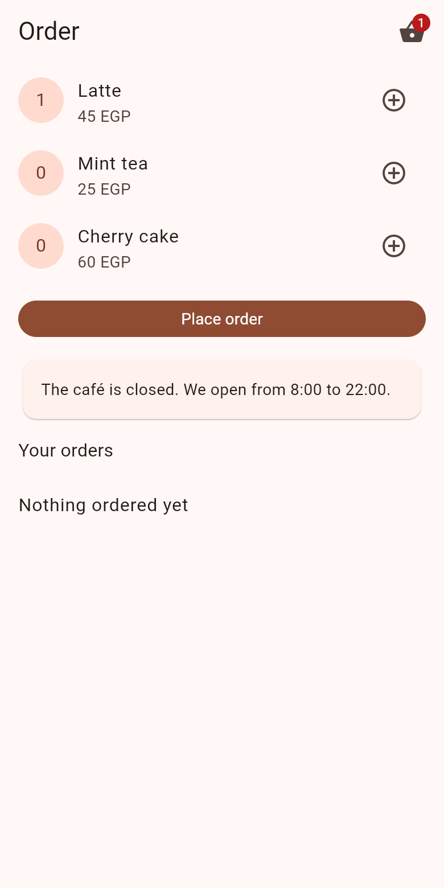
One override: 23:00
One override: offline
3.5Rebuild only what changed
A widget that watches the whole basket rebuilds whenever anything in it changes. Often it needs much less: the Place button only needs to know whether the basket is empty. select watches one value computed from a provider, and rebuilds only when that value changes. The test adds three items and counts the builds of two widgets:
$ flutter test test/select_test.dart
00:00 +0: loading test/select_test.dart
00:00 +0: select rebuilds only when the selected value changes
{whole basket: 4, select isEmpty: 2}
00:00 +1: All tests passed!
Four builds for the whole basket, once at the start and once per item. Two for isEmpty: at the start, and when the basket stopped being empty. The basket badge in the bar does the same with a provider: it watches basketCountProvider, not the basket.
3.6One override
Because every dependency is a provider, any of them can be replaced at the root of a container, with overrides. The three screens above are the same app, and differ only in this:
In a test, the same line runs the rules without a network. The source counts what reached it: nothing, because the café was closed, and the basket was kept for later:
$ flutter test test/override_test.dart
00:00 +0: loading test/override_test.dart
00:00 +0: one override, and the rules run without the network
00:00 +1: All tests passed!
And the whole screen, tapped as a person would, with the history refreshing itself after the order:
Terminal
$ flutter test test/page_test.dart
00:00 +0: loading test/page_test.dart
00:00 +0: adding, placing, and the history refreshed
00:01 +1: All tests passed!
Common mistakes
Mistake
What happens
Fix
ref.read in build
The widget never updates
ref.watch in build; read in callbacks
ref.watch in a callback
Rebuilds and subscriptions in the wrong place
ref.read in callbacks and methods
Changing state in place
Nobody is notified
Assign a new value to state
Only a spinner while hasError
The person waits forever during retries
Show the error and a Retry button
Refreshing screens by hand after an action
Forgotten screens show stale data
ref.invalidate the provider that became stale
A provider created inside build
A new provider, and lost state, on every build
Top-level providers; family for parameters
Summary
Providers are top-level declarations; values live in a container (ProviderScope, ProviderContainer) and are created on first use.
Dependencies are providers that ref.watch each other; one file per feature wires them.
Notifier holds changing state as immutable values; derived providers compute from it.
FutureProvider and AsyncNotifier give AsyncValue: switch on data, error and loading, in that order. Riverpod retries failures unless told not to.
select and derived providers rebuild only what changed; ref.invalidate refreshes what an action made stale.
Overrides replace any dependency, in one line, for tests and for different builds.
Quick check answers: 1. ref.watch in build methods (of widgets and providers), where a change should rebuild; ref.read in callbacks and notifier methods, to use a value once. 2. Because Riverpod notifies when state becomes a different object; changing the same map in place leaves it the same object, so nobody would be told. 3. A value that is still loading but carries the error, so the screen can show the error and a Retry button instead of a spinner.
Practice projects
Each project adds a Riverpod tool the chapter only mentioned. The tests are the point: each one proves the behaviour the tool promises.
Project 3.1 · Easy
One provider per order
A provider that gives one order by its id, built from the history, and cached per id.
You will practise:FutureProvider.family, ref.watch of another provider’s future, and caching.
Inside, await ref.watch(historyProvider.future) and return the order with that id, or null (firstWhereOrNull from the collection package).
In a test, place two orders, read orderProvider(1) and orderProvider(2), check their totals, check that id 3 gives null, and that reading id 1 again gives the very same object.
Hint: because orderProvider watches the history, invalidating the history after a new order refreshes every order provider too. Nothing has to remember to update them.
Your result should look like this:
Terminal
$ flutter test test/family_test.dart
00:00 +0: loading test/family_test.dart
00:00 +0: each order id has its own provider, cached
00:01 +1: All tests passed!
Project 3.2 · Medium
A search that cancels itself
Search the menu as the person types, without searching for every letter.
You will practise:autoDispose, family, ref.onDispose, and a debounce without a timer.
A Notifier holds the query; the text field’s onChanged sets it.
searchProvider is FutureProvider.autoDispose.family on the query. It registers ref.onDispose, waits 300 milliseconds, and searches only if it was not disposed meanwhile.
Typing a new letter makes the page watch a new query: the old one has no watcher left, is disposed, and never searches.
Test by typing three letters 100 milliseconds apart, and check that only the empty query and the last one were searched.
Hint: this is Book 5’s debounce without a Timer to cancel: autoDispose does the cancelling. For a real network request, also cancel the request in onDispose, so that it does not finish uselessly.
Your result should look like this:
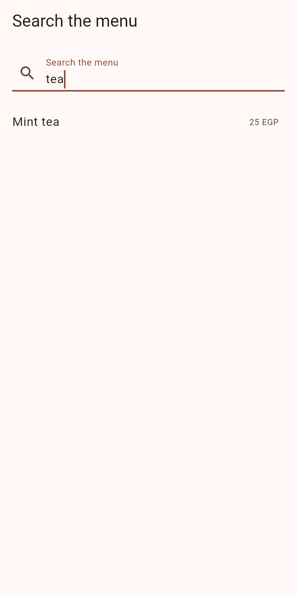
Project 3.2: one search, for the last text.
Terminal
$ flutter test test/search_test.dart
00:00 +0: loading test/search_test.dart
00:00 +0: only the last query is searched
00:01 +1: All tests passed!
Project 3.3 · Challenge
Undo, for free
A basket that can undo any number of changes, one at a time.
You will practise: immutable state, a history of states in a notifier, and container.listen in tests.
Every change goes through one private method that pushes the current state onto a list, then sets the new one.
undo pops the last state back; canUndo says whether there is one.
Test a sequence: add, add, add, remove; then undo four times, checking the basket after each, and that eight states were announced.
Hint: this only works because states are never changed in place: each old map is still exactly what it was. With a mutable basket, the “history” would be four references to the same, latest map.
Your result should look like this:
Terminal
$ flutter test test/undo_test.dart
00:00 +0: loading test/undo_test.dart
00:00 +0: undo goes back one state at a time
00:00 +1: All tests passed!
Exercises
Easy Change BasketNotifier.add to change the map in place (state[item] = …). Which tests fail, and what does the screen do when you tap?
Easy Remove ref.invalidate(historyProvider) from place. What does the page show after an order, and when does it catch up?
Medium Show a snack bar when an order is placed, using ref.listen in the page’s build. Why listen and not watch?
Medium Turn off retries for historyProvider only, with its retry parameter, and check the offline screen. When would you choose that in a real app?
Challenge Write a fourth composition root that overrides historyProvider itself with three fixed orders. What does that skip that overriding the source does not?
Answers to the exercises are at the end of the book and in the book’s code repository.
Coming up in Chapter 4
The orders feature lives on one screen. A real app has dozens, with links into them from notifications and the web, a back button that must make sense, and screens that only signed-in people may open. The next chapter does it with go_router.
4
Chapter 4
Navigation at Scale with go_router
In this chapter you will learn to
describe every screen of an app as an address, in one router
open any screen directly from a link, with a back button that makes sense
keep tabs alive, each with its own stack of pages
protect screens with a redirect that returns people where they wanted to go, and only inside the app
handle addresses that do not exist, and changes that should not be lost
Book 5 moved between screens with Navigator.push: “now show this page on top”. That works until the app has to open a screen from outside: a notification about order 2, a link in a message, the address bar of a browser, a phone restoring the app after a restart. Each of those arrives as an address, not as a push, and the app must build the right stack of pages for it. This chapter makes the address the source of truth, with go_router, the router maintained by the Flutter team.
Bit
The screenshots in this chapter were taken by opening the app at an address, such as #/orders/2, exactly as a link from outside would, instead of tapping through it.
First, all the addresses, in one place. Screens build links with these functions and never by joining text, so a renamed path is changed once, and a query value is always encoded:
lib/cafe/routes.dart
// Every address in one place: links build them here, and never by hand.abstractfinalclass Routes {
staticconst menu = '/menu';
staticconst orders = '/orders';
staticconst account = '/account';
staticconst edit = '/account/edit';
staticString drink(String id) => '/menu/$id';
staticString order(int id) => '/orders/$id';
staticString menuUpTo(int max) =>
Uri(path: menu, queryParameters: {'max': '$max'}).toString();
staticString signIn({requiredString from}) =>
Uri(path: '/signin', queryParameters: {'from': from}).toString();
}
Then the router: a tree of routes, each with its path and the page it builds. The structure of the tree is the structure of the app:
lib/cafe/router.dart (part)
routes: [
// Three tabs, each with its own stack of pages, kept alive when you switch.
StatefulShellRoute.indexedStack(
builder: (context, state, shell) => TabsScaffold(shell: shell),
branches: [
StatefulShellBranch(
routes: [
GoRoute(
path: Routes.menu,
builder: (context, state) => MenuPage(
max: int.tryParse(state.uri.queryParameters['max'] ?? ''),
),
routes: [
// A child route: /menu/latte sits on top of /menu, so the back button returns to the menu.
GoRoute(
path: ':id',
builder: (context, state) =>
DrinkPage(id: state.pathParameters['id']!),
),
],
),
],
),
StatefulShellBranch(
routes: [
GoRoute(
path: Routes.orders,
builder: (context, state) => const OrdersPage(),
routes: [
GoRoute(
path: ':id',
builder: (context, state) =>
OrderPage(id: int.tryParse(state.pathParameters['id']!)),
),
],
),
],
),
StatefulShellBranch(
routes: [
GoRoute(
path: Routes.account,
builder: (context, state) => AccountPage(auth: auth),
routes: [
GoRoute(
path: 'edit',
builder: (context, state) => const EditNamePage(),
// Asked before leaving this route by any way: back button, tab, or go.
onExit: (context, state) =>
EditNamePage.confirmLeave(context),
),
],
),
],
),
],
),
// Outside the shell: sign-in covers the whole screen, without tabs.
GoRoute(
path: '/signin',
builder: (context, state) => SignInPage(
auth: auth,
from: state.uri.queryParameters['from'] ?? Routes.menu,
),
),
],
);
:id is a path parameter: /menu/latte builds DrinkPage(id: 'latte').
A route inside another is a child route, and its page is stacked on its parent’s: opening /menu/latte builds the menu with the drink on top of it.
Pages move with context.go(address). The router compares the new address with the tree and builds the matching stack.
4.2Deep links
A deep link opens a screen deep inside the app. Because /orders/2 is a child of /orders, opening it directly still builds both pages, and the back arrow appears and works, although the person never saw the list:
Opened at #/menu
Opened at #/orders/2
On the web, the address bar is the address. On phones, links reach the app after a small setup outside Dart: an intent filter in AndroidManifest.xml with your domain, and the Associated Domains capability with an apple-app-site-association file on your site for iOS. Flutter then hands the link to the router, which treats it like any go.
4.3Tabs that keep their state
Most apps have a bar of tabs, and people expect each tab to remember where they were. A StatefulShellRoute gives each tab, a branch, its own navigator and its own stack, and keeps all of them alive:
lib/cafe/pages.dart (part)
class TabsScaffold extends StatelessWidget {
const TabsScaffold({super.key, requiredthis.shell});
final StatefulNavigationShell shell;
@override
Widget build(BuildContext context) {
return Scaffold(
body: shell,
bottomNavigationBar: NavigationBar(
selectedIndex: shell.currentIndex,
// goBranch switches tab and keeps each tab's stack; tapping the current tab again goes to its first page.
onDestinationSelected: (i) =>
shell.goBranch(i, initialLocation: i == shell.currentIndex),
destinations: const [
NavigationDestination(icon: Icon(Icons.local_cafe), label: 'Menu'),
NavigationDestination(
icon: Icon(Icons.receipt_long),
label: 'Orders',
),
NavigationDestination(icon: Icon(Icons.person), label: 'Account'),
],
),
);
}
}
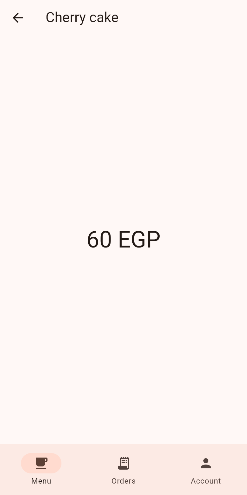
Figure 4.1: Cherry cake opened, then the Orders tab, then back to Menu: the cake is still there.
The test drives the same steps, then a deep link, then the back button:
test/tabs_test.dart (part)
final router = await pumpCafe(tester, Auth());
await tester.tap(find.text('Cherry cake'));
await tester.pumpAndSettle();
await tester.tap(find.text('Orders'));
await tester.pumpAndSettle();
await tester.tap(find.text('Menu').last);
await tester.pumpAndSettle();
expect(where(router), '/menu/cake');
// A deep link straight to an order: the stack is built, so back returns to the list.
router.go('/orders/2');
await tester.pumpAndSettle();
await tester.tap(find.byType(BackButton));
await tester.pumpAndSettle();
expect(where(router), '/orders');
});
Terminal
$ flutter test test/tabs_test.dart
00:00 +0: loading test/tabs_test.dart
00:00 +0: tabs keep their pages, and deep links have a way back
00:01 +1: All tests passed!
4.4Redirects
The account tab is only for people who signed in. A redirect runs before every navigation: it looks at where the person is going and returns either null, “go ahead”, or another address:
lib/cafe/router.dart (part)
// Runs before every navigation. Return a new address to send the person elsewhere, or null.
redirect: (context, state) {
final path = state.matchedLocation;
if (!auth.signedIn && path.startsWith(Routes.account)) {
return Routes.signIn(from: state.uri.toString());
}
if (auth.signedIn && path == '/signin') {
// Remember where the person wanted to go, and only ever return inside the app.final from = state.uri.queryParameters['from'] ?? Routes.menu;
return from.startsWith('/') && !from.startsWith('//')
? from
: Routes.menu;
}
returnnull;
},
A signed-out person going to anything under /account is sent to /signin, with the address they asked for in from.
refreshListenable: auth runs the redirect again whenever the sign-in state changes. Signing in on the sign-in page therefore triggers the second rule, which sends the person to from: nobody had to call go after signing in.
Signing out while on the account page sends the person back to sign-in, by the first rule, for the same reason.
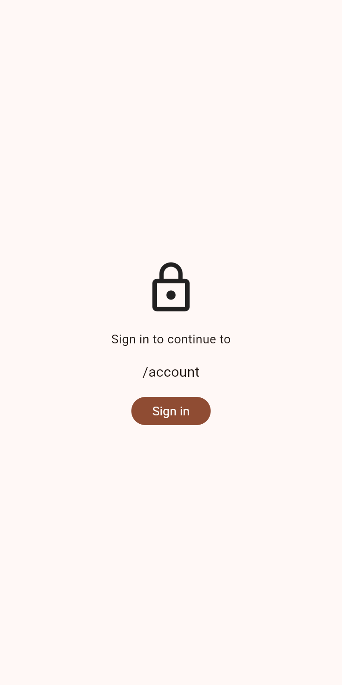
Figure 4.2: Opened at #/account while signed out.
Terminal
$ flutter test test/redirect_test.dart
00:00 +0: loading test/redirect_test.dart
00:00 +0: sign-in is required for the account, and returns where it was asked
signed out, asked /account: /signin?from=%2Faccount
after signing in: /account
after signing out: /signin?from=%2Faccount
from an outside address: /menu
00:01 +1: All tests passed!
4.5Addresses that do not exist
Links get old, people type, apps change their paths. Two different failures need two different answers:
An address that matches no route at all, like /nothing/here, reaches errorBuilder: a full page that says so and offers a way home.
An address that matches a route with an id that does not exist, like /orders/9 or /menu/coffee, is the page’s job: it knows what an order is, and says “no order number 9” inside the normal layout, with the tabs and the back arrow.
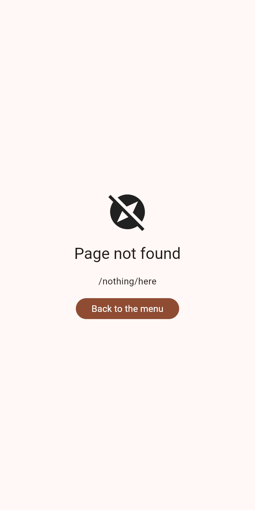
No route: #/nothing/here
Terminal
$ flutter test test/missing_test.dart
00:00 +0: loading test/missing_test.dart
00:00 +0: unknown addresses and ids get a page that says so
00:01 +1: All tests passed!
4.6go and push
go sets the address and rebuilds the stack to match it. push puts a page on top of whatever is there, like Navigator.push, and the address may not describe the stack any more. Prefer go, so that the address always tells the truth and every screen can be reopened from a link. Use push for pages that return a value to the one below, such as a picker, and for dialogs, which are not destinations.
Common mistakes
Mistake
What happens
Fix
Links built by joining text everywhere
A renamed path breaks links; values with spaces break addresses
One Routes class, with Uri for queries
Detail pages as separate top-level routes
A deep link has no back button
Child routes under their list
Tabs as plain routes
Switching tabs loses scroll and pages
StatefulShellRoute.indexedStack
Calling go after sign-in by hand
Some sign-in paths forget it
A redirect with refreshListenable
Trusting from
An open redirect to any site
Accept only paths that start with one /
int.parse on a path parameter
A crash for /orders/abc
int.tryParse, and a page for nonsense
Summary
Every screen is an address; one router maps addresses to stacks of pages; one Routes class builds every link.
Child routes make deep links come with their parents, so back works.
StatefulShellRoute.indexedStack gives each tab its own stack and keeps it alive.
A redirect guards routes; refreshListenable re-runs it when sign-in changes; from is accepted only inside the app.
errorBuilder for unknown addresses, and each page for unknown ids.
Prefer go; keep push for pages that return values.
Quick check answers: 1. Because /orders/:id is a child of /orders, so the router builds both pages for that address, and the back arrow pops to the list. 2. refreshListenable: auth: the change re-runs the redirect, whose second rule sends a signed-in person away from /signin to from. 3. null.
Practice projects
The projects use the same router. Each adds something every large app needs sooner or later.
Project 4.1 · Easy
One place for every link
Build every address with functions in Routes, and test that they are right, including the encoding of queries.
You will practise:Uri with query parameters, and testing addresses.
Add functions for each address with a parameter: order(id), drink(id), menuUpTo(max), signIn(from:).
Build queries with Uri(path: …, queryParameters: …), never with '?max=$max'.
Test that signIn(from: '/account?tab=2') encodes the inner ?, / and =.
Hint: search the project for go('/: every result is a link that does not use Routes. A lint rule or a test that greps for it keeps it that way.
Your result should look like this:
Terminal
$ flutter test test/routes_test.dart
00:00 +0: loading test/routes_test.dart
00:00 +0: links are built in one place, and encoded correctly
00:00 +1: All tests passed!
Project 4.2 · Medium
Filters in the address
Filter the menu by price with chips, keeping the filter in the address so it can be shared, bookmarked and undone with back.
You will practise: query parameters, state.uri.queryParameters, and parsing them safely.
The menu route reads max from the query with int.tryParse, and passes it to the page.
Chips call context.go(Routes.menuUpTo(limit)); “Any price” goes to the plain menu.
Test that opening /menu?max=50 hides the cake, and that tapping “Up to 30” changes the address.
Hint: state that should survive a link (a filter, a search, a selected tab inside a page) belongs in the address; state that should not (a half-typed comment) belongs in the page.
Your result should look like this (opened at #/menu?max=50):
Project 4.2: the filter came from the address.
Terminal
$ flutter test test/query_test.dart
00:00 +0: loading test/query_test.dart
00:00 +0: the filter comes from the address
00:01 +1: All tests passed!
Project 4.3 · Challenge
Do not lose unsaved changes
An edit page that asks before it is left with unsaved changes, whether by the back button, another tab, or a link.
You will practise:onExit on a route, dialogs that return values, and testing several ways out.
Add /account/edit as a child of the account route, with a text field that marks the page as having unsaved changes.
Give the route onExit, which returns true at once if nothing is unsaved, and otherwise shows a dialog “Leave without saving?” and returns the answer.
Test both ways out: the back button, where Stay keeps the page; and the Menu tab, where Discard leaves.
Hint:onExit runs for every way of leaving the route through the router, which is why it is better than catching only the back button. Keep the unsaved flag somewhere the route can see; a real app keeps it in the page’s state provider.
Your result should look like this:
Terminal
$ flutter test test/exit_test.dart
00:00 +0: loading test/exit_test.dart
00:00 +0: unsaved changes are not lost by accident
00:01 +1: All tests passed!
Exercises
Easy Open #/orders/9 and #/orders/abc. What do the two pages say, and why is it not the not-found page?
Easy Make /orders/:id a top-level route instead of a child of /orders, and open it directly. What changed, and why?
Medium Tapping the current tab again returns to its first page. Find the line that does it, and explain initialLocation in goBranch.
Medium Add a redirect rule: /menu/:id with an id that is not on the menu goes to /menu. Is that better or worse for people than the page’s message?
Challenge Move Auth into a Riverpod provider. How do you give refreshListenable something to listen to, and where is the router created so that tests can still replace the auth?
Answers to the exercises are at the end of the book and in the book’s code repository.
Coming up in Chapter 5
Every page in this chapter used data that was already in the app. The next chapter takes the network seriously: a client with timeouts, errors that tell the screen exactly what happened, retries that do not make things worse, and tests for all of it.
5
Chapter 5
Networking, Errors and Retries
In this chapter you will learn to
send every request of the app through one client, with a timeout
turn everything that can go wrong into typed errors the screens can switch on
retry only what may succeed, with exponential backoff and jitter, and respect Retry-After
make repeated orders safe with idempotency keys
refresh an expired token once, however many requests need it
test all of it without waiting, and watch it against a real, unreliable server
On a developer’s desk the network always works. On a phone it does not: the train enters a tunnel, the café’s server restarts during a deploy, a thousand people open the app when the match ends, a token expires in the middle of an order. Book 5 caught exceptions and showed a message. This chapter builds the layer that every serious app has between its repositories and the internet: one client that knows what each failure means, which ones are worth another try, how long to wait, and how to repeat an order without charging twice.
Bit
The last terminal in Section 5.4 was not simulated: a small Dart server that fails two requests out of three ran on the book’s machine, and the client really waited between its tries. Everywhere else, the tests replace waiting with a log, so that they run in milliseconds.
5.1Every failure, as a type
A request can end in seven different ways, and each one needs a different answer from the app. A sealed class lists them:
lib/api/errors.dart (part)
// Everything that can go wrong with a request, as types the screen can switch on.sealedclass ApiError implements Exception {
const ApiError();
}
finalclass Offline extends ApiError {
const Offline();
}
finalclass TimedOut extends ApiError {
const TimedOut();
}
finalclass Unauthorized extends ApiError {
const Unauthorized();
}
finalclass NotFound extends ApiError {
const NotFound();
}
/// The server refused the request (400, 409, 422…), with its reason.finalclass Rejected extends ApiError {
const Rejected(this.status, this.message);
finalint status;
finalString message;
}
/// 429 and 5xx: the server could not answer now.finalclass ServerError extends ApiError {
const ServerError(this.status, {this.retryAfter});
finalint status;
final Duration? retryAfter;
}
finalclass BadResponse extends ApiError {
const BadResponse(this.detail);
finalString detail;
}
String describe(ApiError e) => switch (e) {
Offline: the request never reached the server. TimedOut: it may have, but no answer came in time.
Unauthorized and NotFound need their own screens: sign in again, or explain that the thing is gone.
Rejected is the server saying no for a reason (sold out, invalid address); its message is for the person.
ServerError covers 429 (too many requests) and the 5xx statuses; BadResponse is a 200 whose body cannot be read, usually an old app talking to a new server.
The client turns every status into one of these, once, in one place. A test sends a different status for each request:
Terminal
$ flutter test test/map_test.dart
00:00 +0: loading test/map_test.dart
00:00 +0: each status becomes its error
200 -> {ok: true}
201 -> BadResponse
401 -> Unauthorized
404 -> NotFound
409 -> Rejected(409, Sold out)
500 -> ServerError(500)
503 -> ServerError(503)
00:00 +1: All tests passed!
A 201 with a body that is not JSON is a BadResponse, not a success: the client never returns data it could not read.
// GET is safe to repeat. POST only with an idempotency key, which lets the server recognise a repeat.Future<Object?> get(String path) => _send('GET', path, retry: true);
Future<Object?> post(String path, Object body, {String? idempotencyKey}) =>
_send(
'POST',
path,
body: body,
headers: {'idempotency-key': ?idempotencyKey},
retry: idempotencyKey != null,
);
Future<Object?> _send(
String method,
String path, {
Object? body,
Map<String, String> headers = const {},
requiredbool retry,
}) async {
for (var attempt = 1; ; attempt++) {
try {
final result = await _once(method, path, body, headers);
log?.call('attempt $attempt: OK');
return result;
} on ApiError catch (e) {
log?.call('attempt $attempt: ${describe(e)}');
if (!retry || attempt >= policy.attempts || !retryable(e)) {
rethrow;
}
// If the server says when to come back, believe it.final wait =
(e is ServerError ? e.retryAfter : null) ??
policy.delay(attempt - 1, random);
log?.call(' waiting ${wait.inMilliseconds} ms');
await sleep(wait);
}
}
}
Future<Object?> _once(
String method,
String path,
Object? body,
Map<String, String> headers,
) async {
final request = http.Request(method, Uri.parse('$base$path'))
..headers.addAll({'accept': 'application/json', ...headers});
if (body != null) {
request.headers['content-type'] = 'application/json';
request.body = jsonEncode(body);
}
final http.Response response;
try {
// No answer in time is a failure too. The timeout covers the whole request: sending, waiting, and reading.
response = await client
.send(request)
.then(http.Response.fromStream)
.timeout(timeout);
} on TimeoutException {
throwconst TimedOut();
} on http.ClientException {
throwconst Offline();
}
final status = response.statusCode;
if (status >= 200 && status < 300) {
if (response.bodyBytes.isEmpty) {
returnnull;
}
try {
return jsonDecode(utf8.decode(response.bodyBytes));
} on FormatException catch (e) {
throw BadResponse(e.message);
}
}
// Each status becomes the error it means.throwswitch (status) {
401 => const Unauthorized(),
404 => const NotFound(),
429 || >= 500 => ServerError(status, retryAfter: _retryAfter(response)),
_ => Rejected(status, _message(response)),
};
}
Every request goes through _send, so every request has a timeout, the same headers, the same error mapping and the same retry rules. A repository never calls http itself.
GET is retried, because asking again for the menu cannot do harm. POST is retried only with an idempotency key, explained in Section 5.5: without one, a retry could place a second order.
Waiting goes through sleep, given in the constructor, so that tests can record waits instead of waiting.
5.3When to retry, and how long to wait
Retrying is not always kind. A 500 is usually a bug: asking again gives the same bug, three times. A 409 Sold out will not become available in 200 milliseconds. Only some failures may pass by themselves:
lib/api/retry.dart (part)
// How many times to try, and how long to wait between tries.class RetryPolicy {
const RetryPolicy({
this.attempts = 4,
this.base = const Duration(milliseconds: 200),
this.cap = const Duration(seconds: 5),
});
finalint attempts;
final Duration base;
final Duration cap;
// Full jitter: a random wait between zero and the doubling limit, so that a thousand phones do not retry at the same moment.
Duration delay(int retry, Random random) {
final limit = min(
cap.inMilliseconds,
base.inMilliseconds * pow(2, retry).toInt(),
);
return Duration(milliseconds: random.nextInt(limit + 1));
}
}
// Only failures that may pass: no connection, a timeout, an overloaded or restarting server.bool retryable(ApiError e) => switch (e) {
Offline() || TimedOut() => true,
ServerError(:final status) =>
status == 429 || status == 502 || status == 503 || status == 504,
_ => false,
};
The wait doubles each time (exponential backoff), so a struggling server gets more and more air, and it is chosen at random below that limit (jitter). Without the randomness, every phone that failed at the same second would retry at the same second, again and again, in waves that keep the server down. The test shows each rule with a server that answers whatever statuses it is told:
Terminal
$ flutter test test/retry_test.dart
00:00 +0: loading test/retry_test.dart
00:00 +0: retries wait longer each time, and only when it can help
GET, busy three times:
attempt 1: ServerError(503)
waiting 108 ms
attempt 2: ServerError(503)
waiting 244 ms
attempt 3: ServerError(503)
waiting 368 ms
attempt 4: OK
GET, a bug on the server:
attempt 1: ServerError(500)
POST without a key:
attempt 1: ServerError(503)
POST with a key:
attempt 1: ServerError(503)
waiting 108 ms
attempt 2: OK
429 with Retry-After: 2
attempt 1: ServerError(429)
waiting 2000 ms
attempt 2: OK
00:00 +1: All tests passed!
Three 503s, then success on the fourth attempt, waiting a little longer each time: 108, 244 and 368 milliseconds, random under limits of 200, 400 and 800.
A 500 is not retried, nor a POST without a key. A POST with a key is.
A 429 with Retry-After: 2 waits exactly two seconds: when the server says when to come back, the client believes it.
5.4Timeouts, and a real unreliable server
A request with no timeout can wait for minutes, while the person stares at a spinner. The client gives every request a deadline:
test/timeout_test.dart (part)
final never = MockClient((r) => Completer<http.Response>().future);
final api = ApiClient(
never,
base: '',
timeout: const Duration(milliseconds: 50),
policy: const RetryPolicy(attempts: 1),
);
final watch = Stopwatch()..start();
await expectLater(api.get('/menu'), throwsA(isA<TimedOut>()));
expect(watch.elapsedMilliseconds, lessThan(1000));
});
}
Terminal
$ flutter test test/timeout_test.dart
00:00 +0: loading test/timeout_test.dart
00:00 +0: a server that never answers becomes a TimedOut
00:00 +1: All tests passed!
Tests prove the rules; a real network shows how they feel. This server, in plain Dart, answers /menu with 503 two times out of three, takes three seconds on /slow, and asks for patience on /busy:
A small program sends four requests through the real client, with a one-second timeout, printing the time of each line:
Terminal
$ dart run bin/demo.dart
GET /menu
0.1s attempt 1: ServerError(503)
0.1s waiting 108 ms
0.2s attempt 2: ServerError(503)
0.2s waiting 244 ms
0.5s attempt 3: OK
-> [{name: Latte, price: 45}]
GET /slow
1.0s attempt 1: TimedOut
1.0s waiting 173 ms
2.2s attempt 2: TimedOut
2.2s waiting 247 ms
3.4s attempt 3: TimedOut
3.4s waiting 223 ms
4.7s attempt 4: TimedOut
-> TimedOut
GET /busy
0.0s attempt 1: ServerError(429)
0.0s waiting 1000 ms
1.0s attempt 2: ServerError(429)
1.0s waiting 1000 ms
2.0s attempt 3: ServerError(429)
2.0s waiting 1000 ms
3.0s attempt 4: ServerError(429)
-> ServerError(429)
GET /missing
0.0s attempt 1: NotFound
-> NotFound
The menu arrived on the third attempt, after two short waits. /slow timed out after one second, four times, with short random waits between: 4.7 seconds in all, then TimedOut. /busy waited exactly the second it was asked for, each time, and gave up after four attempts. /missing failed at once: a 404 will not appear by waiting.
5.5Repeating an order safely
The worst network failure is the silent success: the server saved the order, and the answer was lost on the way back. The app sees an error, and the person, or the retry logic, sends the order again. Now there are two orders, and two charges.
An idempotency key fixes it. The app creates one key for each order the person places, and sends it with every attempt of that order. The server remembers the keys it has seen, and answers a repeat with the first result instead of creating a second order. Project 5.2 builds exactly this, with a server that loses the first answer.
5.6Showing errors
The screen switches on the error type, and each type has its own words. The menu below loaded through a pretend server inside the app that was busy twice, and the page prints what the client logged:
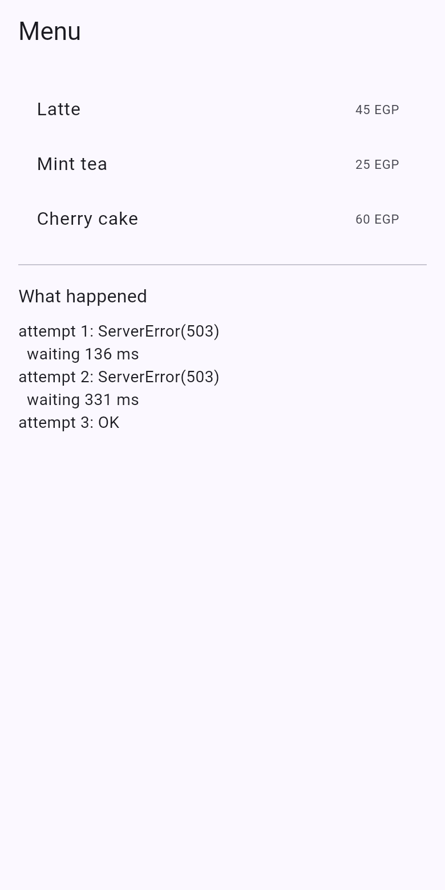
Figure 5.1: Two 503s, two short waits, then the menu.
Nobody saw an error: two failures were absorbed in under half a second. That is the goal of this whole chapter. When retries are not enough, Project 5.1 gives every error its words, in the person’s language.
Common mistakes
Mistake
What happens
Fix
No timeout
Spinners that turn for minutes
A timeout on every request, in the client
Retrying everything
The same bug three times; overloaded servers kept down
Retry only offline, timeouts, 429, 502, 503, 504
Fixed waits
Thousands of phones retry together, in waves
Exponential backoff with jitter
Retrying POST blindly
Duplicate orders and charges
Idempotency keys, or no retry
Retrying in several layers
One failure becomes dozens of requests
Retry in the client only
Showing e.toString()
“ClientException: SocketException…” on screen
A typed error, and words chosen for people
Summary
One client sends every request, with a timeout, and turns every outcome into data or a typed ApiError.
Retry only failures that may pass by themselves; wait with exponential backoff and full jitter; respect Retry-After; retry in one layer only.
GET may be repeated; POST only with an idempotency key created when the person acts.
Inject the clock’s waiting and the randomness, so that tests are instant and repeatable.
Screens switch on the error type and choose words for people.
Quick check answers: 1. The timeout and the 503; a 409 is a refusal that will not change by waiting, and a 500 is usually a bug that gives the same answer again. 2. So that many phones that failed together do not retry together: random waits spread them out, and the server recovers. 3. Because the first attempt may have succeeded with its answer lost; without a key the server cannot know that the second one is a repeat, and creates a second order.
Practice projects
The projects finish the client: words for every error, safe repeats, and expired tokens. Each one has a test that would catch the bug it prevents.
Project 5.1 · Easy
Words for every error
A function that gives each ApiError a message for people, with the server’s own reason when it sends one.
You will practise: exhaustive switches on sealed types, and patterns on fields.
Write message(ApiError e) as a switch expression with one case per type.
Use a pattern on the status to give 429 and 503 their own words: ServerError(status: 429 || 503), before the general ServerError().
For Rejected, return the server’s message: it already explains the reason.
Test four errors, including both kinds of server error.
Hint: in a two-language app, these strings belong in the ARB files of Book 5, Chapter 13; the switch stays the same and returns l.offline and so on.
Your result should look like this:
lib/api/messages.dart (part)
// The screen's words for each error: the switch must cover them all.String message(ApiError e) => switch (e) {
Offline() => 'No connection. Check your internet and try again.',
TimedOut() => 'The café is taking too long to answer. Try again in a moment.',
Unauthorized() => 'Please sign in again.',
NotFound() => 'This was not found. It may have been removed.',
Rejected(:final message) => message,
ServerError(status: 429 || 503) =>
'The café is very busy. Try again in a minute.',
ServerError() => 'Something went wrong on our side. We are on it.',
BadResponse() =>
'The answer from the café could not be read. Please update the app.',
};
Terminal
$ flutter test test/messages_test.dart
00:00 +0: loading test/messages_test.dart
00:00 +0: every error has words, in the language of the person
00:00 +1: All tests passed!
Project 5.2 · Medium
The order that was saved twice
Reproduce the lost-answer problem in a test, and show that an idempotency key makes it harmless.
You will practise: a fake server with memory, idempotency keys, and testing a failure that happens after success.
A fake server saves every order it receives, but throws a connection error instead of answering the first one.
It also keeps a map from idempotency key to order id, and answers a known key with the first order’s id.
Post one order with a key, letting the client retry: one order on the server.
Post without a key, and “tap again” after the error: two orders on the server.
Hint: keys must be unique per action and hard to guess: a UUID from the uuid package, created when the person taps Order, and kept until the order is confirmed.
Your result should look like this:
Terminal
$ flutter test test/idempotency_test.dart
00:00 +0: loading test/idempotency_test.dart
00:00 +0: with a key, a retried order is created once
with a key: answer {id: 1}, orders on the server: [1]
without a key, tapped twice: orders on the server: [1, 2]
00:00 +1: All tests passed!
Project 5.3 · Challenge
One refresh for many requests
An HTTP client that adds the access token to every request and, on a 401, refreshes the token once, even when several requests fail at the same moment.
You will practise: extending http.BaseClient, copying requests, and sharing one Future between callers.
Extend http.BaseClient and override send: copy the request with an Authorization header, and send it with the inner client.
On a 401, start a refresh if none is running, keeping its Future in a field; requests that arrive meanwhile await the same Future.
Clear the field when the refresh completes, store the new token, and send the copied request again.
Test with three parallel requests and an expired token: three answers of 200, and exactly one refresh.
Hint: without the shared Future, three requests start three refreshes, and with many servers each refresh invalidates the token of the one before: the app signs itself out. Also stop after one retry: if the refreshed token gets a 401 too, the person must sign in again.
Your result should look like this:
Terminal
$ flutter test test/refresh_test.dart
00:00 +0: loading test/refresh_test.dart
00:00 +0: three requests, one refresh
00:00 +1: All tests passed!
Exercises
Easy A request has 4 attempts, a base of 200 ms and a cap of 5 seconds. What is the longest it can wait in total before giving up, not counting the requests themselves?
Easy Change the map test so that the server answers 200 with an empty body. What does get return, and why is that not a BadResponse?
Medium Add a Cancelled error and a way for the screen to stop retrying when the person leaves it. Where would you check it?
Medium Log every request’s method, path, status and duration, without logging the Authorization header or the body. Why those two?
Challenge Write a test that runs one hundred clients against a server that fails for the first two seconds, with and without jitter, and counts requests per 100 milliseconds. What does the difference look like?
Answers to the exercises are at the end of the book and in the book’s code repository.
Coming up in Chapter 6
Retries help when the network comes back in a second. When it is gone for an hour, people still want to read their orders and add to their basket. The next chapter makes the app work offline first: a local database as the source of truth, and synchronisation when the network returns.
6
Chapter 6
Offline-First Apps
In this chapter you will learn to
make a local store the source of truth for every screen
keep unsent changes in an outbox, and send them when the network returns
write a sync engine that pushes, then pulls only what changed
resolve conflicts field by field, with a clear owner for each field
survive lost answers and refusals without duplicates or endless retries
Chapter 5 made the app patient when the network blinks. This chapter makes it useful when the network is gone: in the metro, in a basement, on a plane, in a country road. The idea is simple and changes everything: screens never wait for the server. They read and write a store on the phone, which answers at once, and a separate engine keeps that store and the server in agreement, whenever it can.
Bit
The fake server in this chapter is unkind on purpose: it goes offline, loses an answer after saving an order, refuses sold-out items, and changes statuses behind the app’s back. Every one of those is something a real server will do to your app eventually.
6.1The local store is the truth
screens ──watch / write──▶ local store ◀──push / pull──▶ server
(outbox) sync engine
Screens watch the local store: a stream that gives the current orders, then every change. They never call the server.
Writing an order writes it locally, marked as queued: it appears on the screen at once, online or not.
The sync engine pushes queued changes to the server and pulls what changed there, whenever it runs: after a write, on a button, when the network returns.
Each order carries how far it got:
lib/offline/order.dart (part)
// One order as this phone knows it, with how far it got in reaching the server.class Order {
const Order({
requiredthis.id,
requiredthis.title,
this.note = '',
this.status = 'new',
this.sync = SyncState.queued,
this.version = 0,
this.error,
});
finalString id;
finalString title;
// Who owns which field: the person writes the note; the café writes the status.finalString note;
finalString status;
final SyncState sync;
finalint version;
finalString? error;
Order copyWith({
String? note,
String? status,
SyncState? sync,
int? version,
String? error,
}) => Order(
id: id,
title: title,
note: note ?? this.note,
status: status ?? this.status,
sync: sync ?? this.sync,
version: version ?? this.version,
error: error ?? this.error,
);
}
Two of its fields have different owners. The person writes the note; only the café changes the status. Saying this out loud, for every field, is what makes conflicts solvable later.
6.2The store and its outbox
lib/offline/local_store.dart (part)
// The source of truth for every screen. Screens watch it; they never wait for the network.abstractinterfaceclass LocalStore {
Stream<List<Order>> watch();
Future<List<Order>> all();
Future<Order?> get(String id);
Future<void> put(Order order);
// The outbox: every order with changes the server has not confirmed yet, oldest first.Future<List<Order>> outbox();
Future<int> cursor();
Future<void> setCursor(int version);
}
watch is a stream: the screens rebuild when anything changes, whoever changed it, the person or the sync engine.
The outbox is every order with a change the server has not confirmed, oldest first. Here it is a state on each order; apps with many kinds of changes keep a separate table of operations.
The cursor remembers the newest server version already pulled, so the next pull asks only for what is newer.
The chapter keeps the store in memory, so that its screenshots can run in a browser; Project 6.3 puts the same interface on SQLite, and nothing else changes.
6.3The sync engine
lib/offline/sync_engine.dart (part)
// Push what is waiting, then pull what changed. Stops quietly when offline; tries again next time.class SyncEngine {
SyncEngine(this.local, this.remote);
final LocalStore local;
final FakeRemote remote;
Future<SyncReport> sync() async {
final report = SyncReport();
try {
for (final order inawait local.outbox()) {
try {
// Only the person's fields are sent; the answer says how new the server's copy now is.final version = await remote.push(order);
await local.put(
order.copyWith(sync: SyncState.synced, version: version),
);
report.sent++;
} on Refused catch (e) {
// A refusal will not change by retrying: mark it and move on.await local.put(
order.copyWith(sync: SyncState.failed, error: e.reason),
);
report.refused++;
}
}
// Only what changed since the last sync: the cursor is the highest version seen.var cursor = await local.cursor();
for (final change inawait remote.changesSince(cursor)) {
await _merge(change);
cursor = max(cursor, change['version']! asint);
report.pulled++;
}
await local.setCursor(cursor);
} on Offline {
report.offline = true;
}
return report;
}
Push first, in order: the server must see the person’s changes before the app asks what the server thinks.
When the network is gone, the engine stops quietly. Nothing is lost: the outbox is still there for the next run.
A refusal, such as “Sold out”, is marked on the order and taken out of the outbox. Retrying it every minute forever would only drain the battery.
The pull asks only for versions above the cursor, merges each change, and moves the cursor.
The test walks through everything the server can do to the app:
$ flutter test test/sync_test.dart
00:00 +0: loading test/sync_test.dart
00:00 +0: orders wait offline, are sent once, and refusals are not retried
offline: offline (sent 0), waiting: 2
answer lost: offline (sent 0), waiting: 2
next sync: sent 2, refused 0, pulled 2, waiting: 0
orders on server: 2
sold out: sent 0, refused 1, pulled 0
again: sent 0, refused 0, pulled 0
00:00 +1: All tests passed!
Offline, both orders wait. Then the server saves the first order but its answer is lost: the engine sees an error, stops, and keeps both orders queued. The next sync sends both again, and the server still has two orders, not three, because each order’s id is its idempotency key, as in Chapter 5. The sold-out muffin is refused once, and the next sync does not try it again.
6.4Conflicts
A conflict is two changes to the same thing, made apart. Offline, the person adds a note, “No sugar”, to an order; meanwhile the barista marks it ready. When the phone returns, which wins? With clear owners, both do: the note is the person’s, the status is the café’s.
lib/offline/sync_engine.dart (part)
// Merge field by field: the café's status always wins; the note from the server only if ours has no unsent change.Future<void> _merge(Map<String, Object> change) async {
final id = change['id']! asString;
final mine = await local.get(id);
final status = change['status']! asString;
final version = change['version']! asint;
if (mine == null) {
await local.put(
Order(
id: id,
title: change['title']! asString,
note: change['note']! asString,
status: status,
sync: SyncState.synced,
version: version,
),
);
} elseif (mine.sync == SyncState.queued) {
await local.put(mine.copyWith(status: status));
} else {
await local.put(
mine.copyWith(
status: status,
note: change['note']! asString,
version: version,
),
);
}
}
}
Terminal
$ flutter test test/merge_test.dart
00:00 +0: loading test/merge_test.dart
00:00 +0: an offline note and the new status from the café both survive
00:00 +1: All tests passed!
6.5The screen
Placing an order writes it locally, then tries a sync. The order is on the screen before the network has even been tried:
lib/offline/providers.dart (part)
Future<void> place(String title) async {
// Write locally first: the order is on the screen before the network is even tried.await ref.read(localProvider).put(Order(id: newId(), title: title));
// If the network is there, send it now; if not, it waits in the outbox.await ref.read(lastSyncProvider.notifier).run();
}
The demo has a switch that cuts the pretend network, and a button that plays the café’s side, marking the first order ready on the server:
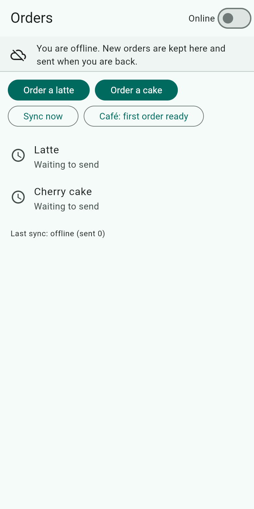
Offline: two orders waiting
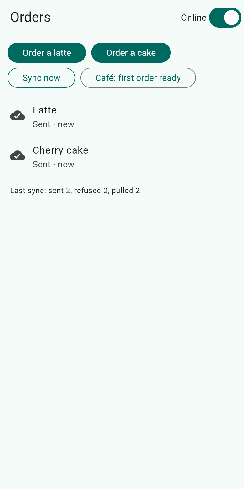
Online again: sent
The café marked one ready
Terminal
$ flutter test test/screen_test.dart
00:00 +0: loading test/screen_test.dart
00:00 +0: offline, the order still appears, marked as waiting
00:01 +1: All tests passed!
6.6What else an offline app needs
Deletes must be synced too. A deleted order becomes a tombstone, a row marked deleted, until the server confirms; otherwise the next pull brings it back.
Size. Decide what to keep and for how long: the last month of orders, not every order since 2019.
Schema changes. The local database outlives app versions, so it needs migrations, as in Book 5.
Privacy. Data on the phone can be read from backups and stolen phones; Chapter 14 covers encryption and what not to store at all.
Common mistakes
Mistake
What happens
Fix
Screens that await the server
Spinners and errors whenever the network is weak
Screens watch the local store
Ids from the server
No id offline; duplicates after retries
Random ids made on the phone, used as idempotency keys
Retrying refusals
Endless failed syncs, drained batteries
Mark them failed and leave the outbox
Pulling everything every time
Slow syncs and wasted data
A cursor: only versions after the last one seen
Last write wins on everything
Silent loss of the person’s changes
An owner for each field
Deleting rows locally
Deleted items come back on the next pull
Tombstones until the server confirms
Summary
The local store is the source of truth; screens watch it and never wait for the network.
Writes go to the store as queued; the outbox holds them until the server confirms.
The sync engine pushes first, then pulls changes after a cursor; it stops quietly offline and tries again later.
Ids are made on the phone and double as idempotency keys; refusals are marked, not retried.
Conflicts are solved by giving every field an owner, and merging field by field.
Quick check answers: 1. Because the local store always answers at once, online or not; the server may be slow or unreachable, and a screen that waits for it is broken whenever the network is. 2. Because the order’s id, made on the phone, travels with every attempt and works as an idempotency key: the server finds it already saved and updates it instead of creating another. 3. Because a refusal will not change by retrying; keeping it in the outbox would fail on every sync forever, so it is marked failed and shown to the person instead.
Practice projects
The projects add what the demo leaves out: a count of waiting changes, syncing without a button, and a store that survives closing the app.
Project 6.1 · Easy
How many are waiting?
A provider that counts the orders waiting to be sent, for a badge on the screen.
You will practise: derived providers from a StreamProvider, and testing them with a container.
Watch ordersProvider and count the orders whose sync state is queued.
Test: go offline, place two orders, expect 2; go online, sync, expect 0, and every order synced.
Hint: stream values travel through the store’s stream and the provider before they reach the count: after writing, give them a moment, await Future.delayed(const Duration(milliseconds: 50)), before reading it. With Duration.zero the test reads too early.
Your result should look like this:
Terminal
$ flutter test test/pending_test.dart
00:00 +0: loading test/pending_test.dart
00:00 +0: the badge counts what is waiting
00:00 +1: All tests passed!
Project 6.2 · Medium
Sync when the network returns
Send what was waiting as soon as the app is online again, without the person tapping anything.
You will practise:ref.listen for side effects, and comparing the previous and new values.
A provider listens to onlineProvider and runs a sync when the value changes from false to true.
Keep the provider alive by listening to it from the app’s root (or the test).
Test: offline, place an order; go online; after a short pause the outbox is empty and the server has the order.
Hint: on a real phone, the online signal comes from a package such as connectivity_plus, and it only says that a network interface exists, not that the server is reachable. Treat it as a hint to try a sync, never as a promise.
Your result should look like this:
Terminal
$ flutter test test/auto_sync_test.dart
00:00 +0: loading test/auto_sync_test.dart
00:00 +0: coming back online sends what was waiting
00:00 +1: All tests passed!
Project 6.3 · Challenge
A store that survives closing the app
Implement LocalStore on SQLite, and run the sync engine against it unchanged.
You will practise: implementing an interface with sqflite, keeping creation order, and making a stream from a database.
Two tables: orders, with a created column so that the outbox keeps its order; and meta for the cursor.
put inserts or replaces, keeping the original created, and then announces the new list on a broadcast stream.
Test the engine on it: offline, two orders in creation order in the outbox; online, sent; a status changed on the server, pulled; cursor 3.
Hint: SQLite does not tell anyone that a table changed, so the store announces its own writes. Packages such as drift do this for you, with queries that are streams.
Your result should look like this:
Terminal
$ flutter test test/sqlite_store_test.dart
00:00 +0: loading test/sqlite_store_test.dart
00:00 +0: (setUpAll)
00:00 +0: the same sync works on SQLite
00:00 +1: (tearDownAll)
00:00 +1: All tests passed!
Exercises
Easy Why does the engine push before it pulls? What could go wrong the other way round?
Easy Add a “Try again” action for failed orders. What should it change on the order, and where?
Medium Add deleting an order that has not been sent yet, and one that has. Why are they different?
Medium The café can now also edit notes (“we have no oat milk”). Which owner rule breaks, and how would you change the merge?
Challenge Two phones of the same person edit the same order’s note offline. Design what happens when both come back, and write the test.
Answers to the exercises are at the end of the book and in the book’s code repository.
Coming up in Chapter 7
Part I gave the app its skeleton: rendering, layers, state, navigation, network and offline data. Part II is about quality, and starts with what people see first: a design system, so that fifty screens look like one app.
7
Chapter 7
Design Systems in Flutter
In this chapter you will learn to
turn design decisions into tokens: one scale for spacing, one for corners, named colours
carry the brand’s own colours in the theme with a ThemeExtension, in light and dark
build components that take every value from the theme, so screens never choose one
prove that every colour pair is readable, with the WCAG contrast ratio
keep raw values out of screens with a test, and change the whole brand by changing the tokens
The first screen of an app is designed carefully. The fiftieth is built on a Friday afternoon, with a padding of 12 because 16 looked too big, a brown that is almost the brand’s brown, and white text on yellow because it looked fine on one monitor. Multiply by a team and two years, and the app looks like many apps. A design system prevents this: decisions are made once, as named values and components, and screens only combine them.
Bit
Every contrast ratio in this chapter was computed by a test from the real colours of the theme, and one of them failed on purpose: the first idea for a tag. Section 7.4 shows the numbers.
7.1Tokens
A token is a design decision with a name: not “16 pixels”, but “the medium space”. Spacing and corners are plain constants:
lib/design/tokens.dart
// Spacing: one scale for every gap in the app.abstractfinalclass Space {
staticconst xs = 4.0;
staticconst s = 8.0;
staticconst m = 16.0;
staticconst l = 24.0;
staticconst xl = 32.0;
}
// Corners: three sizes, nothing in between.abstractfinalclass Radii {
staticconst s = 8.0;
staticconst m = 16.0;
staticconst l = 28.0;
}
Five spaces and three corners sound limiting, and that is the point. When every gap in the app is one of five sizes, screens line up with each other without anyone measuring, and a designer can change “medium” everywhere by changing one number.
7.2The brand in the theme
Material gives every app a ColorScheme, built from one seed colour into a full set of roles: primary, surface, error and the colours written on each. A brand usually needs a few more: an accent for prices, a green for “ready”, an amber for warnings. A ThemeExtension adds them to the theme, so that they follow it into dark mode and through every animation:
lib/design/brand.dart (part)
// The brand's own colours, next to Material's: a ThemeExtension travels with the theme.
@immutable
class Brand extends ThemeExtension<Brand> {
const Brand({
requiredthis.accent,
requiredthis.onAccent,
requiredthis.success,
requiredthis.onSuccess,
requiredthis.warning,
requiredthis.onWarning,
requiredthis.muted,
});
// Every colour comes with the colour of what is written on it.final Color accent;
final Color onAccent;
final Color success;
final Color onSuccess;
final Color warning;
final Color onWarning;
final Color muted;
staticconst light = Brand(
accent: Color(0xFF6D4C41),
onAccent: Color(0xFFFFFFFF),
success: Color(0xFF1B5E20),
onSuccess: Color(0xFFFFFFFF),
warning: Color(0xFFFFB300),
onWarning: Color(0xFF3E2723),
muted: Color(0xFFF3EDE7),
);
staticconst dark = Brand(
Every colour comes with its on colour, the colour of text and icons drawn on it. A component never picks a text colour by itself.
lerp says how to move between two brands. When the person switches to dark mode, MaterialApp animates the theme, and with lerp the brand colours animate with it instead of jumping:
Terminal
$ flutter test test/lerp_test.dart
00:00 +0: loading test/lerp_test.dart
00:00 +0: switching themes animates the brand colours too
t = 0.0 accent #6D4C41 muted #F3EDE7
t = 0.25 accent #88675B muted #C1BBB5
t = 0.5 accent #A28275 muted #8F8984
t = 0.75 accent #BC9D8E muted #5D5652
t = 1.0 accent #D7B8A8 muted #2B2420
00:00 +1: All tests passed!
The theme puts everything together, once:
lib/design/theme.dart (part)
ThemeData buildTheme(
Brightness brightness, {
Brand? brand,
Color seed = const Color(0xFF6D4C41),
}) {
// Material builds a full, accessible scheme from one seed colour.final colors = ColorScheme.fromSeed(seedColor: seed, brightness: brightness);
final shape = RoundedRectangleBorder(
borderRadius: BorderRadius.circular(Radii.m),
);
return ThemeData(
colorScheme: colors,
extensions: [
brand ?? (brightness == Brightness.light ? Brand.light : Brand.dark),
],
// Components take their shapes from the tokens once, here, not in every screen.
filledButtonTheme: FilledButtonThemeData(
style: FilledButton.styleFrom(
shape: shape,
minimumSize: const Size(0, 48),
padding: const EdgeInsets.symmetric(horizontal: Space.l),
),
),
outlinedButtonTheme: OutlinedButtonThemeData(
style: OutlinedButton.styleFrom(
shape: shape,
minimumSize: const Size(0, 48),
),
),
cardTheme: CardThemeData(shape: shape, margin: EdgeInsets.zero),
);
}
7.3Components
Screens should not know how a button looks, only what it means. A small set of components takes every value from the tokens and the theme:
lib/design/components.dart (part)
// A tag says one thing at a glance: its kind chooses the colours.class StatusTag extends StatelessWidget {
const StatusTag({
super.key,
requiredthis.label,
this.kind = TagKind.neutral,
});
finalString label;
final TagKind kind;
@override
Widget build(BuildContext context) {
final brand = context.brand;
final (background, foreground) = switch (kind) {
TagKind.success => (brand.success, brand.onSuccess),
TagKind.warning => (brand.warning, brand.onWarning),
TagKind.neutral => (brand.muted, context.colors.onSurface),
};
return DecoratedBox(
decoration: BoxDecoration(
color: background,
borderRadius: BorderRadius.circular(Radii.s),
),
child: Padding(
padding: const EdgeInsets.symmetric(
horizontal: Space.s,
vertical: Space.xs,
),
child: Text(
label,
style: context.text.labelMedium!.copyWith(color: foreground),
),
),
);
}
}
class AppCard extends StatelessWidget {
const AppCard({super.key, requiredthis.child});
final Widget child;
@override
Widget build(BuildContext context) => Card(
child: Padding(padding: const EdgeInsets.all(Space.m), child: child),
);
}
An extension on BuildContext keeps screens short: context.brand, context.colors, context.text. A catalogue page shows every component in one place, in both themes, so that designers and developers review the same thing:
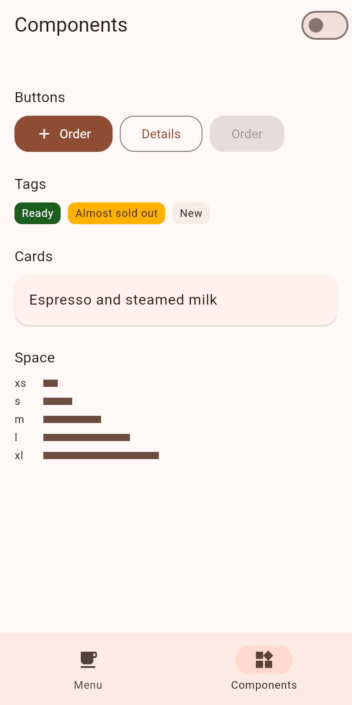
The catalogue, light
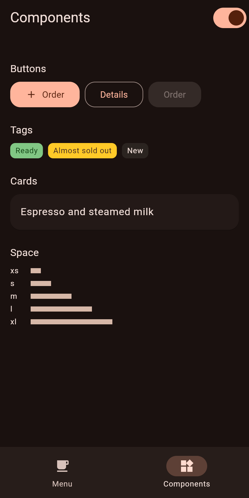
The same components, dark
A real screen then contains no decision of its own, only components, tokens and theme values:
A colour pair is readable when its contrast ratio is high enough. The ratio comes from the relative luminance of the two colours, from 1:1 (the same colour) to 21:1 (black on white); the WCAG guidelines ask for at least 4.5:1 for normal text. Flutter computes the luminance; a test computes every pair of the design system, in both themes:
test/contrast_test.dart (part)
double contrast(Color a, Color b) {
final (hi, lo) = (
max(a.computeLuminance(), b.computeLuminance()),
min(a.computeLuminance(), b.computeLuminance()),
);
return (hi + 0.05) / (lo + 0.05);
}
Terminal
$ flutter test test/contrast_test.dart
00:00 +0: loading test/contrast_test.dart
00:00 +0: every colour pair is readable in both themes
dark
text on surface 14.4 : 1
text on primary 7.7 : 1
text on accent 7.4 : 1
text on success 6.2 : 1
text on warning 9.0 : 1
text on muted 11.8 : 1
price (accent on surface) 10.0 : 1
light
text on surface 16.4 : 1
text on primary 6.5 : 1
text on accent 7.6 : 1
text on success 7.9 : 1
text on warning 7.7 : 1
text on muted 14.8 : 1
price (accent on surface) 7.2 : 1
00:00 +1: All tests passed!
Every pair passes, the lowest at 6.2:1, the green tag in dark mode. Project 7.1 shows this test catching the first idea for the warning tag.
Common mistakes
Mistake
What happens
Fix
Hex colours in screens
Fifty browns, and a dark mode that misses half of them
Theme roles and a ThemeExtension
Spacing chosen per screen
Screens that almost line up
A spacing scale, and Gap
A colour without its on colour
Each screen guesses the text colour, some badly
Pairs of colours, chosen and tested together
No lerp in an extension
Brand colours jump while the rest animates
Implement lerp with Color.lerp
Theme read with someone else’s context
Parts of a screen keep the old theme
Each widget reads the theme in its own build
Trusting the eye for contrast
Unreadable text in sunlight or for many people
A contrast test on every pair
Summary
Tokens name design decisions: a scale for spacing, a few corner sizes, named colours.
ColorScheme.fromSeed gives Material’s roles; a ThemeExtension adds the brand’s own colours, with lerp for animation and light and dark values.
Components take every value from tokens and the theme; screens only combine components.
Every colour pair is tested for a WCAG contrast of at least 4.5:1, in both themes.
A guard test keeps raw values out of screens; a new brand is a new set of tokens.
Quick check answers: 1. So that the colour of text and icons drawn on it is decided, and tested for contrast, once, with the colour itself, instead of guessed by each component. 2. The brand colours would not animate with the rest of the theme: during the switch they would stay light and then jump to dark at the end. 3. At least 4.5:1; the scale goes from 1:1, the same colour twice, to 21:1, black on white.
Practice projects
The projects turn the design system’s promises into tests, then use it to make a second brand.
Project 7.1 · Easy
Catch an unreadable tag
The first idea for “Almost sold out” was white text on amber. Prove with the contrast function that it is unreadable, then choose a better text colour.
You will practise: the contrast formula, failing tests with clear reasons, and choosing colour pairs.
Write a test that computes contrast(white, amber) and expects at least 4.5, with a reason that prints the ratio.
Run it and read the failure.
Try a very dark brown for the text on amber, and add the pair to the main contrast test.
Hint: bright colours (yellow, amber, light green, cyan) need dark text; deep colours need light text. The contrast function settles every argument about it in a second.
Your result should look like this (the first idea, failing):
Terminal
$ flutter test test/contrast_bad_test.dart
00:00 +0: loading test/contrast_bad_test.dart
00:00 +0: a pair that is not readable is caught
00:00 +0 -1: a pair that is not readable is caught [E]
Expected: a value greater than or equal to <4.5>
Actual: <1.7948656834741148>
Which: is not a value greater than or equal to <4.5>
white on amber is 1.8 : 1
Project 7.2 · Medium
No raw values in screens
A test that fails when a screen contains a raw colour, a numeric padding or a font size, and says where.
You will practise: regular expressions over source files, line numbers, and testing a check against a fixture.
For every Dart file under lib/screens, look at each line for Color(0x or Colors., for EdgeInsets…( with a digit, and for fontSize:.
Report each as file:line: what, and expect no reports.
Write a “hurried” screen in a fixture folder, with all three, and check that the same function reports each one.
Hint: this is the same idea as Chapter 2’s architecture test: rules that a team keeps forgetting become tests that never forget. Allow exceptions explicitly (here Colors.transparent), and keep the list short.
Your result should look like this (the screens pass; the fixture is caught):
Terminal
$ flutter test test/guard_test.dart
00:00 +0: loading test/guard_test.dart
00:00 +0: screens use tokens, not raw values
00:00 +1: All tests passed!
Terminal
$ flutter test test/guard_bad_test.dart
00:00 +0: loading test/guard_bad_test.dart
00:00 +0: a screen with raw values is caught
00:00 +0 -1: a screen with raw values is caught [E]
Expected: empty
Actual: [
'test/fixtures/hurried_screen.dart:8: a raw colour',
'test/fixtures/hurried_screen.dart:9: a raw spacing',
'test/fixtures/hurried_screen.dart:12: a raw colour',
'test/fixtures/hurried_screen.dart:12: a raw font size'
]
Project 7.3 · Challenge
A second brand
Bit Bakery opens next door. Give it its own colours, using the same components and screens, and prove that its pairs are readable too.
You will practise: theming by tokens, seed colours, and reusing tests across brands.
Define a second Brand with a raspberry accent and a pale pink for muted surfaces, and a seed colour for Material’s scheme.
Let buildTheme accept a brand and a seed; the menu screen does not change at all.
Run the contrast checks on the bakery’s pairs.
Hint: if any screen needs to change for the second brand, a decision was hiding in that screen. Move it into a token.
Your result should look like this:
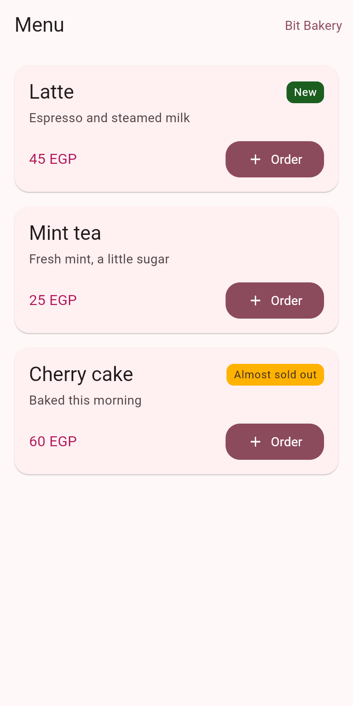
Project 7.3: the same menu, the bakery’s colours.
Terminal
$ flutter test test/brands_test.dart
00:00 +0: loading test/brands_test.dart
00:00 +0: two brands, the same components, both readable
bakery text on accent 7.0 : 1
bakery price on surface 6.6 : 1
bakery text on muted 14.3 : 1
bakery text on primary 6.5 : 1
00:00 +1: All tests passed!
Exercises
Easy Add a Space.xxl of 48. Where in the catalogue does it appear without any change to the catalogue page, and why?
Easy Change the seed colour to a blue. Which parts of the menu change, and which stay brown? Why?
Medium Add a TagKind.info with its own pair in Brand, for light and dark. Which files change, and which tests must grow?
Medium Give the app a text scale setting (large text). Which components break first, and how do the tokens help fix them?
Challenge Make the guard test also forbid TextStyle( in screens, and fix the screens so that they use only the theme’s text styles. When is a copyWith on a theme style acceptable?
Answers to the exercises are at the end of the book and in the book’s code repository.
Coming up in Chapter 8
The app now looks like one app. The next chapter makes it move like one: implicit and explicit animations, hero transitions, and motion that feels native on both Android and iOS, without dropping a frame.
8
Chapter 8
Animations That Feel Native
In this chapter you will learn to
turn motion into tokens: a few durations and a few curves, chosen once
read a curve as numbers, and choose one for things that arrive, leave and move
animate by changing a value, with implicit widgets, and drive a motion yourself with a controller
fly a widget between two pages with a Hero, and stagger a list with one controller
respect people who ask for less motion, and prove it with a test
Motion is how an app explains itself. A card that grows says “something was added here”; a picture that flies from a list to a page says “this is the same drink, closer”. Done well, nobody notices it. Done badly, it is the first thing people notice: a jump, a stutter, a fade that takes too long when you are in a hurry. This chapter treats motion like Chapter 7 treated colour: a few named decisions, components that use them, and tests that check them.
Bit
Every number in this chapter was printed by a test, frame by frame, and the filmstrips are real screenshots taken while the motion ran. To make the browser fast enough to catch them, those apps run ten times slower; section 8.5 shows the one line that does it.
8.1Motion tokens
An animation needs two decisions: how long, and how the speed changes along the way, the curve. Both become tokens:
lib/motion/motion.dart
import'package:material_ui/material_ui.dart';
// Motion tokens: three durations and three curves, like the spacing scale of Chapter 7.abstractfinalclass Motion {
staticconst short = Duration(milliseconds: 150);
staticconst medium = Duration(milliseconds: 300);
staticconst long = Duration(milliseconds: 500);
// Things that arrive slow down at the end; things that leave speed up.staticconst enter = Easing.emphasizedDecelerate;
staticconst exit = Easing.emphasizedAccelerate;
staticconst move = Easing.standard;
}
// People who turn on reduced motion get the result at once.
Duration motion(BuildContext context, Duration duration) =>
MediaQuery.disableAnimationsOf(context) ? Duration.zero : duration;
Three durations are enough for most apps: short for small things (a badge, a switch), medium for a card or a page, long for large movements across the screen.
The curves come from Material 3’s Easing. Things that arrive start fast and settle gently, so they appear at once and land softly; things that leave start slowly and speed away; things that move on screen use the standard curve.
motion(context, duration) returns zero when the person has asked the system for less motion. Every animation in the app asks for its duration through it.
A curve maps the time that has passed, from 0 to 1, to how far the animation has gone. A test prints four of them:
Terminal
$ flutter test test/curves_test.dart
00:00 +0: loading test/curves_test.dart
00:00 +0: the curves, step by step
time 0.00 0.25 0.50 0.75 1.00
linear 0.00 0.25 0.50 0.75 1.00
easeInOut 0.00 0.13 0.50 0.87 1.00
standard 0.00 0.61 0.88 0.98 1.00
emphasizedDecelerate 0.00 0.83 0.95 0.99 1.00
00:00 +1: All tests passed!
A quarter of the way through the time, linear has done a quarter of the movement and easeInOut only 13%; Material’s emphasizedDecelerate has done 83%. That is why arrivals with it feel quick even at 300 ms: almost everything happens in the first quarter, and the rest is the landing. A linear animation feels mechanical for the opposite reason: nothing in the real world starts and stops at full speed.
8.2Implicit animations
The easiest animation in Flutter is not to write one. Widgets whose names start with Animated watch their own values; when a rebuild gives them a new value, they move to it by themselves. The order card grows, changes colour and rounds its corners when the first latte is added, and the total fades in:
lib/order_card.dart (part)
AnimatedContainer(
key: const ValueKey('card'),
duration: motion(context, Motion.medium),
curve: Motion.move,
height: full ? 180 : 96,
padding: const EdgeInsets.all(16),
decoration: BoxDecoration(
color: full
? colors.primaryContainer
: colors.surfaceContainerHighest,
borderRadius: BorderRadius.circular(full ? 28 : 12),
),
clipBehavior: Clip.hardEdge,
child: Stack(
children: [
Row(
children: [
Expanded(
child: Text(
'Your order',
style: Theme.of(context).textTheme.titleLarge,
),
),
// A new key is a new child: the old number leaves while the new one arrives.
AnimatedSwitcher(
duration: motion(context, Motion.medium),
transitionBuilder: (child, animation) =>
ScaleTransition(scale: animation, child: child),
child: CircleAvatar(
key: ValueKey(count),
child: Text('$count'),
),
),
],
),
Positioned(
bottom: 0,
child: AnimatedOpacity(
opacity: full ? 1 : 0,
duration: motion(context, Motion.medium),
curve: Motion.enter,
child: Text(
'${count * 45} EGP',
style: Theme.of(context).textTheme.headlineMedium,
),
),
),
],
),
),
const SizedBox(height: 16),
The screen only calls setState(() => count++). A test taps the button and prints the total’s opacity and the card’s height every 50 ms:
Terminal
$ flutter test test/implicit_test.dart
00:00 +0: loading test/implicit_test.dart
00:00 +0: AnimatedOpacity, frame by frame
0 ms opacity 0.00 height 96
50 ms opacity 0.74 height 130
100 ms opacity 0.89 height 157
150 ms opacity 0.95 height 170
200 ms opacity 0.98 height 176
250 ms opacity 1.00 height 179
300 ms opacity 1.00 height 180
00:00 +1: All tests passed!
The two columns follow their curves: after 50 ms the total is already at 74% opacity (an arrival, with Motion.enter), while the height has done 40% of its way (Motion.move). And here is the same moment in the browser, slowed down:
shots/card-film.png560px
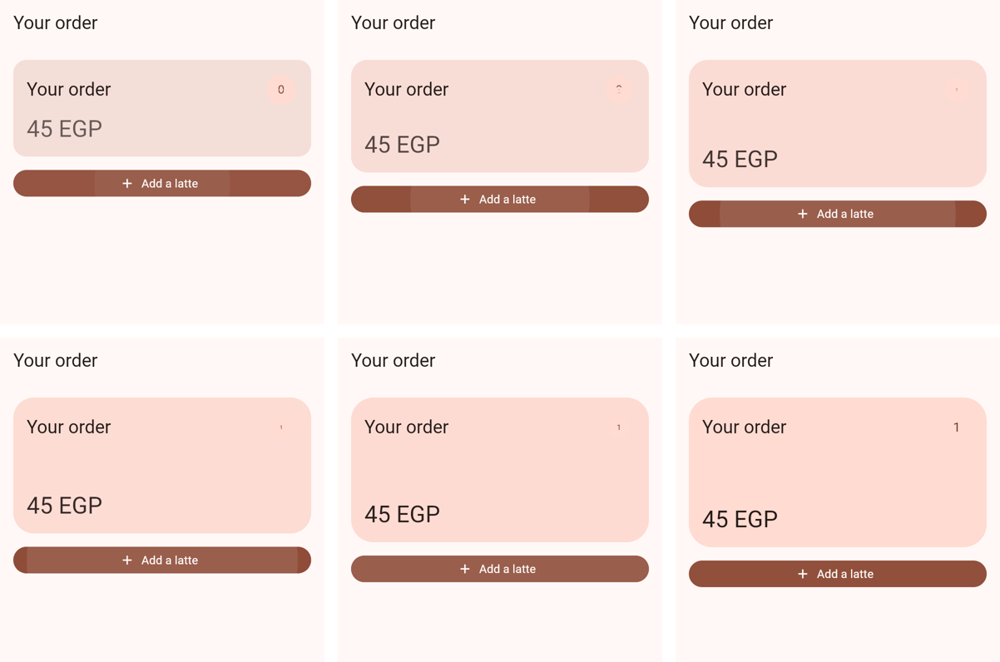
The card, six moments after the tap, left to right and then the second row: it grows and rounds, the total fades in, and the old badge shrinks while the new one grows.
The badge uses AnimatedSwitcher, which animates between two different children. It knows they are different by their keys: ValueKey(count) makes the badge for 1 a new widget, not the badge for 0 with new text. Without the key, Flutter would update the text in place, and nothing would move. Project 8.1 proves that both numbers are on screen while they cross.
8.3Explicit animations
Implicit widgets animate from one value to another. Some motion has no end value: a ring that turns while the coffee is brewing, a pulse on a live order. For those you hold the clock yourself, an AnimationController:
lib/brewing.dart (part)
class _BrewingPageState extends State<BrewingPage>
with SingleTickerProviderStateMixin {
latefinal turns = AnimationController(
vsync: this,
duration: const Duration(seconds: 2),
)..repeat();
@override
void dispose() {
turns.dispose();
super.dispose();
}
@override
Widget build(BuildContext context) {
final color = Theme.of(context).colorScheme.primary;
return Scaffold(
appBar: AppBar(title: const Text('Brewing your latte')),
body: Center(
child: AnimatedBuilder(
animation: turns,
// The cup is built once and passed in; only the ring is rebuilt on each frame.
child: const Cup(),
builder: (context, child) => CustomPaint(
painter: Ring(turns.value, color),
child: SizedBox.square(dimension: 180, child: Center(child: child)),
),
),
),
);
}
}
A controller needs a vsync, a ticker that calls it once per frame. SingleTickerProviderStateMixin gives the state one, and stops it when the page is not visible, so a hidden ring costs nothing.
..repeat() runs it from 0 to 1 every two seconds, for ever, and dispose stops it. Forgetting dispose leaves a ticker running after the page has closed; in debug builds Flutter stops with an error that names the state with the active ticker.
AnimatedBuilder rebuilds its builder on every frame. Anything that does not move goes in child: it is built once and handed to the builder each time.
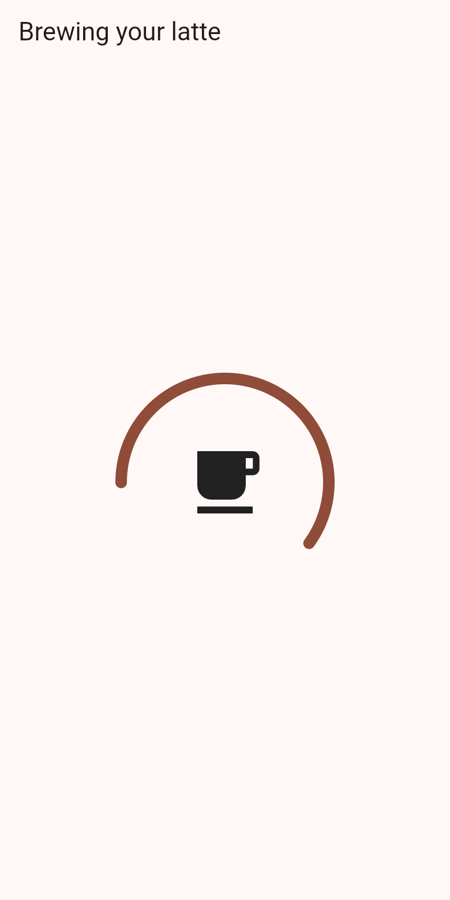
The ring turns; the cup is built once.
The cup counts its own builds, and a test runs 60 frames:
Terminal
$ flutter test test/child_test.dart
00:00 +0: loading test/child_test.dart
00:00 +0: the child of an AnimatedBuilder is built once
60 frames of the ring, the cup was built 1 time
00:00 +1: All tests passed!
One build for 60 frames. Had the cup been written inside the builder, it would have been built 61 times: harmless for one icon, expensive for a card full of text and pictures. Chapter 9 measures what that costs.
8.4Heroes
When a person opens a drink, its picture should travel from the list to the page, so the eye follows it. Flutter calls this a Hero: give the same tag to a widget on each page, and during the navigation Flutter lifts it out of the first page and flies it to its place on the second.
Hero(
tag: id,
child: CircleAvatar(
radius: 100,
backgroundColor: color,
child: const Icon(
Icons.local_cafe,
color: Colors.white,
size: 96,
),
),
),
Text(
'Espresso and steamed milk, in a big cup.',
textAlign: TextAlign.center,
shots/hero-film.png560px
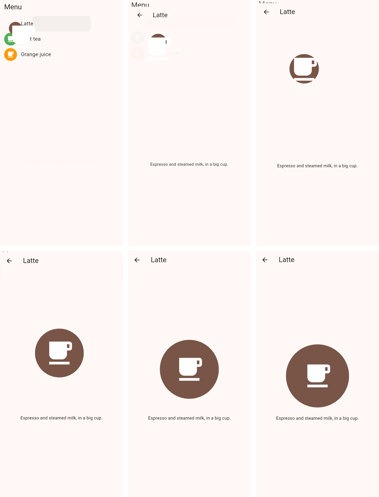
Tapping “Latte”: the brown circle flies from the list and grows into the page, while the pages change around it.
Nothing else was needed: no controller, no positions. Two rules keep heroes working. A tag must be unique on a page (two heroes with the tag latte on one list is an error), so tags come from ids, not names. And the two widgets should look alike at both ends, because Flutter flies the destination’s widget, resized; a circle that becomes a square mid-flight looks like a glitch.
8.5Slowing time
The filmstrips in this chapter were taken from versions of the apps that start with one extra line:
lib/hero_menu_slow.dart
import'package:flutter/scheduler.dart';
import'hero_menu.dart'as app;
// Slowed down for the book's filmstrips: every animation takes ten times longer.void main() {
timeDilation = 10;
app.main();
}
timeDilation stretches every animation in the app. It is for people, not for the app: set it to 5 or 10 while you work on a transition, and you see what happens in each frame instead of a blur. It is also how a design review should look at motion. Never ship it.
8.6Less motion
For some people, movement on screen causes dizziness or nausea; others simply prefer a calmer phone. Both Android (“Remove animations”) and iOS (“Reduce Motion”) have a setting, and Flutter reports it as MediaQuery.disableAnimationsOf(context). Because every animation here takes its duration from motion(), one test checks the whole card:
$ flutter test test/reduce_test.dart
00:00 +0: loading test/reduce_test.dart
00:00 +0: with reduced motion, the change is immediate
one frame after the tap: height 180
00:00 +1: All tests passed!
One frame after the tap, the card is already at its final height. Less motion does not mean no feedback: the card still grows and the total still appears, just without the journey. Animations that carry meaning (a progress ring, a loading indicator) should keep moving; decoration should stop.
Common mistakes
Mistake
What happens
Fix
Durations and curves chosen per screen
An app where every part moves at its own speed
Motion tokens
Linear curves
Motion that feels mechanical
Material’s easing curves, by role
No key in AnimatedSwitcher
The text changes in place; nothing animates
A key from the value
A controller without dispose
A ticker that runs after the page closes
dispose() in the state
Static widgets inside the builder
Rebuilt on every frame
Pass them as child
Ignoring reduced motion
Some people cannot use the app comfortably
Every duration through motion(), and a test
Summary
Motion has tokens too: a few durations and three curves, for arriving, leaving and moving.
A curve maps time to progress; arrivals do most of their movement early and land softly.
Implicit Animated… widgets move to new values by themselves; AnimatedSwitcher needs a key to see a new child.
An AnimationController drives motion that has no end value; static parts go in AnimatedBuilder’s child.
A Hero flies a widget between pages by its tag; timeDilation slows everything down for review.
Every duration passes through motion(), so reduced motion is one test.
Quick check answers: 1. So that what arrives is visible at once and then settles gently: most of the movement happens in the first quarter of the time (83% with emphasizedDecelerate), which feels quick, and the slow end feels like a landing rather than a stop. 2. It tells AnimatedSwitcher that the child is a new widget; without it, the old child would be updated in place and there would be nothing to animate between. 3. Every part of the picture that does not change from frame to frame; it is built once and passed to the builder on each frame.
Practice projects
The projects test what the eye can miss, then use one controller for a whole list and one theme for every page.
Project 8.1 · Easy
Both numbers at once
Prove with a test that, halfway through the badge’s animation, the old number and the new one are both on screen, and that only the new one remains at the end.
You will practise:pump with a duration, pumpAndSettle, and finders that count.
Pump the order page, tap the button, and pump one frame to start the animation.
Pump 150 ms, half of Motion.medium, and expect one “0” and one “1”.
Call pumpAndSettle and expect that “0” is gone.
Hint: remove the key from the badge and run the test again: it fails at the halfway point, because there is only one badge.
Your result should look like this:
Terminal
$ flutter test test/badge_test.dart
00:00 +0: loading test/badge_test.dart
00:00 +0: both numbers are on screen while they cross
halfway: "0" 1, "1" 1
00:00 +1: All tests passed!
Project 8.2 · Medium
A staggered menu
The items of the menu arrive one after the other, sliding up and fading in, all driven by one controller, with a button to play it again.
You will practise:Interval, CurvedAnimation, FadeTransition and SlideTransition.
Give the page one controller of 800 ms, started when the page appears, with its duration from motion().
Give item i the slice Interval(i × 0.15, 0.4 + i × 0.15) of the controller, with Motion.enter.
Add a “Play again” button that calls controller.forward(from: 0), and a test that prints each item’s opacity every 200 ms.
lib/stagger.dart (part)
for (final (i, name) in items.indexed)
Builder(
builder: (context) {
// Each item starts a little later: Interval gives each one its slice of the same controller.final slice = CurvedAnimation(
parent: controller,
curve: Interval(
i * 0.15,
0.4 + i * 0.15,
curve: Motion.enter,
),
);
return FadeTransition(
opacity: slice,
child: SlideTransition(
position: Tween(
begin: const Offset(0, 0.6),
end: Offset.zero,
).animate(slice),
child: Card(
margin: const EdgeInsets.fromLTRB(16, 8, 16, 0),
child: ListTile(title: Text(name)),
Hint: the CurvedAnimations are made in build, which is fine here because the page builds once and the transitions listen to the controller themselves. If the page rebuilt often, they would belong in the state, made once and disposed.
Your result should look like this:
shots/stagger-film.png560px
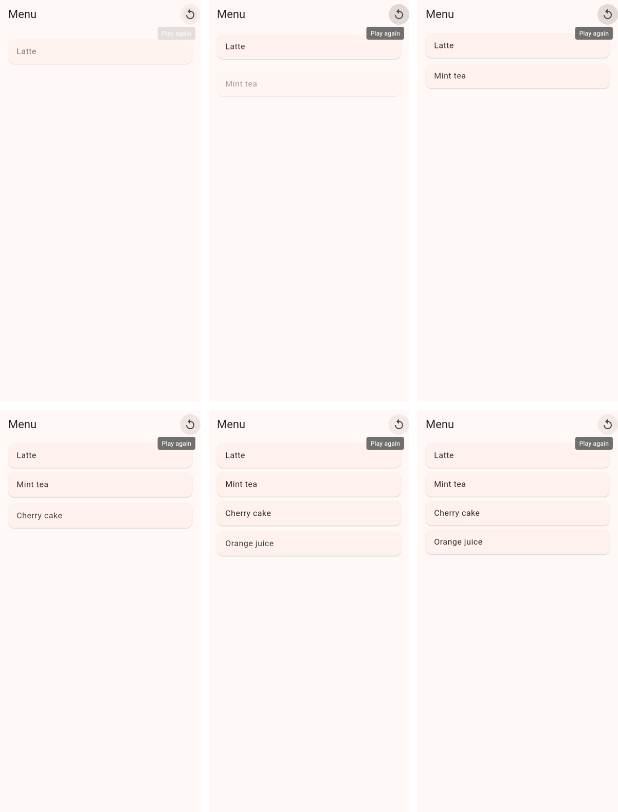
Project 8.2: after “Play again”, the four items arrive one after the other.
Terminal
$ flutter test test/stagger_test.dart
00:00 +0: loading test/stagger_test.dart
00:00 +0: each item arrives a little after the one before
0 ms 0.00 0.00 0.00 0.00
200 ms 0.98 0.83 0.00 0.00
400 ms 1.00 1.00 0.95 0.68
600 ms 1.00 1.00 1.00 0.99
800 ms 1.00 1.00 1.00 1.00
00:00 +1: All tests passed!
Project 8.3 · Challenge
One transition for every page
Replace the platform’s page transition with the app’s own, a short fade and slide, on Android and iOS, in the theme; with reduced motion, pages appear at once.
You will practise:PageTransitionsBuilder, PageTransitionsTheme, and testing a navigation halfway through.
Write a PageTransitionsBuilder that returns the child unchanged when motion is reduced, and otherwise a FadeTransition around a SlideTransition, with the motion tokens’ curves for arriving and leaving.
Put it in the theme’s pageTransitionsTheme for both platforms.
Test a push halfway through, once normally and once with reduced motion, and print the opacity of the new page.
Hint: pump the two cases as two different apps (a different key on MaterialApp); otherwise the second case starts with the pages of the first still on the stack.
Your result should look like this:
Terminal
$ flutter test test/transition_test.dart
00:00 +0: loading test/transition_test.dart
00:00 +0: the page transition fades and slides, unless motion is reduced
halfway through the push: normal 0.95, reduced motion: no fade at all
00:00 +1: All tests passed!
Exercises
Easy Change the card’s curve from Motion.move to Curves.linear, run the implicit test again, and compare the heights at 50 ms.
Easy Make the badge slide up instead of growing. Which single line changes?
Medium When the order is ready, the brewing ring should finish the turn it is making and stop, instead of freezing wherever it is. Which methods of the controller do you use?
Medium Give the heroes a flightShuttleBuilder that keeps the circle round during the flight, whatever the two ends look like. When is that needed?
Challenge Write a test that fails if any file under lib/ creates a Duration with milliseconds: outside lib/motion/. What does it protect, and what should it allow?
Answers to the exercises are at the end of the book and in the book’s code repository.
Coming up in Chapter 9
Smooth motion needs every frame on time: 16 milliseconds at 60 Hz, 8 at 120. The next chapter measures frames, finds the work that makes them late, and fixes it: rebuilds, layouts, images and lists, with DevTools and with tests.
9
Chapter 9
Performance: Jank, Memory and Startup
In this chapter you will learn to
think in frames: 16 milliseconds at 60 Hz, 8 at 120, and what happens when a frame is late
rebuild only what changed, and prove it by counting rebuilds in a test
decode images at the size they are shown, and measure the memory you save
start an app faster by running independent work together and showing something at once
keep heavy work off the main isolate, and keep repaints in their own layer
People rarely say an app is slow. They say it “feels cheap”, “stutters”, “heats my phone”, “takes forever to open”. Each of those has a cause that can be measured: a frame that took too long, a picture that filled the memory, a startup that waited for things one by one. This chapter measures each cause with a test that prints numbers, fixes it, and measures again.
Bit
The tests in this chapter count things: rebuilds, paints, bytes, frames. Counts are the same on every machine, so they make good tests. Milliseconds depend on the phone: section 9.5 shows how to measure those on a real device, where they mean something.
9.1The frame budget
A screen at 60 Hz shows a new picture every 16.7 milliseconds; at 120 Hz, every 8.3. For each picture, Flutter does its work in two places. On the UI thread, the main isolate where your Dart code runs, it builds widgets, lays them out and records what to paint. On the raster thread, the engine turns those records into pixels on the GPU. If either side misses the deadline, the screen shows the previous picture again, and the eye sees a stutter: jank.
Three rules follow from this:
Do less per frame. Every widget rebuilt, every row built, every layer painted costs time in the frame that needs it.
Do heavy work elsewhere. While your Dart code parses a large JSON on the UI thread, no frame can be built at all.
Measure in profile mode. Debug builds are many times slower than release builds, on purpose, to support hot reload and assertions. Never judge speed in debug; use flutter run --profile on a real phone.
9.2Rebuild less
The order page has thirty drinks and a badge with the number of items. The first version keeps the number in the page’s state:
It looks harmless. But setState rebuilds the whole build method, and the rows are new objects each time, so each one is built again. Each row counts its builds, and a test taps the button once:
$ flutter test test/rebuilds_test.dart
00:00 +0: loading test/rebuilds_test.dart
00:00 +0: one tap, how many rows are rebuilt
rows rebuilt by one tap: slow page 30, fast page 0
00:01 +1: All tests passed!
Thirty rows rebuilt to change one number. The fast version makes two changes:
class DrinkColumn extends StatelessWidget {
const DrinkColumn({super.key});
@override
Widget build(BuildContext context) => SingleChildScrollView(
child: Column(children: [for (var n = 1; n <= 30; n++) DrinkRow(n: n)]),
);
}
The count is a ValueNotifier, and only a ValueListenableBuilder around the badge listens to it. The page itself never rebuilds. (A Riverpod provider watched only by the badge, as in Chapter 3, does the same.)
The rows live in their own widget, created with const. A const widget is the same object every time, and Flutter skips rebuilding a widget that has not changed.
Zero rows rebuilt. Thirty rows are nothing for a phone; but the same mistake at the top of a large screen, with images, charts and text, is how apps start to stutter. The habit is cheap: keep state as low in the tree as the widgets that use it, and make what does not depend on it const.
9.3Images and memory
A phone camera takes photos of 4032 by 3024 pixels. The menu shows them at 56 by 56. The file is small because JPEG compresses well, but to draw it, Flutter must decode it into raw pixels, four bytes each, and those bytes stay in memory while the image is cached. A test decodes the menu’s photo both ways:
$ flutter test test/image_test.dart
00:00 +0: loading test/image_test.dart
00:00 +0: the memory of a decoded photo
file on disk: 0.32 MB
decoded, full size: 4032 x 3024, 46.51 MB
decoded, cacheWidth 168: 168 x 126, 0.08 MB
00:00 +1: All tests passed!
A file of a third of a megabyte becomes 46.5 MB of memory when decoded at full size: more than many phones will give an app for all its images. Decoded at the size it is shown, it takes 0.08 MB, almost six hundred times less. In a widget, cacheWidth does this, computed from the size on screen and the phone’s pixel density:
lib/menu.dart (part)
final width = (56 * MediaQuery.devicePixelRatioOf(context)).round();
return Scaffold(
appBar: AppBar(title: const Text('Menu')),
// Only the rows on screen, and a few around them, are ever built.
body: ListView.builder(
itemCount: 1000,
itemExtent: 72,
itemBuilder: (context, i) => ListTile(
leading: ClipRRect(
borderRadius: BorderRadius.circular(12),
// Decode the photo at the size it is shown, not at the size it was taken.
child: Image.asset(
'assets/photos/latte.jpg',
width: 56,
height: 56,
fit: BoxFit.cover,
cacheWidth: width,
),
),
title: Text('Drink ${i + 1}'),
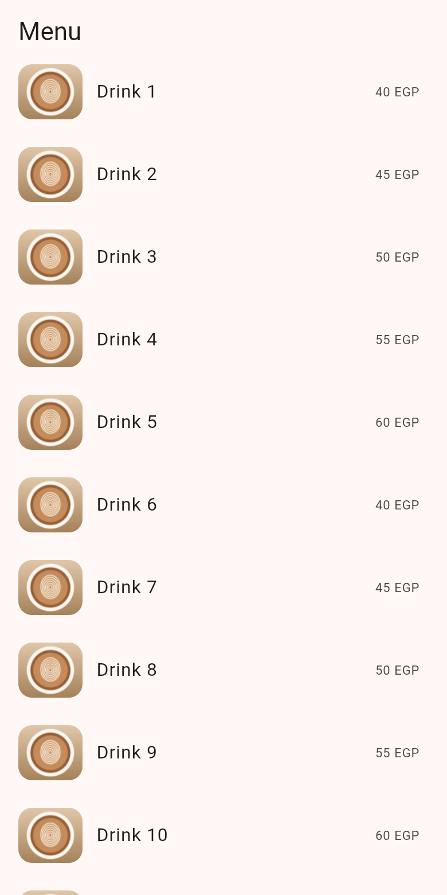
A thousand drinks, each photo decoded at 168 pixels wide
On this phone the density is 3, so 56 logical pixels are 168 real ones: the picture is as sharp as it can be on that screen, and no sharper. Too much memory does not show up as jank at first; it shows up as the app being killed in the background, or the phone getting hot and slow after a few minutes of scrolling.
9.4Starting fast
An app is judged in its first second. A common main reads the settings, then opens the database, then fetches the menu, then shows something. The three steps here are stand-ins that wait as long as the real ones might:
lib/startup.dart (part)
Future<void> startOneByOne() async {
await readSettings();
await openDatabase();
await fetchMenu();
}
// The three steps do not depend on each other: start them together.Future<void> startTogether() =>
Future.wait([readSettings(), openDatabase(), fetchMenu()]).then((_) {});
// Show something at once; load the rest behind it.void main() {
final ready = startTogether();
runApp(
MaterialApp(
debugShowCheckedModeBanner: false,
theme: ThemeData(colorSchemeSeed: Colors.brown),
home: FutureBuilder(
future: ready,
builder: (context, snapshot) =>
snapshot.connectionState == ConnectionState.done
? const MenuPage()
: const Splash(),
),
),
);
}
Terminal
$ flutter test test/startup_test.dart
00:00 +0: loading test/startup_test.dart
00:00 +0: three steps, one after the other or together
one by one: 906 ms
together: 407 ms
00:01 +1: All tests passed!
One by one, the waits add up: 300 + 200 + 400, about 900 ms. The steps do not need each other, so Future.wait starts them together, and the app is ready when the slowest is: about 400 ms. And runApp is not kept waiting at all: a splash screen (or, better, the menu from the last visit, as in Chapter 6) appears on the first frame, and the real screen replaces it when the work is done.
9.5Measuring on a real phone
Counts tell you that a change does less work. How long that work takes depends on the phone, so the milliseconds must be measured on one, ideally a mid-range Android phone a few years old, because that is the phone many of your users have:
flutter run --profile builds the app almost like a release, but keeps the hooks that tools need. Open DevTools from the link it prints.
The Performance page draws every frame as two bars, UI and raster, against the frame budget. Slow frames are red; selecting one shows which builds, layouts and paints filled it. Turn on “Track widget builds” to see the rebuilds of section 9.2 by name.
The Memory page shows the app’s memory over time; scrolling the menu with full-size photos makes the line climb in steps of tens of megabytes.
flutter run --profile --trace-startup writes the time to the first frame into build/start_up_info.json.
showPerformanceOverlay: true on MaterialApp draws the two frame graphs on the phone’s screen itself, which is useful when testing in someone else’s hands.
Common mistakes
Mistake
What happens
Fix
Judging speed in debug mode
Fixing problems that do not exist, missing real ones
flutter run --profile on a real phone
setState at the top of a big screen
Everything rebuilt for one small change
State as low as its users; const for the rest
Full-size images in thumbnails
Tens of megabytes per photo; the app is killed in the background
cacheWidth times the pixel density
Startup steps awaited one by one
A first second spent waiting
Future.wait, and a first frame at once
Parsing large data on the UI thread
Frozen screen while it runs
Isolate.run (Project 9.2)
An animation sharing a layer with a heavy painting
The painting is repainted every frame
RepaintBoundary (Project 9.3)
Summary
Each frame has 16 ms at 60 Hz, 8 at 120; work on the UI thread or the raster thread that misses it is jank.
Keep state low and the rest const: a tap that rebuilt 30 rows rebuilds none.
Decode images at their size on screen: 46.5 MB becomes 0.08 MB.
Run independent startup work together and show a first frame at once: 900 ms becomes 400.
Count work in tests; measure time in profile mode on a real phone, with DevTools.
Quick check answers: 1. setState runs the page’s whole build, which creates new row widgets, and Flutter rebuilds every widget that is a new object. A const widget is created once by the compiler and is the same object every time, so Flutter sees that it has not changed and skips it. 2. 4032 × 3024 × 4 bytes, about 46.5 MB, because a decoded image keeps four bytes (red, green, blue, alpha) for every pixel, whatever the size of the compressed file. 3. When none of them needs the result of another; a step that needs another’s result must wait for it, though it can still run alongside the steps that do not.
Practice projects
The projects measure three more causes of jank: long lists, heavy work on the UI thread, and repaints that spread.
Project 9.1 · Easy
What a long list really costs
A list of 1000 drinks, written two ways. Count the rows that are created and the rows that are built in each, then scroll and count again.
You will practise:ListView and ListView.builder, counters in tests, and tester.drag.
Count creations with a function that makes each row, and builds with the counter inside DrinkRow.
Pump ListView(children: [...]) and ListView.builder with 1000 rows each and print both counts.
Drag the builder list 3000 pixels and print how many rows are alive and how many were created in all.
$ flutter test test/list_test.dart
00:00 +0: loading test/list_test.dart
00:00 +0: a list of 1000 drinks, how many rows are built
ListView(children:) 1000 rows created, 16 built
ListView.builder 16 rows created, 16 built
after scrolling 3000 pixels: 12 rows alive, 69 created in all
00:01 +1: All tests passed!
Hint: the result surprised the author: both lists build only the 16 rows near the screen, because ListView is lazy either way. The difference is the 1000 widgets that ListView(children:)creates before showing anything, and keeps; with data from a server, that also means 1000 rows of work up front. After scrolling, the builder has created 69 rows in all and keeps only 12 alive.
Project 9.2 · Medium
Parse off the main isolate
The day’s orders arrive as 15 MB of JSON. Total them on the main isolate and with Isolate.run, and count how many frames could be drawn while the work ran.
You will practise:Isolate.run, periodic timers as a frame clock, and records.
Generate 200,000 orders as JSON, and write total(json), which decodes them and adds up the prices.
Start a timer that ticks every 16 ms, as frames would, and count the ticks while the work runs.
Run total directly, then inside Isolate.run, and compare the time, the frames due and the frames drawn.
test/isolate_test.dart (part)
// A frame is due every 16 ms: count how many times the main isolate was free to draw one.Future<(int, int, int)> whileWorking(FutureOr<int> Function() work) async {
var frames = 0;
final ticker = Timer.periodic(
const Duration(milliseconds: 16),
(_) => frames++,
);
final watch = Stopwatch()..start();
final result = await work();
final ms = watch.elapsedMilliseconds;
ticker.cancel();
return (result, ms, frames);
}
Your result should look like this (the milliseconds change a little on each run):
Terminal
$ flutter test test/isolate_test.dart
00:00 +0: loading test/isolate_test.dart
00:00 +0: frames lost while parsing a big JSON
JSON: 15.0 MB, 200000 orders
on the main isolate: 409 ms, 25 frames due, 0 drawn
with Isolate.run: 350 ms, 21 frames due, 20 drawn
00:01 +1: All tests passed!
Hint: on the main isolate not a single tick fires: for 400 ms the app could not have drawn anything, animated anything or answered a tap. With Isolate.run, the work takes about as long, but nearly every frame is drawn; the one or two missing are the moments the main isolate spends starting the isolate and receiving its answer. Send the isolate the raw text and get back the small result (here a total); sending large objects between isolates costs copying time of its own.
Project 9.3 · Challenge
Keep a chart out of the spinner’s frames
A dashboard shows a progress bar that animates and, under it, a sales chart that never changes. Prove that the chart is painted in every frame of the animation, then stop it with a RepaintBoundary.
You will practise:CustomPainter, layers and RepaintBoundary, and counting paints.
Make the chart a CustomPainter that counts its paint calls, with shouldRepaint returning false.
Pump the dashboard and 60 frames of 16 ms, with and without a RepaintBoundary around the chart, and print the paints.
Expect no paints at all with the boundary, once the first frame is done.
lib/repaint.dart (part)
final chart = CustomPaint(
size: const Size(300, 160),
painter: SalesChart(),
);
return Scaffold(
body: Column(
children: [
const LinearProgressIndicator(),
// The spinner repaints sixty times a second; the boundary keeps the chart out of it.if (boundary) RepaintBoundary(child: chart) else chart,
Your result should look like this:
Terminal
$ flutter test test/repaint_test.dart
00:00 +0: loading test/repaint_test.dart
00:00 +0: sixty frames of a spinner, how many times the chart is painted
chart painted in 60 frames: without a boundary 60, with one 0
00:00 +1: All tests passed!
Hint:shouldRepaint: false is not enough, and that is the lesson. It only answers “has the painter changed?”; when the layer the chart shares with the progress bar is repainted, every painting in it is painted again. A RepaintBoundary gives the chart its own layer, which the engine reuses as long as the chart does not change.
Exercises
Easy Why can’t the slow page be fixed by writing const DrinkRow(n: n) inside its loop?
Easy On a phone with a pixel density of 2, what cacheWidth does the menu use, and how many bytes does each decoded thumbnail take?
Medium The menu shows the same photo a thousand times. How many times is it decoded while you scroll, and why?
Medium Fetching the menu now needs the language from the settings. Rewrite startTogether so that it still runs as much as possible in parallel. How long does it take?
Challenge Write a “rebuild budget” test for the fast order page: it fails if one tap rebuilds any row, and prints which widget type was rebuilt most. Why is a test like this more useful in CI than a test that measures milliseconds?
Answers to the exercises are at the end of the book and in the book’s code repository.
Coming up in Chapter 10
Every chapter so far has proved its claims with tests. The next one is about the tests themselves: unit, widget and integration tests, golden images, fakes and mocks, and a test suite that a team trusts enough to ship on a green build.
10
Chapter 10
Testing: Unit, Widget, Golden and Integration
In this chapter you will learn to
choose the right kind of test: unit, widget, golden or integration, and how many of each
make code testable by passing in what it depends on: a repository, an HTTP client, a clock
replace the network with fakes that behave like the real thing, under the test’s control
protect the look of a widget with golden images, and read a golden failure
run the real app end to end with integration_test, and measure coverage
Every chapter of this book has proved its claims with tests. This one is about the tests themselves: which kinds exist, what each one is good at, and how to write code that is easy to test in the first place. The app is small, a menu that may fail to load and an order with a happy hour, but it has the parts of every real app: logic, a server, a screen, and a look that should not change by accident.
Bit
The integration test in this chapter found a real bug on its first run, one that the screenshots of the same app did not show. Section 10.6 tells the story.
10.1Four kinds of test
Kind
What it runs
Speed
Good for
Unit
A function or a class, in plain Dart
Milliseconds
Rules: prices, dates, parsing
Widget
Widgets in a test environment, without a device
Tens of milliseconds
Screens: states, taps, text
Golden
A widget, compared pixel by pixel with an approved image
Tens of milliseconds
The look of components
Integration
The real app, built and launched on a device
Seconds to minutes
Whole journeys, platform code
A healthy suite is shaped like a pyramid: many unit tests, a good number of widget tests, a few goldens for the components that matter, and a handful of integration tests for the journeys that pay the bills. Each kind catches what the cheaper ones cannot, and costs more to run and to keep.
10.2Unit tests
The rules of the café are plain Dart, with no Flutter in sight:
lib/domain/pricing.dart
class Line {
const Line(this.name, this.price, this.quantity);
finalString name;
finalint price;
finalint quantity;
}
// Happy hour: 20% off between 15:00 and 17:00 (17:00 itself is not included).bool isHappyHour(DateTime time) => time.hour >= 15 && time.hour < 17;
int total(List<Line> lines, DateTime at) {
final subtotal = lines.fold(
0,
(sum, line) => sum + line.price * line.quantity,
);
return isHappyHour(at) ? subtotal - subtotal * 20 ~/ 100 : subtotal;
}
Note what total takes: the time. It does not call DateTime.now() itself, so a test can ask about 10:00 and 15:30 on any day, at any hour the tests happen to run:
test/pricing_test.dart
void main() {
final morning = DateTime(2026, 11, 23, 10);
final afternoon = DateTime(2026, 11, 23, 15, 30);
const order = [Line('latte', 45, 2), Line('cake', 55, 1)];
test('the total of an order', () {
expect(total(order, morning), 145);
});
test('happy hour takes 20% off', () {
expect(total(order, afternoon), 116);
});
test('an empty order costs nothing', () {
expect(total(const [], afternoon), 0);
});
}
Terminal
$ flutter test test/pricing_test.dart
00:00 +0: loading test/pricing_test.dart
00:00 +0: the total of an order
00:00 +1: happy hour takes 20% off
00:00 +2: an empty order costs nothing
00:00 +3: All tests passed!
This is the whole secret of testable code: pass in what you depend on. A function that reads the clock, the network or a file by itself can only be tested by controlling the clock, the network or the file. A function that is given them can be tested with anything.
10.3Fakes at the edge
The screen needs a menu. It should not care where the menu comes from, so it depends on a small interface, and the real implementation talks HTTP:
lib/data/menu.dart (part)
abstractinterfaceclass MenuRepository {
Future<List<Drink>> menu();
}
class MenuApi implements MenuRepository {
MenuApi(this.client, {this.base = 'https://api.bitcafe.online'});
final http.Client client;
finalStringbase;
@override
Future<List<Drink>> menu() async {
final response = await client.get(Uri.parse('$base/menu'));
// Anything but 200 is a failure the screen can show.if (response.statusCode != 200) {
throw MenuException('status ${response.statusCode}');
}
final items = jsonDecode(response.body) asList<dynamic>;
return [
for (final item in items) Drink.fromJson(item asMap<String, dynamic>),
];
}
}
The API class is tested with a fake HTTP client. package:http ships one, MockClient: it receives each request, so the test can check it, and returns whatever response the test chooses:
test/menu_api_test.dart
void main() {
test('reads the menu from the server', () async {
// A fake HTTP client from package:http: it answers like a server, and checks the request.final client = MockClient((request) async {
expect(request.url.toString(), 'https://api.bitcafe.online/menu');
return http.Response(
jsonEncode([
{'id': 'latte', 'name': 'Latte', 'price': 45},
]),
200,
);
});
final menu = await MenuApi(client).menu();
expect(menu.single.name, 'Latte');
expect(menu.single.price, 45);
});
test('a server error becomes a MenuException', () async {
final client = MockClient((request) async => http.Response('oops', 500));
expect(
MenuApi(client).menu(),
throwsA(
isA<MenuException>().having((e) => e.reason, 'reason', 'status 500'),
),
);
});
}
Terminal
$ flutter test test/menu_api_test.dart
00:00 +0: loading test/menu_api_test.dart
00:00 +0: reads the menu from the server
00:00 +1: a server error becomes a MenuException
00:00 +2: All tests passed!
Two words are often mixed up. A fake is a working implementation that takes a shortcut: an in-memory repository, a client that answers from a function. A mock is an object that records calls so the test can verify them, usually made with a package such as mocktail. Fakes test behaviour (“the screen shows the menu”), mocks test interaction (“the screen called menu() once”). Prefer fakes; reach for a mock when the interaction itself is the point, and even then a fake with a counter often does the job, as Project 10.2 shows.
10.4Widget tests
The screen takes its repository and its clock as parameters, for the same reason as total:
lib/ui/menu_screen.dart (part)
class MenuScreen extends StatefulWidget {
// The clock is a parameter, so a test can choose the time.const MenuScreen({
super.key,
requiredthis.repository,
this.now = DateTime.now,
});
final MenuRepository repository;
final DateTime Function() now;
The test gives it a fake whose menu arrives only when the test says so, through a Completer. That makes the loading state testable: it lasts exactly as long as the test wants.
test/menu_screen_test.dart (part)
class FakeMenu implements MenuRepository {
final arrives = Completer<List<Drink>>();
@override
Future<List<Drink>> menu() => arrives.future;
}
const drinks = [Drink('latte', 'Latte', 45), Drink('cake', 'Cherry cake', 55)];
Widget screen(MenuRepository repository) => MaterialApp(
// 10:00 on a weekday: no happy hour, so the total is predictable.
home: MenuScreen(
repository: repository,
now: () => DateTime(2026, 11, 23, 10),
),
);
void main() {
testWidgets('shows a spinner, then the menu', (tester) async {
final fake = FakeMenu();
await tester.pumpWidget(screen(fake));
expect(find.byType(CircularProgressIndicator), findsOneWidget);
fake.arrives.complete(drinks);
await tester.pump();
expect(find.text('Latte'), findsOneWidget);
expect(find.byType(CircularProgressIndicator), findsNothing);
Terminal
$ flutter test test/menu_screen_test.dart
00:00 +0: loading test/menu_screen_test.dart
00:00 +0: shows a spinner, then the menu
00:00 +1: tapping a drink adds it to the total
00:00 +2: All tests passed!
The second test taps two lattes and a cake and expects 145 EGP. Its clock says 10:00, so happy hour never makes the test pass in the morning and fail in the afternoon. A test that depends on when it runs is the most common kind of flaky test: green on your machine, red in CI at 15:05.
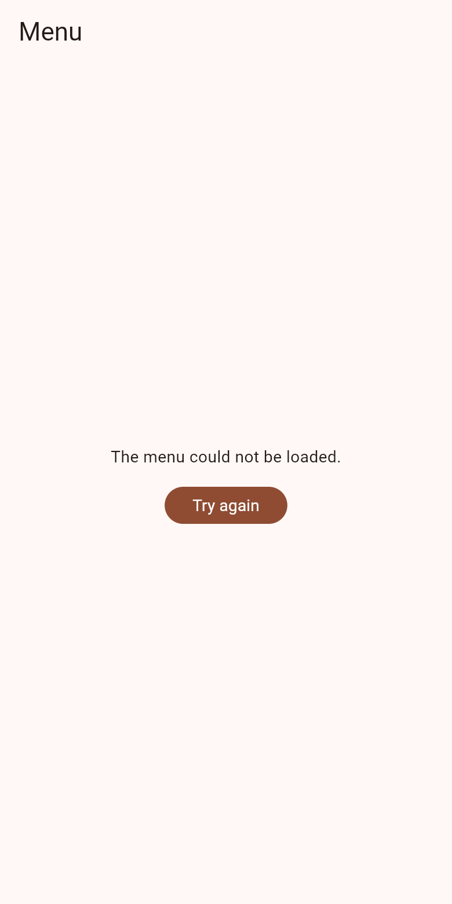
The demo app’s first visit fails
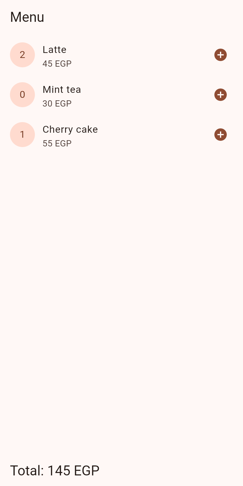
After “Try again”, and an order
10.5Golden tests
A widget test checks what a screen says. A golden test checks how it looks: it draws a widget, and compares the pixels with an approved image, the golden, kept in the repository.
The first time, there is no golden to compare with, so you create it, look at it, and commit it:
Terminal
$ flutter test --update-goldens test/golden_test.dart test/golden_rtl_test.dart
00:00 +0: loading test/golden_test.dart
00:00 +0: test/golden_test.dart: a drink tile looks as approved
00:00 +1: test/golden_rtl_test.dart: a drink tile in Arabic and in dark mode
00:00 +2: All tests passed!
Terminal
$ flutter test test/golden_test.dart
00:00 +0: loading test/golden_test.dart
00:00 +0: a drink tile looks as approved
00:00 +1: All tests passed!
Then a teammate changes the theme’s seed colour from brown to teal, for an unrelated screen, and the golden test fails:
Terminal
$ flutter test test/golden_change_test.dart
Golden "goldens/drink_tile.png": Pixel test failed, 100.00%, 38400px diff detected.
Failure feedback can be found at test/failures
00:00 +0 -1: a drink tile looks as approved [E]
00:00 +0 -1: Some tests failed.
shots/golden-compare.png560px
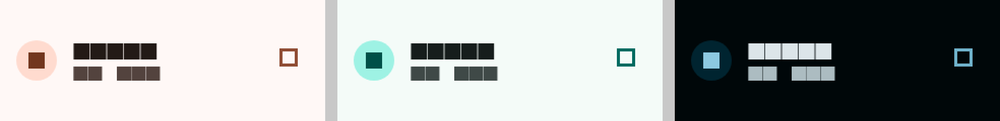
Left to right: the approved golden, what the test drew, and the difference Flutter saved in test/failures. Every pixel changed, because the seed colour also tints the background.
Two things in those pictures surprise everyone the first time. The text is drawn as boxes: Flutter tests use a test font in which every letter is a square, so that goldens are identical on every machine, whatever fonts it has installed. And the icons are squares too, for the same reason. Goldens protect layout, colour and spacing; the words are checked by widget tests.
10.6Integration tests
Everything so far ran in a test environment: no real window, no real engine, no platform. An integration test builds the real app and runs it on a device, here a Linux desktop, the device this book’s machine has, on a virtual screen. The same test runs unchanged on an Android emulator or a phone with -d and the device’s id.
integration_test/order_flow_test.dart
void main() {
IntegrationTestWidgetsFlutterBinding.ensureInitialized();
testWidgets('from a failed start to an order', (tester) async {
await tester.pumpWidget(
BitApp(repository: DemoMenu(), now: () => DateTime(2026, 11, 23, 10)),
);
await tester.pumpAndSettle();
expect(find.text('The menu could not be loaded.'), findsOneWidget);
await tester.tap(find.text('Try again'));
await tester.pumpAndSettle();
await tester.tap(find.text('Latte'));
await tester.tap(find.text('Latte'));
await tester.tap(find.text('Cherry cake'));
await tester.pumpAndSettle();
expect(find.text('Total: 145 EGP'), findsOneWidget);
});
}
Terminal
$ flutter test integration_test/order_flow_test.dart -d linux
00:00 +0: loading integration_test/order_flow_test.dart
Building Linux application...
✓ Built build/linux/x64/debug/bundle/bit_app
00:00 +0: from a failed start to an order
00:02 +1: (tearDownAll)
00:02 +1: All tests passed!
The package is part of the Flutter SDK, added as a development dependency:
Terminal
$ flutter pub add http 'dev:integration_test:{"sdk":"flutter"}'
Resolving dependencies...
Downloading packages...
+ http 1.6.0
... and 11 packages they need
Changed 12 dependencies!
On its first run, this test failed. The “Try again” button was written as onPressed: () => setState(() => drinks = widget.repository.menu()). The inner arrow returns the value of the assignment, a Future, and setState asserts that its callback returns nothing, because an async callback would update the state too late. The integration test runs a debug build, where assertions are on, and stopped with “setState() callback argument returned a Future”. The screenshots of the same app came from a release build, where assertions are removed, so the button seemed to work there. The fix is a block body: setState(() { drinks = widget.repository.menu(); }).
That is the value of running the real thing: it found a mistake in a path no widget test had walked yet.
10.7Coverage
flutter test --coverage records which lines the tests ran, in coverage/lcov.info. A short script in the project, tool/coverage.dart, prints it per file:
Terminal
$ dart run tool/coverage.dart
lib/domain/pricing.dart 5/5 100%
lib/data/menu.dart 10/12 83%
lib/ui/menu_screen.dart 41/47 87%
all 56/64 88%
Read coverage as a map of what no test has touched, not as a score. The missing lines here are MenuException.toString and the error branch of the screen, with its “Try again” button: exactly the path where section 10.6 found its bug. (Project 10.2 covers it; this run did not include it.) And notice what is not in the list at all: the demo repository. A file that no test imports does not appear in the report, so it cannot even lower the percentage. 100% coverage does not mean the code is right; 40% means that most of it has never run in a test at all.
Common mistakes
Mistake
What happens
Fix
DateTime.now() inside logic
Tests that fail at certain hours
Pass the clock in
Real network in tests
Slow, flaky tests that need the server up
A fake repository, or MockClient
Mocking everything
Tests that break on every refactor
Fakes that behave; mocks only for interactions
Updating goldens without looking
A broken look, approved
Look at the diff first
Only testing in release builds
Assertions never run
Widget and integration tests in debug
Chasing 100% coverage
Tests that run lines without checking anything
Use coverage to find untested paths
Summary
Unit tests for rules, widget tests for screens, goldens for looks, integration tests for journeys, in that proportion.
Code is testable when it is given what it depends on: a repository, an HTTP client, a clock.
Fakes behave like the real thing without the network; a Completer controls when they answer.
Goldens compare pixels with an approved image; text is drawn as boxes so that they match everywhere.
Integration tests run the real app on a device, with assertions on, and find what the others cannot.
Coverage shows what has never run in a test; it is a map, not a score.
Quick check answers: 1. So that a test can choose the time: a function that called DateTime.now() itself would give different answers depending on when the test ran, and happy hour could only be tested between 15:00 and 17:00. 2. A fake is a simpler working implementation (an in-memory repository, a client that answers from a function); a mock records the calls made to it so the test can verify them. Fakes test behaviour, mocks test interaction. 3. Flutter tests draw text with a test font in which every letter is a box, so that goldens are identical on every machine regardless of the fonts installed; the words themselves are checked by widget tests.
Practice projects
The projects test the edges of a rule, a failure path, and the look of a component in a language and a theme the golden above does not cover.
Project 10.1 · Easy
Happy hour at its edges
Bugs live at boundaries. Test happy hour at 14:59, 15:00, 16:59, 17:00 and in the middle of the night, with one table of cases.
You will practise:group, table-driven tests, and test names built from data.
Write a map from times to the expected answer.
Loop over it, creating one test per case, named from the time, so a failure says which time is wrong.
Change < 17 to <= 17 in isHappyHour and see exactly one case fail.
$ flutter test test/edges_test.dart
00:00 +0: loading test/edges_test.dart
00:00 +0: happy hour at its edges 14:59 is not happy hour
00:00 +1: happy hour at its edges 15:00 is happy hour
00:00 +2: happy hour at its edges 16:59 is happy hour
00:00 +3: happy hour at its edges 17:00 is not happy hour
00:00 +4: happy hour at its edges 03:30 is not happy hour
00:00 +5: All tests passed!
Project 10.2 · Medium
Try again, really
Test the failure path of the screen: the first call fails, the error and the button appear, and the button asks the repository again, which now answers.
You will practise: fakes with state, counting calls without a mocking library, and pumpAndSettle.
Write FlakyMenu, which throws on its first call and returns a menu after that, and counts its calls.
Pump the screen, and expect the error text and one call.
Tap “Try again”, settle, and expect two calls and the menu.
test/retry_test.dart (part)
class FlakyMenu implements MenuRepository {
var calls = 0;
@override
Future<List<Drink>> menu() async {
calls++;
if (calls == 1) {
throwconst MenuException('timeout');
}
returnconst [Drink('latte', 'Latte', 45)];
}
}
Your result should look like this:
Terminal
$ flutter test test/retry_test.dart
00:00 +0: loading test/retry_test.dart
00:00 +0: Try again asks the repository again
00:00 +1: All tests passed!
Hint: after the tap, one pump is not enough: the first frame shows the new Future as loading, and the menu needs another frame after it completes. pumpAndSettle pumps until nothing is scheduled. This test would also have caught the setState bug of section 10.6, had it been written first.
Project 10.3 · Challenge
A golden in Arabic and in the dark
Add a golden of the drink tile with right-to-left text and the dark theme, so that a change that breaks either one is caught.
You will practise: golden tests with a fixed view size, Directionality, and dark themes.
Set the test view to 320 × 120 at a pixel ratio of 1, so the image is the same everywhere, and reset it at the end.
Pump the tile inside a dark theme and a right-to-left Directionality.
Create the golden with --update-goldens, look at it, and run the test.
Project 10.3: the golden, mirrored and dark. The count is now on the right, the button on the left.
Terminal
$ flutter test test/golden_rtl_test.dart
00:00 +0: loading test/golden_rtl_test.dart
00:00 +0: a drink tile in Arabic and in dark mode
00:00 +1: All tests passed!
Exercises
Easy Add a unit test for a drink ordered three times during happy hour, priced 45. What is the total, and why not 108.0?
Easy The API test checks the request’s address. Add a check that the request is a GET.
Medium Write a widget test that fails if the total is shown before the menu has loaded.
Medium Make goldens use a real font, so that the images show actual words. What do you gain, and what do you risk?
Challenge Turn the integration test into a check that runs on every pull request. Which machine runs it, what does it need installed, and how long can you afford it to take?
Answers to the exercises are at the end of the book and in the book’s code repository.
Coming up in Chapter 11
The app passes its tests. Does it work for someone who cannot see the screen, who uses large text, or who navigates with a switch? The next chapter makes the app accessible, and proves it, with the same tools: semantics, tests and real screen readers.
11
Chapter 11
Accessibility on Mobile
In this chapter you will learn to
read your app the way a screen reader does, through Flutter’s semantics tree
name every control, merge what belongs together, and hide what is decoration
turn Flutter’s accessibility guidelines into tests, and know what they cannot see
make the reading order of an Arabic screen run right to left, not only its layout
survive text at twice its size, and announce changes that cannot be seen
About one person in six lives with some disability, and almost everyone has a bad day: a cracked screen, bright sun, a broken arm, a phone held in one hand on a crowded bus. People use screen readers (TalkBack on Android, VoiceOver on iOS), larger text, a keyboard or a single switch, and higher contrast. An accessible app is not a separate app for them. It is the same app, built so that what the screen shows is also available as names, roles and actions.
Bit
Two results in this chapter surprised the author, and both are kept: a guideline that passed a grey that fails, and an Arabic screen that looked right to left but was read left to right. Sections 11.3 and 11.4 show the tests that found them.
11.1The semantics tree
Flutter draws every pixel itself, so the operating system cannot look inside the picture to find buttons and text. Next to the widget tree and the render tree, Flutter builds a third tree, the semantics tree: nodes with a label (“Add Latte”), a role (button, heading, text field), a state (selected, checked) and actions (tap, scroll). The platform hands this tree to TalkBack or VoiceOver; on the web, Flutter turns it into HTML elements with ARIA roles that the browser’s accessibility tree reads.
Most widgets fill the tree well by themselves: Text gives its words, ElevatedButton says it is a button, TextField gives its label. The trouble starts with what we build ourselves from GestureDetectors, icons and containers.
11.2What a screen reader hears
Here is a menu written in a hurry. Each row has a photo, a name, a description, a price, a heart to save the drink and a plus to add it. The two icons are drawn by hand:
To hear what it says, the book’s screenshot tool asked the browser for its accessibility tree, the same tree a screen reader reads, from the real app built for the web:
A screen-reader user hears each drink, then “button”, “button”. Which one saves and which one adds? Nothing says. The careful version names each button after what it does and to which drink, merges the photo, name, description and price into one stop, and hides the photo, whose meaning the name already carries:
lib/menu_careful.dart (part)
child: MergeSemantics(
child: Row(
spacing: 12,
children: [
// The photo is decoration: the name already says what it is.
ExcludeSemantics(
child: Container(
width: 56,
height: 56,
decoration: BoxDecoration(
color: Colors.brown,
borderRadius: BorderRadius.circular(12),
),
child: const Icon(
Icons.local_cafe,
color: Colors.white,
),
),
),
Expanded(
child: Column(
crossAxisAlignment:
CrossAxisAlignment.start,
children: [
Text(name, style: text.titleMedium),
Text(
about,
style: text.bodySmall!.copyWith(
color: colors.onSurfaceVariant,
),
),
// Under the name, not beside it: at large sizes a row has no width to spare.
Text(
'$price EGP',
style: text.labelLarge,
),
],
),
),
],
),
),
),
// Every icon button says what it does, and to which drink.
IconButton(
tooltip: 'Save $name',
onPressed: () {},
icon: const Icon(Icons.favorite_border),
),
IconButton.filled(
tooltip: 'Add $name',
onPressed: () {},
icon: const Icon(Icons.add),
tooltip on an IconButton is its accessible name, and also the label that appears on a long press: one string serves both.
MergeSemantics turns its subtree into one node, read in one go. Use it for things that are one idea, like a menu item; not for things that are separate actions.
ExcludeSemantics removes decoration. An image that carries information needs a semanticLabel instead.
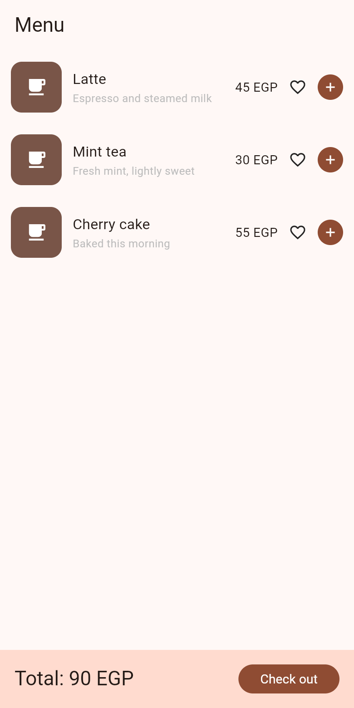
The hurried menu: small icons with no names
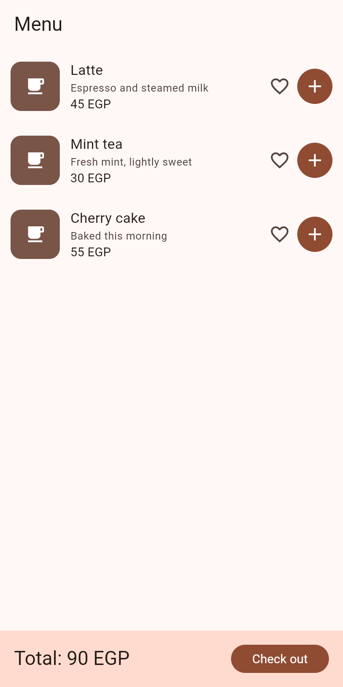
The careful menu: the same screen, with names
To the eye, the two screens are almost the same. To a screen reader, they are different apps.
11.3Guidelines as tests
Flutter’s test package includes accessibility guidelines that check a pumped screen: every tappable node has a label, every tap target is at least 48 × 48 (Android) or 44 × 44 (iOS), and text has enough contrast. A test runs all four on both menus:
test/guidelines_test.dart (part)
const guidelines = {
'labeled tap targets': labeledTapTargetGuideline,
'Android tap targets (48 x 48)': androidTapTargetGuideline,
'iOS tap targets (44 x 44)': iOSTapTargetGuideline,
'text contrast': textContrastGuideline,
};
Future<int> check(WidgetTester tester, String name, Widget menu) async {
final semantics = tester.ensureSemantics();
await tester.pumpWidget(cafe(menu));
var failed = 0;
debugPrint('$name menu:');
for (final MapEntry(key: rule, value: guideline) in guidelines.entries) {
final result = await guideline.evaluate(tester);
if (!result.passed) {
failed++;
}
final first = result.reason?.split('\n').first ?? '';
debugPrint(
' ${result.passed ? 'pass' : 'FAIL'} ${rule.padRight(30)}${first.length > 70 ? '${first.substring(0, 70)}...' : first}',
);
}
semantics.dispose();
return failed;
}
Terminal
$ flutter test test/guidelines_test.dart
00:00 +0: loading test/guidelines_test.dart
00:00 +0: four accessibility guidelines, hurried and careful menus
hurried menu:
FAIL labeled tap targets SemanticsNode#6(Rect.fromLTRB(728.0, 30.0, 748.0, 50.0), actions: [tap...
FAIL Android tap targets (48 x 48) SemanticsNode#6(Rect.fromLTRB(728.0, 30.0, 748.0, 50.0), actions: [tap...
FAIL iOS tap targets (44 x 44) SemanticsNode#6(Rect.fromLTRB(728.0, 30.0, 748.0, 50.0), actions: [tap...
pass text contrast
careful menu:
pass labeled tap targets
pass Android tap targets (48 x 48)
pass iOS tap targets (44 x 44)
pass text contrast
00:00 +1: All tests passed!
The hurried menu fails three: its 20-pixel heart has no label, and it is too small to hit reliably. The careful menu passes all four. But look at the last line of the hurried menu: text contrast passes, for a description drawn in a light grey that is plainly hard to read. Checked on its own, the same grey fails clearly:
Terminal
$ flutter test test/contrast_alone_test.dart
00:00 +0: loading test/contrast_alone_test.dart
00:00 +0: the grey description, checked on its own
text contrast: FAIL
Expected contrast ratio of at least 4.5 but found 1.79 for a font size of 12.0.
00:00 +1: All tests passed!
Why did it pass in the menu? The contrast guideline looks for each semantics node’s label among the Text widgets on screen, and measures that text. In the menu, Flutter had combined each row’s name, description and price into one node, so its label was all three lines together, no single Text matched it, and nothing was measured. The guideline did not lie; it checked nothing and reported no failure.
11.4Reading order, right to left
A screen reader moves through the semantics tree in its traversal order: top to bottom, and within a line, in the reading direction. In an Arabic app, the drink’s name is on the right and its buttons on the left, so the name should be read first. A test prints the first row as a screen reader would visit it, for the careful menu set up two ways:
$ flutter test test/reading_order_test.dart
00:00 +0: loading test/reading_order_test.dart
00:00 +0: the reading order of a right-to-left menu
Directionality only: Add Latte -> Save Latte -> Latte
Arabic locale: Latte -> Save Latte -> Add Latte
00:00 +1: All tests passed!
With only a Directionality widget, the screen looks right to left, but it is read left to right: “Add Latte” before the user has heard what Latte is. The direction of the semantics tree comes from higher up, from the app’s locale. With the Arabic locale and its localizations, both the layout and the reading order run right to left. The Arabic edition of this chapter’s apps uses that setup, the same one Chapter 13 of Book 5 used.
11.5Large text
Both Android and iOS let people make text larger, up to twice its size and more, and Flutter honours it through MediaQuery.textScalerOf. Layouts written for the default size break: rows run out of width, fixed heights cut words in half. The book’s demo apps take a text scale so that a test and a screenshot can try 200%:
Terminal
$ flutter test test/large_text_test.dart
00:00 +0: loading test/large_text_test.dart
00:00 +0: the menus with text at twice the size
hurried menu at 200%: A RenderFlex overflowed by 491 pixels on the right.
careful menu at 200%: fits
00:00 +1: All tests passed!
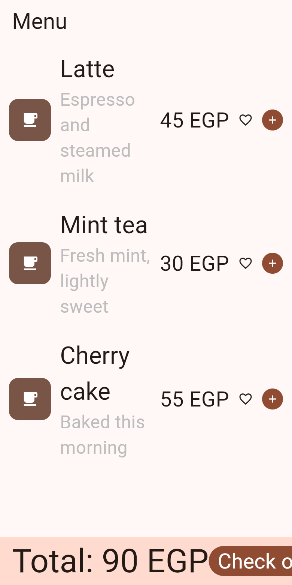
Hurried, at 200%: the total bar runs off the screen
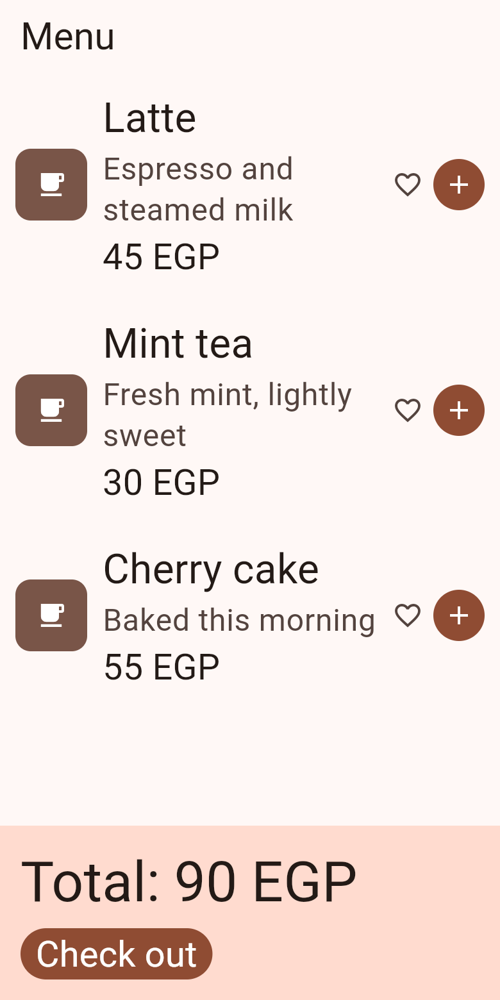
Careful, at 200%: everything wraps
Two changes made the careful menu fit. The total bar is a Wrap with no fixed height, so the button moves to a second line when the line is full:
And the price moved from beside the name to under it. The first careful version kept it beside the name; in English it fitted, but in Arabic, whose words are wider at this size, the test reported “A RenderFlex overflowed by 6.5 pixels on the right”. Test large text in every language you ship.
Common mistakes
Mistake
What happens
Fix
Icons drawn with GestureDetector
“Button, button”: no names, small targets
IconButton with a tooltip
Decorative images in the tree
Noise read aloud on every row
ExcludeSemantics, or semanticLabel if it informs
Trusting a passing contrast guideline
Unreadable text that “passed”
Contrast tests on the design tokens
Directionality instead of a locale
Arabic laid out right to left, read left to right
The Arabic locale with its localizations
Fixed heights and crowded rows
Large text cut off or overflowing
Wrap, no fixed heights, test at 200%
Changes shown only visually
A screen-reader user never learns the order changed
An announcement (Project 11.1)
Summary
Flutter builds a semantics tree of labels, roles, states and actions; screen readers and the browser read it.
Name every control (tooltip, labels), merge what is one idea, hide what is decoration.
The accessibility guidelines catch missing labels and small targets; contrast is checked for certain on the tokens.
Right-to-left reading order comes from the locale, not from a Directionality widget.
Test at 200% text in every language, and let layouts wrap instead of fixing sizes.
Quick check answers: 1. It combines its whole subtree into one semantics node, read in one go, like a menu item’s photo, name and price. Do not use it around things that are separate actions, such as two buttons: merged, they would become one node and the user could not reach them separately. 2. Because the guideline measures the Text widget whose words match a node’s label, and Flutter had merged each row’s texts into one node whose label matched no single Text; nothing was measured, so nothing failed. 3. The app’s locale: with the Arabic locale and its localizations, the semantics tree reads right to left. A Directionality widget alone mirrors the layout but leaves the reading order left to right.
Practice projects
The projects cover what the eye sees but the ear does not: a change on screen, the order of a form, and a control made by hand.
Project 11.1 · Easy
Announce what changed
When a drink is added, the badge on the cup changes, which a screen-reader user cannot see. Announce the change, and prove it with a test.
You will practise:SemanticsService.sendAnnouncement, and tester.takeAnnouncements.
After the state changes, send an announcement with the drink and the new count, in the screen’s text direction.
In a test, tap twice and take the announcements.
Print them, and expect two.
lib/announce.dart (part)
void add() {
setState(() => count++);
// Tell screen reader users what changed, since they cannot see the badge.
SemanticsService.sendAnnouncement(
View.of(context),
'Latte added, $count items in your order',
Directionality.of(context),
);
}
Your result should look like this:
Terminal
$ flutter test test/announce_test.dart
00:00 +0: loading test/announce_test.dart
00:00 +0: adding a drink is announced
announced (polite): "Latte added, 1 items in your order"
announced (polite): "Latte added, 2 items in your order"
00:00 +1: All tests passed!
Hint: announce results, not actions: “Latte added, 2 items”, not “button pressed”. And keep announcements polite (the default), so they wait for the screen reader to finish what it is saying.
Project 11.2 · Medium
The order of the Tab key
The checkout page has its Pay button in the app bar, at the top, so keyboard and switch users reach it before the fields they must fill. Make Tab go name, phone, then Pay.
You will practise: focus traversal, FocusTraversalGroup, OrderedTraversalPolicy and NumericFocusOrder, and key events in tests.
Give each focusable widget a FocusNode with a debugLabel, so a test can say which one has focus.
Press Tab three times in a test and print the labels, before and after the fix.
Wrap the page in a FocusTraversalGroup with an OrderedTraversalPolicy, and number the three widgets.
$ flutter test test/focus_order_test.dart
00:00 +0: loading test/focus_order_test.dart
00:00 +0: the order of the Tab key
by position: pay -> name -> phone
in order: name -> phone -> pay
00:01 +1: All tests passed!
Project 11.3 · Challenge
A cup-size picker that explains itself
A custom picker of three rounded chips, made from GestureDetectors. Make each chip a button, in a group where one is selected, with a clear label, large enough to tap, and prove it.
You will practise: the Semantics widget, isSemantics, tester.semantics.tap, and guidelines on a custom control.
Wrap each chip in Semantics with button, selected, inMutuallyExclusiveGroup, a label and an onTap, and exclude the chip’s own text from the tree.
In a test, check the flags of the selected and unselected chips with isSemantics.
Tap “Large” through the semantics tree, as a screen reader’s double tap would, and check that the selection moved; then run the tap-target and contrast guidelines.
$ flutter test test/cup_size_test.dart
00:00 +0: loading test/cup_size_test.dart
00:00 +0: the cup sizes are buttons in a group, one selected
a screen reader double-tap on Large selected it, and Medium is no longer selected
00:00 +1: All tests passed!
Hint: before writing a custom control, check whether a Material one does the job: a SegmentedButton is already a group of selectable buttons with all these semantics built in.
Exercises
Easy Give the hurried menu’s photo a meaning: say it shows the drink in its real cup. What should the photo’s semantics be now?
Easy The careful menu’s plus button says “Add Latte”. Why is “Add” alone not enough, even though it sits in Latte’s row?
Medium The browser’s tree already shows “Menu” as a heading, though no code asked for one. Who made it a heading? Then make the total a live region. What does that change for a screen-reader user?
Medium Write a test that fails if any IconButton in the app has no tooltip. Why might it be stricter than labeledTapTargetGuideline?
Challenge Write a test that prints the whole careful menu as a screen reader would visit it, in Arabic and in English, and compare the two orders. Which nodes move, and which stay in place?
Answers to the exercises are at the end of the book and in the book’s code repository.
Coming up in Chapter 12
The app now works for everyone who opens it. The next chapter is about the moments it is closed: push notifications that bring people back, and work that runs in the background, within the strict limits Android and iOS set.
12
Chapter 12
Push Notifications and Background Work
In this chapter you will learn to
explain how a push reaches a phone: tokens, FCM and APNs, and the three moments a message can arrive
treat messages as data that is checked, not trusted, and turn them into routes
keep Firebase behind an interface, so the app and its tests never depend on it
ask for permission at the right moment, and know what the plugins add to your app
write background work that the system can stop at any time, and test it
A café app is used for a minute, then closed. Its most useful moment comes later: “your latte is ready”. That moment belongs to the operating system, not to the app. The system decides whether a message is shown, when background work runs, and whether the app may run at all. This chapter builds the parts of that story an app controls, and is honest about the parts it does not.
Bit
This book’s machine has no phone and no Firebase project, so no real push is sent in this chapter. What runs here, runs for real: the messages, the routing, the permission flow and the background job are tested with fakes, and the Firebase, notification and WorkManager code is compiled into a real Android app, whose first build failed. Section 12.5 shows why.
12.1How a push arrives
A phone keeps one connection open to its platform’s push service: Firebase Cloud Messaging (FCM) on Android, the Apple Push Notification service (APNs) on iOS. When the app starts, it asks for a token, an address for this app on this phone, and sends it to your server. To notify the user, the server sends a message for that token to FCM (which also forwards to APNs for iOS apps that use it), and the service delivers it when the phone is reachable.
A message can carry a notification (a title and body that the system shows by itself when the app is not on screen) and data (key–value strings for the app). When it arrives, the app is in one of three situations, and each one reaches your code differently:
The app is…
What the system does
What your code receives
On screen (foreground)
Nothing visible
The message, at once: show your own banner
In the background
Shows the notification in the tray
The message, when the user taps it
Not running
Shows the notification in the tray
The message that started the app, once, at launch
12.2Messages are data
A push message is input from outside, like a form or an HTTP response: checked, never trusted. The app reads only the kinds it knows, and only with valid fields:
lib/push/message.dart
// What the server may send. Anything else is ignored, not guessed.enum PushKind { orderReady, orderUpdate, promo }
class PushMessage {
const PushMessage(this.kind, {this.orderId, this.title, this.body});
final PushKind kind;
finalString? orderId;
finalString? title;
finalString? body;
// FCM delivers a message's data as a map of strings.static PushMessage? fromData(Map<String, Object?> data) {
final kind = switch (data['type']) {
'order_ready' => PushKind.orderReady,
'order_update' => PushKind.orderUpdate,
'promo' => PushKind.promo,
_ => null,
};
if (kind == null) {
returnnull;
}
final orderId = data['order_id'] asString?;
if (kind != PushKind.promo &&
(orderId == null || !RegExp(r'^\d+$').hasMatch(orderId))) {
returnnull;
}
return PushMessage(
kind,
orderId: orderId,
title: data['title'] asString?,
body: data['body'] asString?,
);
}
// A message knows where it leads; the app decides when to go there.Stringget route => switch (kind) {
PushKind.orderReady || PushKind.orderUpdate => '/orders/$orderId',
PushKind.promo => '/',
};
}
An order message without an order is ignored, and so is one whose id is a path: a message that sends the app to /orders/../admin is exactly what checking is for. Unknown types are ignored too, so an old version of the app is not confused by a kind of message added next year.
12.3Firebase behind an interface
The app needs three streams of messages and two questions about permission. That is the whole contract:
lib/push/push_source.dart
import'message.dart';
enum PermissionState { unknown, granted, denied }
// The app depends on this, never on Firebase directly.abstractinterfaceclass PushSource {
// Three moments: open on screen, tapped from the tray, or the tap that started the app.Stream<PushMessage> get foreground;
Stream<PushMessage> get opened;
Future<PushMessage?> initial();
Future<PermissionState> permission();
Future<PermissionState> request();
}
The Firebase implementation is a thin translation, from RemoteMessage to PushMessage and from Firebase’s permission states to ours:
Nothing else in the app imports Firebase. The tests use a fake source whose streams the test controls, and the demo app in the screenshots uses the same fake to deliver a message a second after it opens. If the company moves to another push provider, one file changes.
12.4The app reacts
The app listens to the three moments once, at the top, next to the router:
lib/cafe.dart (part)
void initState() {
super.initState();
subscriptions
..add(widget.push.foreground.listen(showBanner))
..add(widget.push.opened.listen((message) => router.go(message.route)));
widget.push.initial().then((message) {
if (message != null) {
router.go(message.route);
}
});
}
// In the foreground the system shows nothing: the app shows its own banner.void showBanner(PushMessage message) {
messenger.currentState?.showSnackBar(
SnackBar(
content: Text(message.title ?? ''),
duration: const Duration(seconds: 10),
action: SnackBarAction(
label: 'View',
onPressed: () => router.go(message.route),
),
),
);
}
In the foreground the system shows nothing, so the app shows a banner with a “View” action. A tap on a notification, or the notification that launched the app, goes straight to the order. Each of the three is a widget test with the fake source:
test/app_test.dart (part)
testWidgets(
'a message in the foreground shows a banner that opens the order',
(tester) async {
final push = DemoPush();
await tester.pumpWidget(CafeApp(push: push));
push.foregroundMessages.add(ready);
await tester.pump();
await tester.pump(const Duration(milliseconds: 750));
expect(find.text('Your latte is ready'), findsOneWidget);
await tester.tap(find.text('View'));
await tester.pumpAndSettle();
expect(find.text('Order 42'), findsOneWidget);
},
);
testWidgets('a tapped notification opens its order', (tester) async {
final push = DemoPush();
await tester.pumpWidget(CafeApp(push: push));
push.openedMessages.add(ready);
await tester.pumpAndSettle();
expect(find.text('Order 42'), findsOneWidget);
});
Terminal
$ flutter test test/app_test.dart
00:00 +0: loading test/app_test.dart
00:00 +0: a message in the foreground shows a banner that opens the order
00:01 +1: a tapped notification opens its order
00:01 +2: a notification that started the app opens its order
00:01 +3: All tests passed!
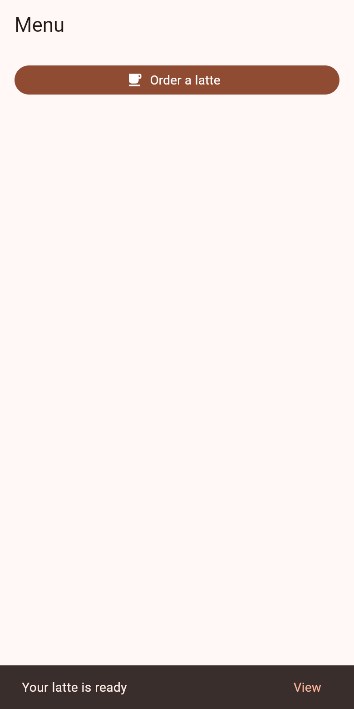
A message arrives while the app is open
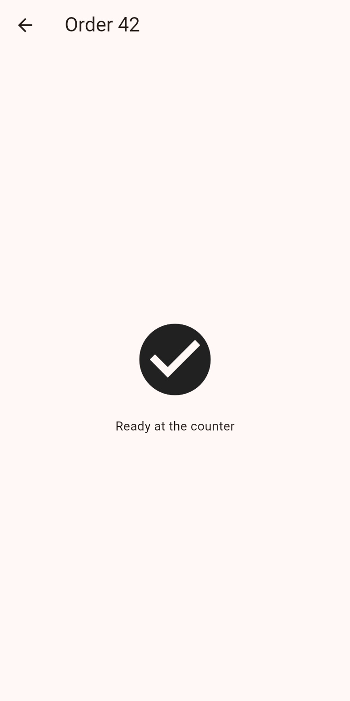
“View” opens the order
12.5Permission, and what the plugins bring
iOS has always asked the user before an app may show notifications, and asks once: an app that asks at its first launch, before the user knows why, is usually refused for good. Android asks too, since Android 13, through the POST_NOTIFICATIONS permission. So the café asks after the first order, when the reason is obvious, and explains it in its own card first:
lib/cafe.dart (part)
Future<void> order() async {
setState(() => ordered = true);
// Ask after the first order, when the reason is obvious, not at the first launch.if (await widget.push.permission() == PermissionState.unknown) {
setState(() => asking = true);
}
}
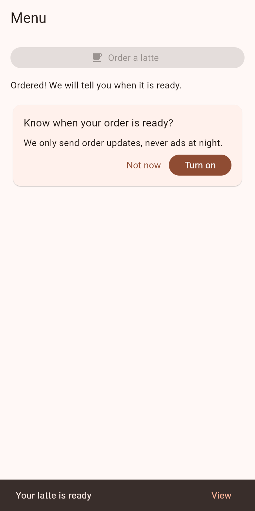
The app’s own card, after the first order, before the system’s question
The plugins, for their part, change the app more than their Dart code suggests. The first Android build of this chapter’s app, exactly as Flutter created it, failed:
Terminal
$ flutter build apk --debug -t lib/main_firebase.dart
Warning: The plugin flutter_local_notifications requires Android SDK version 37 or higher.
1. Dependency ':flutter_local_notifications' requires libraries and applications that
depend on it to compile against version 37 or later of the
Android APIs.
:app is currently compiled against android-36.
2. Dependency ':flutter_local_notifications' requires core library desugaring to be enabled
for :app.
3. Dependency 'androidx.core:core-ktx:1.19.0' requires libraries and applications that
depend on it to compile against version 37 or later of the
Android APIs.
:app is currently compiled against android-36.
4. Dependency 'androidx.core:core:1.19.0' requires libraries and applications that
depend on it to compile against version 37 or later of the
Android APIs.
:app is currently compiled against android-36.
BUILD FAILED in 4s
The notifications plugin needs the Android 37 SDK to compile against, and core library desugaring, which lets code written for newer Java APIs run on older Android versions. Both are settings of the app’s Gradle build:
$ flutter build apk --debug -t lib/main_firebase.dart
✓ Built build/app/outputs/flutter-apk/app-debug.apk
Then the finished APK can be asked what it will request on the phone. The app’s own manifests ask for one thing, INTERNET, and only in debug builds, for hot reload; every other line below was merged in from a plugin:
Together they cover showing notifications (POST_NOTIFICATIONS, VIBRATE), receiving FCM messages (c2dm.permission.RECEIVE), keeping the phone awake for a moment of work (WAKE_LOCK), and scheduling work again after the phone restarts (RECEIVE_BOOT_COMPLETED). Read this list before every release: it is what the store shows, what reviewers ask about, and what the privacy policy must explain.
12.6Background work
Sometimes the app must check for itself, for example when a push was lost. Both platforms allow background work, on their terms. Android’s WorkManager runs periodic work at most every 15 minutes, only when its constraints (a network, say) are met, and delays it further to save battery. iOS runs background tasks when it decides the user will benefit, which may be rarely, or never for an app the user does not open. Either may stop the work at any moment.
So the work itself is plain Dart, quick, and safe to run twice:
lib/background/sync.dart
import'orders_api.dart';
// The background job: plain Dart, safe to run twice, and quick.Future<int> syncOrders(OrdersApi api, Seen seen, Notify notify) async {
var sent = 0;
for (final order inawait api.mine()) {
// Notify once per order, even if the job runs again.if (order.ready && !await seen.contains(order.id)) {
await notify.orderReady(order.id);
await seen.add(order.id);
sent++;
}
}
return sent;
}
Terminal
$ flutter test test/sync_test.dart
00:00 +0: loading test/sync_test.dart
00:00 +0: the background job notifies once, even when run twice
00:00 +1: All tests passed!
Run twice, it notifies orders 41 and 42 once each: the second run finds them in seen. The plugin code only connects that function to the system:
lib/background/dispatcher.dart (part)
@pragma('vm:entry-point')
void callbackDispatcher() {
Workmanager().executeTask((task, input) async {
// A real app would build its OrdersApi and Seen here, from its own HTTP client and storage,// then: return await syncOrders(api, seen, LocalNotify()) >= 0;returntrue;
});
}
Future<void> scheduleSync() async {
await Workmanager().initialize(callbackDispatcher);
// Android runs periodic work at most every 15 minutes, when the system chooses.await Workmanager().registerPeriodicTask(
'orders-sync',
'syncOrders',
frequency: const Duration(minutes: 15),
constraints: Constraints(networkType: NetworkType.connected),
existingWorkPolicy: ExistingPeriodicWorkPolicy.keep,
);
}
The dispatcher runs in a fresh isolate, with none of the app’s state: no providers, no open database, no logged-in session in memory. It must build what it needs from storage, which is another reason to keep the job a function of its inputs.
Common mistakes
Mistake
What happens
Fix
Asking for permission at first launch
Refused, often for good
Ask after the moment that shows why
Trusting message data
A message that sends the app anywhere
Parse and check, ignore the unknown
Firebase used all over the app
Untestable code, a costly change of provider
One interface, one implementation
Forgetting the foreground case
Messages that arrive and show nothing
An in-app banner
Background work that assumes it finishes
Half-done work, duplicate notifications
Short, idempotent jobs
Not reading the merged manifest
Permissions you cannot explain to reviewers
aapt2 dump permissions before release
Summary
A push goes from your server to FCM or APNs to the phone, addressed by a token; it arrives in the foreground, from a tap, or as the launch message.
Messages are data: parse them, check them, ignore what you do not know.
Firebase stays behind a small interface; tests and demos use a fake.
Ask for permission when the reason is clear; know the permissions the plugins add.
Background work runs when the system allows, may be stopped at any time, and must be safe to repeat.
Quick check answers: 1. When the app is in the foreground; the app should show its own banner (here a SnackBar with a “View” action) so that the user still learns about the message. 2. Because message data comes from outside and is not trusted: the id becomes part of a route, and an id like ../admin could send the app somewhere it should not go. A number is all an order id can be. 3. Because the system asks only once (on iOS, and in practice on Android too), and a user who does not yet know why the app wants to notify them usually refuses; after the first order, “know when it is ready” is an obvious reason.
Practice projects
The projects add the rules that make notifications welcome: quiet hours, a permission flow that respects “no”, and background work that stops in time.
Project 12.1 · Easy
Quiet hours
Promotions wait until 08:00 and stop at 22:00, in the user’s local time; order updates are shown at any hour.
You will practise: pure decision functions, records in test tables, and boundaries.
Write showNow(message, localTime): true for anything but promotions, and for promotions only between 08:00 and 22:00.
Test the edges, 07:59, 08:00, 21:59 and 22:00, and an order update late at night.
lib/quiet.dart
// Promotions wait for the morning; order updates never wait.bool showNow(PushMessage message, DateTime localTime) {
if (message.kind != PushKind.promo) {
returntrue;
}
return localTime.hour >= 8 && localTime.hour < 22;
}
Your result should look like this:
Terminal
$ flutter test test/quiet_test.dart
00:00 +0: loading test/quiet_test.dart
00:00 +0: quiet hours promo at 07:59: wait
00:00 +1: quiet hours promo at 08:00: show
00:00 +2: quiet hours promo at 21:59: show
00:00 +3: quiet hours promo at 22:00: wait
00:00 +4: quiet hours orderReady at 23:30: show
00:00 +5: All tests passed!
Project 12.2 · Medium
A permission flow that hears “no”
The card appears only after the first order; “Turn on” asks the system once; if the answer is no, the card goes away and the app says where to change it, instead of asking again.
You will practise: widget tests of a whole flow, and fakes that record calls.
Make the fake source answer “denied” and count requests.
Expect no card before ordering, a card after, one request after “Turn on”, then no card and the settings text.
test/permission_test.dart
void main() {
testWidgets(
'the permission card appears after the first order, and only once',
(tester) async {
final push = DemoPush(answer: PermissionState.denied);
await tester.pumpWidget(CafeApp(push: push));
await tester.pumpAndSettle();
expect(find.byType(PermissionCard), findsNothing);
await tester.tap(find.text('Order a latte'));
await tester.pumpAndSettle();
expect(find.byType(PermissionCard), findsOneWidget);
await tester.tap(find.text('Turn on'));
await tester.pumpAndSettle();
expect(push.requests, 1);
expect(find.byType(PermissionCard), findsNothing);
expect(
find.text('Notifications are off. You can turn them on in Settings.'),
findsOneWidget,
);
},
);
}
Your result should look like this:
Terminal
$ flutter test test/permission_test.dart
00:00 +0: loading test/permission_test.dart
00:00 +0: the permission card appears after the first order, and only once
00:00 +1: All tests passed!
Hint: after a refusal, the system will not show its question again; only the user can change it in Settings. An app that keeps asking just looks broken.
Project 12.3 · Challenge
Stop in time
The system gives background work little time. Run the sync within a budget: if the network is too slow, give up and ask to be run again later.
You will practise:Future.timeout, fakeAsync for time in tests, and retry semantics.
Write syncWithin(budget, …), which returns done or retry.
Test it with a fake network that answers in 45 seconds and one that answers in 2, with a budget of 20, using fakeAsync so the test takes no real time.
In the dispatcher, return false for retry: WorkManager then runs the task again later, with a growing delay.
lib/background/budget.dart (part)
enum Outcome { done, retry }
// Stop early and ask to be run again, rather than be killed half way.Future<Outcome> syncWithin(
Duration budget,
OrdersApi api,
Seen seen,
Notify notify,
) async {
try {
await syncOrders(api, seen, notify).timeout(budget);
return Outcome.done;
} on TimeoutException {
return Outcome.retry;
}
}
Your result should look like this:
Terminal
$ flutter test test/budget_test.dart
00:00 +0: loading test/budget_test.dart
00:00 +0: a slow network: stop early and retry later
network answers in 45 s: retry; in 2 s: done; notified [42]
00:00 +1: All tests passed!
Hint: look at the last part of the result: order 42 was notified, once, although the slow run gave up. timeout stops waiting; it does not stop the work, which finished 45 seconds in and marked the order as seen, so the fast run had nothing left to do. On a phone, the system may kill the process before that. Either way, the seen set is what keeps the user from getting the notification twice.
Exercises
Easy Add a chat message kind that opens /chat/<id>. Which file changes, and which tests?
Easy What should happen if a message for order 42 arrives while the user is already on order 42’s page?
Medium The token can change. When does the app need to send it to the server again, and how would you add that to PushSource and test it?
Medium Give the notifications two Android channels, “Orders” and “Offers”. What does the user gain, and where in the code do channels appear?
Challenge The background job notifies through flutter_local_notifications. When the user taps that notification, the app must open the order, in all three app states. Which callbacks of the plugin do you need, and how does the payload reach the router?
Answers to the exercises are at the end of the book and in the book’s code repository.
Coming up in Chapter 13
Plugins like the ones in this chapter talk to Android and iOS through code you did not write. The next chapter writes that code: platform channels, Pigeon, and calling Kotlin and Swift from Dart.
13
Chapter 13
Platform Channels and Native Code
In this chapter you will learn to
explain how Dart and the platform talk: channels, codecs and the platform thread
write a method channel by hand, on both sides, and handle every way it can fail
replace hand-written channels with Pigeon, which generates typed code for every platform
stream values from native code with an event channel
test the Dart side with mocks, and the native side on a real platform
Flutter draws everything itself, but it cannot read the battery, open the camera or talk to a payment terminal by itself. Those belong to the platform: Kotlin and Java on Android, Swift and Objective-C on iOS, C and C++ on Linux. Every plugin you have used so far crosses that border through a platform channel. This chapter crosses it with our own code.
Bit
The native code in this chapter really runs: this book’s machine builds and runs Flutter apps on Linux, so the C++ side is compiled, run and tested there, and the Kotlin side is compiled into a real Android app. Swift needs a Mac; it is generated here but not compiled.
13.1How a channel works
A channel is a name, both sides agree on it, and a codec that turns values into bytes and back. Dart sends a message on the channel; the engine hands the bytes to the platform side registered under the same name; that side answers, and the answer comes back to Dart as a Future. The standard codec carries null, booleans, numbers, strings, byte arrays, lists and maps of those: a small, common language that Kotlin, Swift and C all understand.
Three kinds of channel cover everything:
a MethodChannel for calls: a method name and arguments, a result or an error;
an EventChannel for streams: native code sends values for as long as Dart listens;
a BasicMessageChannel for plain messages, which is what Pigeon builds on.
On the native side, handlers run on the platform’s main thread, the same thread that draws the platform’s own windows. A handler that blocks that thread freezes the app.
13.2A channel by hand
The café’s kiosk wants to know what it runs on. The Dart side names the channel and the method, and turns the answer, a map, into a class:
lib/device/device_channel.dart (part)
class DeviceChannel {
staticconst _channel = MethodChannel('bitcafe/device');
Future<HostInfo?> info() async {
try {
final map = await _channel.invokeMapMethod<String, Object?>('info');
return HostInfo(
map!['system'] asString,
map['version'] asString,
map['memoryMb'] asint,
);
} on MissingPluginException {
// No handler on this platform (the web, say): not an error for the app.returnnull;
}
}
}
The Linux side answers in C++, with the GObject API of Flutter’s Linux embedder. It reads the system’s name and version with uname, the memory with sysinfo, and answers with a map:
The handlers are registered once, when the window’s Flutter view exists. In the runner that flutter create made, that is two lines in my_application.cc, and the new file in the runner’s CMakeLists.txt:
An integration test runs the real app on Linux and asks:
integration_test/native_test.dart (part)
testWidgets('the native side answers, on Linux', (tester) async {
final byHand = (await DeviceChannel().info())!;
debugPrint(
'by hand: ${byHand.system} ${byHand.version}, ${byHand.memoryMb} MB',
);
final report = await readDevice(PigeonDevice());
final info = report.info!;
debugPrint(
'pigeon: ${info.system} ${info.version}, ${info.memoryMb} MB, battery: ${report.battery ?? report.problem}',
);
app.main();
await tester.pumpAndSettle();
expect(find.text(info.system), findsOneWidget);
expect(find.text('No battery'), findsOneWidget);
});
Terminal
$ flutter test integration_test/native_test.dart -d linux
00:00 +0: loading integration_test/native_test.dart
Building Linux application...
✓ Built build/linux/x64/debug/bundle/bit_app
00:00 +0: the native side answers, on Linux
by hand: Linux 6.18.44-fc-v726, 16087 MB
pigeon: Linux 6.18.44-fc-v726, 16087 MB, battery: UNAVAILABLE
00:01 +1: (tearDownAll)
00:01 +1: All tests passed!
The first line is the channel by hand, answered by the C++ above, on the machine that built this book. The second comes from Pigeon, next.
13.3Pigeon: one definition, typed code everywhere
The channel by hand works, but nothing checks it. If the Kotlin side calls the field memory and Dart reads memoryMb, the app compiles on both sides and fails at run time. Pigeon removes that whole class of bug: you describe the API once, in Dart, and it generates the code for each side.
pigeons/device.dart
import'package:pigeon/pigeon.dart';
// One definition; Pigeon writes the Dart, Kotlin, Swift and GObject code from it.
@ConfigurePigeon(
PigeonOptions(
dartOut: 'lib/device/device_api.g.dart',
kotlinOut: 'android/app/src/main/kotlin/com/example/bit_app/DeviceApi.g.kt',
kotlinOptions: KotlinOptions(package: 'com.example.bit_app'),
swiftOut: 'ios/Runner/DeviceApi.g.swift',
gobjectHeaderOut: 'linux/runner/device_api.g.h',
gobjectSourceOut: 'linux/runner/device_api.g.cc',
gobjectOptions: GObjectOptions(module: 'Cafe'),
),
)
class DeviceInfo {
DeviceInfo({
requiredthis.system,
requiredthis.version,
requiredthis.memoryMb,
});
String system;
String version;
int memoryMb;
}
@HostApi()
abstractclass DeviceApi {
DeviceInfo info();
int batteryLevel();
}
Terminal
$ dart run pigeon --input pigeons/device.dart
One run writes five files: Dart, Kotlin, Swift, and a C header and source for Linux. The Linux side receives a table of functions to fill in, one per method:
static CafeDeviceApiInfoResponse* info(gpointer user_data) {
struct utsname name;
uname(&name);
struct sysinfo memory;
sysinfo(&memory);
g_autoptr(CafeDeviceInfo) device =
cafe_device_info_new(name.sysname, name.release, megabytes(memory.totalram, memory.mem_unit));
return cafe_device_api_info_response_new(device);
}
static CafeDeviceApiBatteryLevelResponse* battery_level(gpointer user_data) {
g_autofree gchar* text = nullptr;
if (!g_file_get_contents("/sys/class/power_supply/BAT0/capacity", &text, nullptr, nullptr)) {
// No battery is an answer too: an error with a code Dart can check.
return cafe_device_api_battery_level_response_new_error("UNAVAILABLE", "This device has no battery.", nullptr);
}
return cafe_device_api_battery_level_response_new(g_ascii_strtoll(text, nullptr, 10));
}
static const CafeDeviceApiVTable device_api = {info, battery_level};
A missing battery is not a crash: it is an error with a code, UNAVAILABLE, that reaches Dart as a PlatformException. The machine that built this book has no battery, so that is exactly what the integration test printed: battery: UNAVAILABLE.
On the Dart side, the generated class is wrapped in a small interface, so that screens and tests do not depend on the channel, and every error becomes something the screen can say:
lib/device/device_source.dart (part)
abstractinterfaceclass DeviceSource {
Future<DeviceInfo> info();
Future<int> batteryLevel();
}
class PigeonDevice extends DeviceApi implements DeviceSource {}
class DeviceReport {
const DeviceReport({this.info, this.battery, this.problem});
final DeviceInfo? info;
finalint? battery;
finalString? problem;
}
// Every platform error becomes something the screen can say.Future<DeviceReport> readDevice(DeviceSource source) async {
final DeviceInfo info;
try {
info = await source.info();
} on PlatformException catch (error) {
return DeviceReport(problem: error.code);
}
try {
return DeviceReport(info: info, battery: await source.batteryLevel());
} on PlatformException catch (error) {
return DeviceReport(info: info, problem: error.code);
}
}
Terminal
$ flutter test test/report_test.dart
00:00 +0: loading test/report_test.dart
00:00 +0: a missing battery becomes a sentence
00:00 +1: no native side becomes a sentence
00:00 +2: All tests passed!
shots/linux.png560px
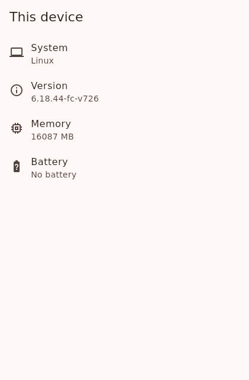
The real app on Linux, answered by C++
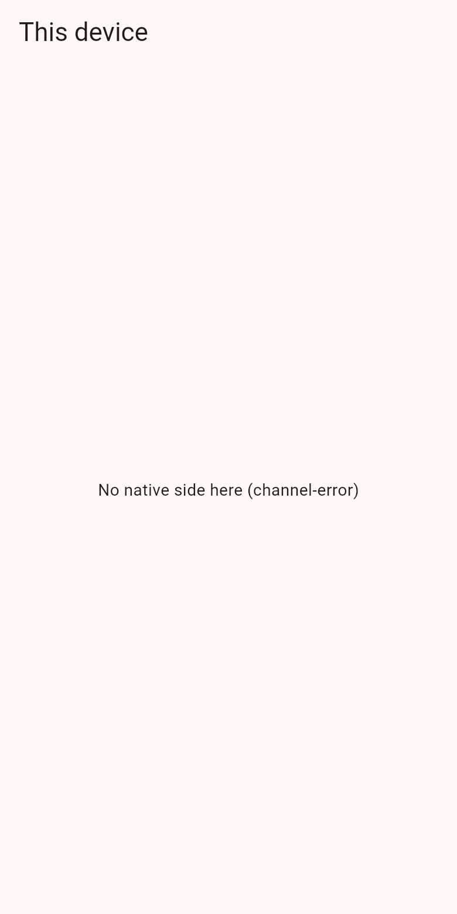
The same app on the web, where no native side exists
On the web, nothing answers on the channel. The generated Dart code reports it as a PlatformException with the code channel-error, and the screen says so instead of failing.
13.4Threads and costs
A channel call is cheap but not free: the arguments are encoded, copied across, decoded, and the answer makes the same trip back. It is fine for a call per tap; it is wrong for sixty calls per second carrying images. For large data, pass a file path or a texture, not the bytes.
The native handler runs on the platform thread. Reading uname takes microseconds, but reading a large file, querying a database or calling a slow system service there freezes the app’s window. Do that work on a background thread (a GTask on Linux, a coroutine on Android, a dispatch queue on iOS) and answer when it finishes: the Dart side is already waiting on a Future, so nothing else has to change.
Common mistakes
Mistake
What happens
Fix
Channel or field names typed twice by hand
A typo that compiles everywhere and fails at run time
Pigeon
Not handling MissingPluginException
The web build or a test crashes
A fallback, or a clear message
Throwing exceptions in native code
A crash instead of an answer
Return an error with a code
Slow work in a native handler
A frozen window
A background thread, then answer
Large data through the codec
Copies on every call, dropped frames
Files, textures or shared memory
Technical strings in right-to-left text
Versions and codes shown scrambled
Isolate them with U+2066 and U+2069
Summary
Channels carry messages between Dart and the platform by name, through a codec; handlers run on the platform thread.
A method channel by hand needs matching names on both sides and care with every failure.
Pigeon generates typed Dart, Kotlin, Swift and GObject code from one definition.
Native errors travel as codes and arrive as PlatformException; no native side at all is MissingPluginException or channel-error.
Test the Dart side with mocks and fakes, and the native side with integration tests on the platform.
Quick check answers: 1. null, booleans, integers, doubles, strings, byte arrays (and typed lists of numbers), and lists and maps of those values; Pigeon adds its own classes on top of it. 2. A mismatch between the two sides, such as a field or method named differently in Dart and in Kotlin, which compiles everywhere and fails only at run time; with Pigeon both sides are generated from one definition and checked by each compiler. 3. The C++ handler returns cafe_device_api_battery_level_response_new_error("UNAVAILABLE", …); the generated code sends it as an error, and Dart’s batteryLevel() throws a PlatformException whose code is UNAVAILABLE.
Practice projects
The projects test the Dart side without a platform, stream values from C++, and give the same API a Kotlin implementation.
Project 13.1 · Easy
Test the channel without a platform
Test DeviceChannel in all three situations: the platform answers, the platform reports an error, and there is no platform side at all.
You will practise:setMockMethodCallHandler, PlatformException and MissingPluginException.
Give the test’s binary messenger a mock handler for bitcafe/device that records the method and returns a map.
Replace it with one that throws PlatformException(code: 'BUSY'), and expect that error in Dart.
Remove the handler, and expect info() to return null.
test/channel_test.dart
void main() {
TestWidgetsFlutterBinding.ensureInitialized();
test('the channel by hand, with a mock', () async {
const channel = MethodChannel('bitcafe/device');
final messenger =
TestDefaultBinaryMessengerBinding.instance.defaultBinaryMessenger;
final calls = <String>[];
messenger.setMockMethodCallHandler(channel, (call) async {
calls.add(call.method);
return {'system': 'Linux', 'version': '6.1.0', 'memoryMb': 15872};
});
final info = (await DeviceChannel().info())!;
debugPrint(
'answered: ${info.system} ${info.version}, ${info.memoryMb} MB, after calls $calls',
);
messenger.setMockMethodCallHandler(
channel,
(call) async => throw PlatformException(code: 'BUSY'),
);
await expectLater(
DeviceChannel().info(),
throwsA(isA<PlatformException>().having((e) => e.code, 'code', 'BUSY')),
);
debugPrint(
'an error from the platform reaches Dart as PlatformException(BUSY)',
);
messenger.setMockMethodCallHandler(channel, null);
debugPrint('no handler at all: ${await DeviceChannel().info()}');
});
}
Your result should look like this:
Terminal
$ flutter test test/channel_test.dart
00:00 +0: loading test/channel_test.dart
00:00 +0: the channel by hand, with a mock
answered: Linux 6.1.0, 15872 MB, after calls [info]
an error from the platform reaches Dart as PlatformException(BUSY)
no handler at all: null
00:00 +1: All tests passed!
Hint: this test uses test, not testWidgets. The first version used testWidgets, and the call with no handler never finished: testWidgets runs in a fake clock, and the missing-handler answer waited on real time. It hit the ten-minute timeout.
Project 13.2 · Medium
Stream from C++
An event channel that sends the free memory every half second while Dart listens, and stops when it stops.
You will practise:EventChannel, FlEventChannel, GLib timers, and integration tests on Linux.
In C++, start a 500 ms timer when Dart listens and remove it when Dart cancels; each tick sends the free memory.
In Dart, expose receiveBroadcastStream() as a Stream<int>.
In an integration test on Linux, take four values and print them with the time it took.
$ flutter test integration_test/memory_test.dart -d linux
00:00 +0: loading integration_test/memory_test.dart
Building Linux application...
✓ Built build/linux/x64/debug/bundle/bit_app
00:00 +0: free memory, streamed from C++
free memory: 6549 MB, 6549 MB, 6549 MB, 6549 MB in 2036 ms
00:02 +1: (tearDownAll)
00:02 +1: All tests passed!
Hint: four values took about two seconds, one every half second, as the timer says. They barely move, because little else was running on that machine; on a phone in use, they change all the time. Taking four values cancels the subscription, which runs on_cancel and removes the timer: a stream that is not cancelled keeps native work running for nobody.
Project 13.3 · Challenge
The same API, in Kotlin
Implement the Pigeon DeviceApi for Android: the system version, the total memory, and the battery level, with the same UNAVAILABLE error, and build the app.
You will practise: Kotlin, FlutterActivity.configureFlutterEngine, Android system services, and generated interfaces.
Implement the generated interface in a class that takes a Context.
Read the memory from ActivityManager and the battery from BatteryManager; throw the generated FlutterError for no battery.
Register it in configureFlutterEngine with DeviceApi.setUp, and build the APK.
DeviceApi.g.kt (part, generated)
interface DeviceApi {
fun info(): DeviceInfo
fun batteryLevel(): Long
...
MainActivity.kt (part)
class AndroidDevice(private val context: Context) : DeviceApi {
override fun info(): DeviceInfo {
val memory = ActivityManager.MemoryInfo()
(context.getSystemService(Context.ACTIVITY_SERVICE) as ActivityManager).getMemoryInfo(memory)
return DeviceInfo(system = "Android", version = Build.VERSION.RELEASE, memoryMb = memory.totalMem / (1024 * 1024))
}
override fun batteryLevel(): Long {
val battery = context.getSystemService(Context.BATTERY_SERVICE) as BatteryManager
val level = battery.getIntProperty(BatteryManager.BATTERY_PROPERTY_CAPACITY)
if (level <= 0) {
throw FlutterError("UNAVAILABLE", "This device has no battery.", null)
}
return level.toLong()
}
}
Your result should look like this:
Terminal
$ flutter build apk --debug -t lib/device_app.dart
✓ Built build/app/outputs/flutter-apk/app-debug.apk
Hint: if the Kotlin class forgot batteryLevel, or returned an Int instead of a Long, this build would fail: that is Pigeon’s promise kept by the Kotlin compiler. The iOS side is the same exercise in Swift, against the generated DeviceApi.g.swift, with UIDevice.current.batteryLevel; it needs a Mac to compile.
Exercises
Easy Add a method uptimeMinutes() to the Pigeon API. Which files do you edit by hand, and which are regenerated?
Easy What does Dart receive if the C++ handler answers info with fl_method_not_implemented_response_new()?
Medium Reading the battery on some devices takes a slow system call. Rewrite the Linux battery handler so it does not block the platform thread.
Medium Make the memory stream send nothing when the value has not changed. Where should that decision live, in C++ or in Dart, and why?
Challenge Turn the device API into a plugin package that other apps can depend on. What moves where, and what does the app keep?
Answers to the exercises are at the end of the book and in the book’s code repository.
Coming up in Chapter 14
Native code can read the battery; it can also read whatever an app leaves lying around. The next chapter is about security on the device: where secrets end up, what an attacker can read from your build, and how to keep tokens and traffic safe.
14
Chapter 14
Security on the Device
In this chapter you will learn to
think like an attacker who holds your app, and sometimes the phone
see where an app’s data really ends up, and read it back as an attacker would
keep tokens in the platform’s secure storage, short-lived ones only in memory
accept that nothing compiled into an app is secret, and design for it
pin the server’s certificate, rotate pins safely, and keep secrets out of logs
A server sits in a locked room. An app sits in a stranger’s pocket. Anyone can download it, unpack it, read its strings, run it on a rooted phone and watch every file it writes. Security on the device starts by accepting that, and then deciding what the app may keep, where, and for how long.
Bit
Every attack in this chapter was carried out on the book’s own apps: a token read from a file, a “secure” value decrypted, a secret pulled out of an obfuscated release build. One of them failed the first time, for an interesting reason. Section 14.3 tells it.
14.1The attacker holds the app
Three kinds of attacker matter for a café app. The curious user unpacks the app to see how it works, or to find a discount code. The thief has the phone, perhaps unlocked, perhaps with a debugging tool. The network, at a café’s free Wi-Fi, watches or changes traffic. From these follow four rules:
Everything in the app is public: code, strings, assets, keys.
Files the app writes can be read, on a rooted phone, a backup or a shared computer, unless the platform encrypts them with keys the app does not hold.
Traffic is only as safe as the app’s idea of whom to trust.
The server decides. A check in the app is a convenience for honest users, never a protection.
14.2Where data ends up
The sign-in screen saves the session twice: the access token with shared_preferences, as many apps do, and the refresh token with flutter_secure_storage:
lib/sign_in_app.dart (part)
Future<void> signIn() async {
// The server's answer, in this demo.const access = 'eyJhbGciOiJIUzI1NiJ9.demo-access.sig';
const refresh = 'rt-demo-7f3a91c4';
// Convenient, and readable by anything that can read the app's files.await SharedPreferencesAsync().setString('token', access);
await TokenStore(DeviceSecureStore()).signedIn(
access: access,
lifetime: const Duration(minutes: 15),
refresh: refresh,
);
setState(() => signedIn = true);
}
On Linux, an integration test saves the token, and then anyone with the user’s files can read it:
Terminal
$ flutter test integration_test/prefs_test.dart -d linux
00:00 +0: loading integration_test/prefs_test.dart
Building Linux application...
✓ Built build/linux/x64/debug/bundle/bit_app
00:00 +0: where shared_preferences keeps a token on Linux
saved in ~/.local/share/com.example.bit_app
00:00 +1: (tearDownAll)
00:00 +1: All tests passed!
$ cat ~/.local/share/com.example.bit_app/shared_preferences.json; echo
{"token":"eyJhbGciOiJIUzI1NiJ9.demo-access.sig"}
On Android, shared_preferences writes a file in the app’s private folder (a DataStore file, or XML with the older API); on iOS, a property list. Private means other apps cannot read it on a healthy phone, nothing more: a rooted phone, a backup, or a debugging tool reads it like the line above.
On the web, the book’s screenshot tool signed in, then read the browser’s localStorage, as any script on the page, or anyone at the computer, can:
The access token is in plain text. The refresh token is encrypted with AES-GCM, but look at the last line: the key is stored right beside it, because a web page has nowhere else to put one. A dozen lines of Python, an attacker’s tool, read both:
tool/peek.py
"""What anyone who can read this browser's storage can read: the secure storage keeps its key beside its values."""
import base64
import json
import sys
from cryptography.hazmat.primitives.ciphers.aead import AESGCM
kept = json.load(open(sys.argv[1]))
print("shared_preferences, as stored: ", kept["token"])
key = base64.b64decode(kept["FlutterSecureStorage"])
for name, value in kept.items():
if name.startswith("FlutterSecureStorage."):
iv, data = (base64.b64decode(part) for part in value.split("."))
print(f"{name}, as stored: {value[:32]}...")
print(f"{name}, decrypted: {AESGCM(key).decrypt(iv, data, None).decode()}")
Terminal
$ python3 tool/peek.py storage.json
shared_preferences, as stored: "eyJhbGciOiJIUzI1NiJ9.demo-access.sig"
FlutterSecureStorage.refresh, as stored: aHlYxMifO4rASUIp.SEkV0WROon7RgL5...
FlutterSecureStorage.refresh, decrypted: rt-demo-7f3a91c4
That is not a bug in the plugin; it is the web. A browser gives a page no hardware-backed key store that survives a reload. On the web, the safest session is a cookie the page cannot read at all (HttpOnly), set by your server.
14.3Nothing compiled in is secret
Apps often need keys: a maps key, an analytics key, a payment provider’s public key. A common pattern passes them at build time:
Obfuscation renames; it does not hide strings. One strings command finds the key in libapp.so, the compiled Dart code inside the APK.
So: a key that must stay secret belongs on your server, which calls the service on the app’s behalf. Keys that are meant to be public (a maps key restricted to your app’s package name, a payment provider’s publishable key) may ship, as long as the provider lets you restrict what they can do.
14.4Tokens on the phone
On Android and iOS, flutter_secure_storage is a different thing from the web: values are encrypted with keys kept by the operating system, in the iOS Keychain or the Android Keystore, often in dedicated hardware, and those keys cannot be copied out of the phone. A copied file or a backup is useless without them. The café keeps the long-lived refresh token there, and the short-lived access token only in memory:
lib/security/tokens.dart (part)
class TokenStore {
TokenStore(this.secure, {DateTime Function()? now})
: now = now ?? DateTime.now;
final SecureStore secure;
final DateTime Function() now;
// The short-lived token lives in memory only: it dies with the app.String? _access;
DateTime? _expires;
Future<void> signedIn({
requiredString access,
required Duration lifetime,
requiredString refresh,
}) async {
_access = access;
_expires = now().add(lifetime);
await secure.write('refresh', refresh);
}
String? get access =>
_expires != null && now().isBefore(_expires!) ? _access : null;
Future<String?> refreshToken() => secure.read('refresh');
Future<void> signOut() async {
_access = null;
_expires = null;
await secure.delete('refresh');
}
}
An access token that leaks is useful for minutes; a refresh token is guarded by the platform; signing out deletes both. Project 14.2 tests that, with a fake store and a fake clock. (This book’s machine has no phone, so the Keychain and Keystore themselves are not exercised here; the plugin is compiled into the Android build above.)
14.5Trust on the wire
HTTPS encrypts traffic and checks that the server’s certificate was issued by an authority the phone trusts. On a phone where the user (or an attacker, or a company) has installed an extra authority, a proxy can present its own certificate and read everything. Certificate pinning narrows the trust: the app accepts only the certificate it expects, whatever authorities the phone has.
lib/security/pinned_client.dart (part)
http.Client pinnedClient(List<List<int>> certificates) {
final context = SecurityContext(withTrustedRoots: false);
for (final pem in certificates) {
context.setTrustedCertificatesBytes(pem);
}
return IOClient(HttpClient(context: context));
}
To test it for real, a script makes throwaway certificates for localhost on every run (they are never committed), and the test starts real HTTPS servers with them:
tool/make_certs.sh
#!/bin/sh# Test certificates for the pinning tests: self-signed, for localhost, made on every run, never committed.
mkdir -p test/certs
for name in pinned next other; do
openssl req -x509 -newkey rsa:2048 -nodes -days 2 -subj "/CN=localhost" \
-addext "subjectAltName=DNS:localhost" -keyout test/certs/$name.key -out test/certs/$name.pem 2>/dev/null
done
ls test/certs
test/pinning_test.dart (part)
void main() {
test('only the pinned server is trusted', () async {
final pinnedServer = await serve('pinned');
final otherServer = await serve('other');
final pinned = pinnedClient([
File('test/certs/pinned.pem').readAsBytesSync(),
]);
final ordinary = http.Client();
debugPrint(
'pinned client -> pinned server: ${await ask(pinned, pinnedServer)}',
);
debugPrint(
'pinned client -> other server: ${await ask(pinned, otherServer)}',
);
debugPrint(
'ordinary client -> pinned server: ${await ask(ordinary, pinnedServer)}',
);
await pinnedServer.close(force: true);
await otherServer.close(force: true);
});
}
Terminal
$ flutter test test/pinning_test.dart
00:00 +0: loading test/pinning_test.dart
00:00 +0: only the pinned server is trusted
pinned client -> pinned server: menu from the pinned server
pinned client -> other server: refused: HandshakeException
ordinary client -> pinned server: refused: HandshakeException
00:00 +1: All tests passed!
The pinned client talks to its server and refuses the other one, although both are equally valid HTTPS servers. The ordinary client refuses the pinned server too, because its certificate is self-signed: that row shows the normal check at work.
Common mistakes
Mistake
What happens
Fix
Tokens in shared_preferences
Readable in backups and on rooted phones
Secure storage; short tokens in memory
Trusting the web’s secure storage
The key sits next to the value
HttpOnly cookies set by the server
Secret keys in the app
Extracted with one command
Keep them on the server
Obfuscation as protection
Strings untouched
Assume everything shipped is public
Pinning without a renewal plan
Every user cut off on renewal day
Ship the next pin early
Tokens and emails in logs
Secrets in crash reports and support tickets
Redact before logging (Project 14.1)
Summary
The attacker holds the app and sometimes the phone; the server is the only place a rule is enforced.
Files and localStorage are readable; on the web, even “secure” storage keeps its key beside the value.
Anything compiled into the app, obfuscated or not, can be extracted.
On phones, keep refresh tokens in the Keychain or Keystore and access tokens in memory; sign-out deletes both.
Pin certificates to narrow trust, with the next pin shipped in advance; keep secrets out of logs.
Quick check answers: 1. Because the encryption key is stored in the same localStorage, next to the encrypted value: whoever can read one can read the other, and decrypt. 2. No: obfuscation renames symbols, and the key stays a plain string in libapp.so, found with strings. 3. So that it is never written anywhere: it disappears when the app closes, and if it leaks while the app runs, it expires within minutes.
Practice projects
The projects close three common leaks: logs, sessions that outlive sign-out, and pins that break on renewal day.
Project 14.1 · Easy
Redact the logs
Logs end up in crash reports and support emails. Mask bearer tokens, token and password fields, and the name part of email addresses, before anything is logged.
You will practise: regular expressions, replaceAllMapped, and records.
Write a list of rules, each a pattern and a replacement that keeps the context and masks the secret.
Apply them in order with fold.
Test four real-looking log lines, including one with nothing to hide.
$ flutter test test/redact_test.dart
00:00 +0: loading test/redact_test.dart
00:00 +0: secrets never reach the log
GET /orders Authorization: Bearer ***
POST /session {"email":"***@example.com","password":"***"}
refresh failed: {"refresh":"***","status":401}
order 42 ready
00:00 +1: All tests passed!
Project 14.2 · Medium
Sessions that end
Test the token store: the access token expires on time, the refresh token survives in the secure store, and signing out leaves nothing behind.
You will practise: fake secure storage, an injected clock, and testing what is not there.
Write an in-memory SecureStore for tests.
Sign in with a 15-minute token, move the clock 16 minutes, and expect no access token but the refresh token.
$ flutter test test/tokens_test.dart
00:00 +0: loading test/tokens_test.dart
00:00 +0: tokens expire, and signing out forgets them
00:00 +1: All tests passed!
Project 14.3 · Challenge
Rotate pins without an outage
Trust two certificates, the current one and the next, so the server can switch on renewal day while every installed app keeps working. Prove that a third certificate is still refused.
You will practise:SecurityContext with several trusted certificates, and testing against several servers.
Build the client with both certificates.
Start a server with each of the three certificates in turn and try it.
Expect the first two trusted and the third refused.
test/rotation_test.dart (part)
final client = pinnedClient([
File('test/certs/pinned.pem').readAsBytesSync(),
File('test/certs/next.pem').readAsBytesSync(),
]);
Your result should look like this:
Terminal
$ flutter test test/rotation_test.dart
00:00 +0: loading test/rotation_test.dart
00:00 +0: two pins: the current certificate and the next one
pinned: trusted
next: trusted
other: refused (HandshakeException)
00:00 +1: All tests passed!
Hint: in a real app, the pins are assets or constants shipped with each version. Plan the timeline: ship the next pin months before the renewal, switch the server, then remove the old pin in a later version.
Exercises
Easy A colleague proposes storing the access token in a const after sign-in “so it is not in a file”. What is wrong with the idea?
Easy Add a rule to the redactor for card numbers (13 to 19 digits, perhaps with spaces), keeping the last four digits.
Medium The café wants to stop people taking screenshots of a one-time discount code. What can the app do on Android and iOS, and what can it not prevent?
Medium Pinning a certificate means updating the app at every renewal. What does pinning the public key instead change, and how would you get the key’s hash?
Challenge The app should refuse to run its payment screen on a rooted or jailbroken phone. Explain what such a check can and cannot achieve, and where the real protection must live.
Answers to the exercises are at the end of the book and in the book’s code repository.
Coming up in Chapter 15
Keys that belong on a server, builds that must be signed, versions for testing and for the store: the next chapter automates all of it, with flavors, signing and a CI pipeline that builds every commit.
15
Chapter 15
CI/CD, Flavors and Signing
In this chapter you will learn to
build one app for several environments from configuration files, not from edits to the code
give each environment its own installable Android app with product flavors
sign release builds with a key whose password never touches a file
write a release script that refuses to build from an unsafe state
run the same checks on every push with a CI workflow, and on your own machine before pushing
Book 5 ended with one app, signed once, by hand. A team needs more: a build that talks to the test server and one that talks to the real one, both installed on the same phone; a release that cannot be made from a forgotten change; and a machine that checks every push before a person reviews it. None of it is hard. All of it is easy to get subtly wrong, which is why it belongs in scripts.
Bit
Every build in this chapter really ran: three flavors of the Android app, a signed release, two refusals by the release script, the CI script from start to finish, and the web app built twice from two configuration files.
15.1One app, several environments
The café has a development server, a staging server for the final checks, and the production server. The app must not decide which one to call by an if someone remembers to change; it reads it from the build. Each environment is a small JSON file:
--dart-define-from-file turns each key into a compile-time constant, which the app reads in one place:
lib/config.dart
// Decided when the app is built, from a file per environment: nothing here is secret.abstractfinalclass AppConfig {
staticconst flavor = String.fromEnvironment('FLAVOR', defaultValue: 'dev');
staticconst apiUrl = String.fromEnvironment(
'API_URL',
defaultValue: 'http://localhost:8080',
);
staticconst showDebug = bool.fromEnvironment(
'SHOW_DEBUG',
defaultValue: true,
);
staticboolget isProduction => flavor == 'prod';
}
Terminal
$ flutter test test/config_test.dart
00:00 +0: loading test/config_test.dart
00:00 +0: the configuration this build was given
flavor dev, server http://localhost:8080, debug tools true
00:00 +1: All tests passed!
Terminal
$ flutter test --dart-define-from-file=config/prod.json test/config_test.dart
00:00 +0: loading test/config_test.dart
00:00 +0: the configuration this build was given
flavor prod, server https://api.bitcafe.online, debug tools false
00:00 +1: All tests passed!
The same test, given no file and then config/prod.json, prints two different apps. The defaults are the development ones, so that a build made without thinking cannot talk to production by accident. And, as Chapter 14 showed, these values are in the app for anyone to read: an address and a switch, never a secret.
Testers want the development app and the store app on the same phone. Android tells apps apart by their application id, so each flavor gets its own id suffix and its own name:
The manifest’s label becomes @string/app_name, so each flavor’s name appears under its icon. A build names the flavor and its configuration file together:
com.example.bit_app.dev, “Bit Café Dev”, version 0.1.0-dev: a different app as far as the phone is concerned, with its own data, installable next to the real one. iOS does the same with schemes and build configurations in Xcode; the Dart side, --flavor and the configuration file, stays the same.
15.3Signing, without a password in any file
The release key is made once (Book 5, Chapter 15) and kept off the repository. The password is never written down in the project: it is taken from the environment when the build runs.
Terminal
$ keytool -genkeypair -keystore ~/keys/upload-keystore.jks -storetype JKS -keyalg RSA -keysize 2048 -validity 10000 -alias upload -storepass:env STORE_PASSWORD -keypass:env STORE_PASSWORD -dname 'CN=Bit Cafe, O=Bit Cafe, C=EG'
The JKS keystore uses a proprietary format. It is recommended to migrate to PKCS12 which is an industry standard format using "keytool -importkeystore -srckeystore ~/keys/upload-keystore.jks -destkeystore ~/keys/upload-keystore.jks -deststoretype pkcs12".
On a CI machine, the keystore and its password come from the CI system’s secret store, written to the machine for the length of the job and gone when it ends. (keytool’s note about JKS is real advice: PKCS12 is the standard format, and the same steps work with -storetype PKCS12.)
15.4A release script that says no
A release made from the wrong state is worse than no release: unsigned, or with a build number that the store has already seen, it fails at the last step, often at night. The script checks first:
tool/release.sh
#!/bin/sh# A release build only from a safe state: signing password present, build number higher than the last.
set -e
BUILD_NUMBER=${1:?usage: tool/release.sh BUILD_NUMBER}
if [ -z "$STORE_PASSWORD" ]; then
echo "refusing: STORE_PASSWORD is not set, the build could not be signed" >&2
exit 1
fi
LAST=$(cat release/last_build_number 2>/dev/null || echo 0)
if [ "$BUILD_NUMBER" -le "$LAST" ]; then
echo "refusing: build $BUILD_NUMBER is not higher than the last release, $LAST" >&2
exit 1
fi
flutter build apk --release --flavor prod --dart-define-from-file=config/prod.json \
-t lib/main_app.dart --build-name=1.4.0 --build-number="$BUILD_NUMBER"
mkdir -p release
echo "$BUILD_NUMBER" > release/last_build_number
Terminal
$ sh tool/release.sh 42
refusing: STORE_PASSWORD is not set, the build could not be signed
Without the password in the environment, nothing is built. With it:
The production package, without a suffix, named “Bit Café”, version 1.4.0 with build number 42, and signed by our key, not the debug key. Project 15.3 shows the second check refusing a build number that is not new.
15.5CI: the same checks, on every push
Continuous integration runs the project’s checks on a clean machine for every push and pull request, so a mistake is found minutes after it is made, by a machine, not days later by a colleague. The checks live in a script in the repository, so they are the same everywhere:
tool/ci.sh
#!/bin/sh# What CI runs on every push, and what you can run before pushing: stop at the first failure.
set -e
echo "== format"
dart format --output=none --set-exit-if-changed lib test
echo "== analyze"
flutter analyze
echo "== test"
flutter test
echo "== build"
flutter build web --release --dart-define-from-file=config/prod.json -t lib/main_app.dart
Terminal
$ sh tool/ci.sh
== format
== analyze
No issues found! (ran in 1.2s)
== test
00:00 +2: All tests passed!
== build
✓ Built build/web
The workflow only prepares a machine and runs that script:
.github/workflows/ci.yml
# On every push and pull request, on a fresh Linux machine: the same script as on your computer.
name: CI
on:
push:
pull_request:
jobs:
check:
runs-on: ubuntu-latest
steps:
- uses: actions/checkout@v4
- uses: subosito/flutter-action@v2
with:
flutter-version: 3.50.1
cache: true
- run: flutter pub get
- run: sh tool/ci.sh
The run above is the script on the book’s machine; GitHub runs the same lines on its own Linux machine for every push. Keeping the logic in tool/ci.sh and not in the YAML file means you can run it before you push, and change CI services without rewriting the checks.
Common mistakes
Mistake
What happens
Fix
Server addresses changed by hand before a release
A test build that talks to production, or the reverse
Configuration files and --dart-define-from-file
Production as the default
Experiments hit real customers
Development defaults
One application id for every build
Testers lose the store app to install a test one
Flavors with id suffixes
Passwords in key.properties or Gradle files
The signing key one commit away from leaking
Passwords from the environment
Release steps from memory
Unsigned builds, repeated build numbers
A release script that checks first
CI logic in the workflow file only
Checks you cannot run before pushing
A script, run by the workflow
Summary
Each environment is a configuration file; the app reads compile-time constants from one place, with safe defaults.
Product flavors give each environment its own application id and name, installable side by side.
Release builds are signed with a key whose password comes from the environment, never from a file.
A release script checks the state before building, and refuses clearly.
CI runs a script from the repository on every push; the same script runs on your machine.
Quick check answers: 1. So that a build made without a configuration file, by a new team member or a forgotten flag, talks to the development server and shows the DEV ribbon, never to production by accident. 2. Each flavor has a different application id (com.example.bit_app.dev and com.example.bit_app), and Android treats different ids as different apps, with their own data and icons. 3. From the environment variable STORE_PASSWORD: on your machine you set it in the shell for the build; on CI it comes from the CI system’s secret store, for the length of the job.
Practice projects
The projects guard the configuration, add a third environment, and make the release script refuse a repeated build.
Project 15.1 · Easy
Every environment, the same keys
A test that reads every file in config/ and fails if one of them is missing a key the others have, or uses plain http.
You will practise: reading files in tests, sets, and failure messages that name the file.
List config/, sorted, and decode each file.
Check that every server address starts with https://.
Compare each file’s keys with the first file’s.
test/config_files_test.dart
void main() {
test('every environment defines the same keys', () {
final files = Directory('config').listSync().whereType<File>().toList()
..sort((a, b) => a.path.compareTo(b.path));
final keys = <String, Set<String>>{};
for (final file in files) {
final config =
jsonDecode(file.readAsStringSync()) asMap<String, Object?>;
keys[file.path] = config.keys.toSet();
expect(
(config['API_URL']! asString).startsWith('https://'),
isTrue,
reason: '${file.path} must use https',
);
debugPrint(
'${file.path.padRight(22)} ${config['FLAVOR']} ${config['API_URL']}',
);
}
final first = keys.values.first;
for (final MapEntry(key: path, value: names) in keys.entries) {
expect(names, first, reason: '$path defines different keys');
}
});
}
Your result should look like this:
Terminal
$ flutter test test/config_files_test.dart
00:00 +0: loading test/config_files_test.dart
00:00 +0: every environment defines the same keys
config/dev.json dev https://dev.api.bitcafe.online
config/prod.json prod https://api.bitcafe.online
config/staging.json staging https://staging.api.bitcafe.online
00:00 +1: All tests passed!
Project 15.2 · Medium
A staging flavor
Add the staging environment: its configuration file, its flavor with its own id and name, and a build that proves it.
You will practise: Gradle product flavors, resValue, and reading an APK’s identity.
Write config/staging.json with the staging server.
Add a staging flavor with the suffix .staging and the name “Bit Café Staging”.
Build it, and read the package name and label from the APK.
The store refuses an upload whose build number it has seen. Make the release script refuse first, by remembering the last released number and comparing.
You will practise: shell scripts that fail early, and state kept between releases.
After a successful build, write the build number to release/last_build_number.
Before building, refuse any number that is not higher.
Run the release twice with 42 and see the second refused.
Your result should look like this (the second release with 42):
Terminal
$ sh tool/release.sh 42
refusing: build 42 is not higher than the last release, 42
Hint: on CI the file would be lost with the machine. There, use a number that only grows, such as the CI run number or git rev-list --count HEAD, and keep the last released number where the team can see it: a tag, or the store itself.
Exercises
Easy Add a SUPPORT_EMAIL to the configuration. Which files change, and which test fails if you forget one of them?
Easy Why is the staging flavor’s version 0.1.0-staging, and where does the suffix come from?
Medium Give each flavor its own launcher icon. Where do the icons go, and how does Gradle choose?
Medium Extend the CI workflow so that a push to a tag like v1.4.0 builds the signed release. What must the CI system provide, and how does the job get it?
Challenge The CI run takes nine minutes, mostly in the Android build. Propose three changes that make pull requests faster without checking less.
Answers to the exercises are at the end of the book and in the book’s code repository.
Coming up in Chapter 16
The app is built, signed and shipped. What happens next happens on phones you will never see: crashes, slow screens, and features nobody uses. The next chapter brings that back to you, with crash reporting and analytics that respect the people using the app.
16
Chapter 16
Crash Reporting and Analytics
In this chapter you will learn to
catch every error an app can raise, from build methods to forgotten futures
send useful crash reports: what, where, which version, and what came before, without user data
show people a calm screen instead of a broken one
turn an obfuscated release stack trace back into file names and line numbers
collect analytics only with consent, in batches, and measure crash-free sessions
Before the release, you see every error in your terminal. After it, errors happen on thousands of phones you will never hold, and the only report you get, unless you build one, is a one-star review that says “it crashes”. This chapter builds the reporting itself, without an outside service, so that every part is visible. Services such as Sentry and Firebase Crashlytics do the same things at scale, and the ideas carry over unchanged.
Bit
Two things in this chapter went wrong the first time, and both are kept: the friendly error screen came out in red, underlined text, and Flutter’s own symbolizer could not read a Linux crash that a newer tool decoded at once. Sections 16.2 and 16.4 show both.
16.1Every error, in one place
Errors reach a Flutter app by two doors. Errors in building, laying out and painting widgets go to FlutterError.onError. Everything else that nobody caught, in a Future, a timer, or platform code, goes to PlatformDispatcher.instance.onError. A small class sends both to one method:
lib/observe/crashes.dart (part)
void install() {
// Errors in build, layout and paint: Flutter reports them here.
FlutterError.onError = (details) {
FlutterError.presentError(details);
record(
details.exception,
details.stack ?? StackTrace.current,
fatal: false,
);
};
// Errors no one caught, in futures, timers and platform code.
PlatformDispatcher.instance.onError = (error, stack) {
record(error, stack, fatal: true);
returntrue;
};
}
A test raises one error through each door, after recording two steps the user took:
Terminal
$ flutter test test/capture_test.dart
00:00 +0: loading test/capture_test.dart
00:00 +0: errors from build and from async code are both recorded
non-fatal StateError: Bad state: No element
fatal FormatException: FormatException: Unexpected character
breadcrumbs: [open menu, open specials]
00:00 +1: All tests passed!
A build error is non-fatal: Flutter replaces the broken widget and the app goes on. An uncaught error in async code has left something unfinished, so it is reported as fatal. The breadcrumbs, the last few things the user did, travel with every report; they are often the quickest way from “a StateError in the specials page” to “it happens when the specials list is empty”.
16.2A calm screen instead of a broken one
In debug builds, a broken widget shows the famous red screen. In release builds, it shows a grey box, which looks like the app froze. ErrorWidget.builder replaces it with something a customer can understand:
lib/specials_app.dart (part)
class FriendlyError extends StatelessWidget {
const FriendlyError({super.key});
@override
Widget build(BuildContext context) {
// It replaces the whole broken page, so it brings its own Material for text styles.return Material(
child: Center(
child: Padding(
padding: const EdgeInsets.all(24),
child: Column(
mainAxisSize: MainAxisSize.min,
spacing: 12,
children: [
const Icon(Icons.sentiment_dissatisfied, size: 64),
Text(
'Something went wrong on this screen.',
style: Theme.of(context).textTheme.titleMedium,
textAlign: TextAlign.center,
),
const Text(
'We have been told, and you can go back.',
textAlign: TextAlign.center,
),
FilledButton(
onPressed: () => Navigator.of(context).maybePop(),
child: const Text('Back'),
),
],
),
),
),
);
}
}
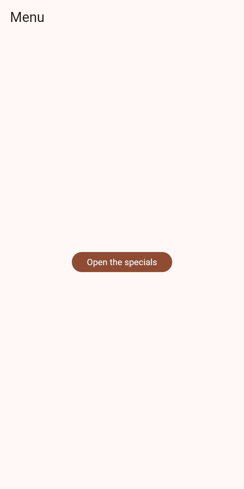
The menu; the specials page is broken
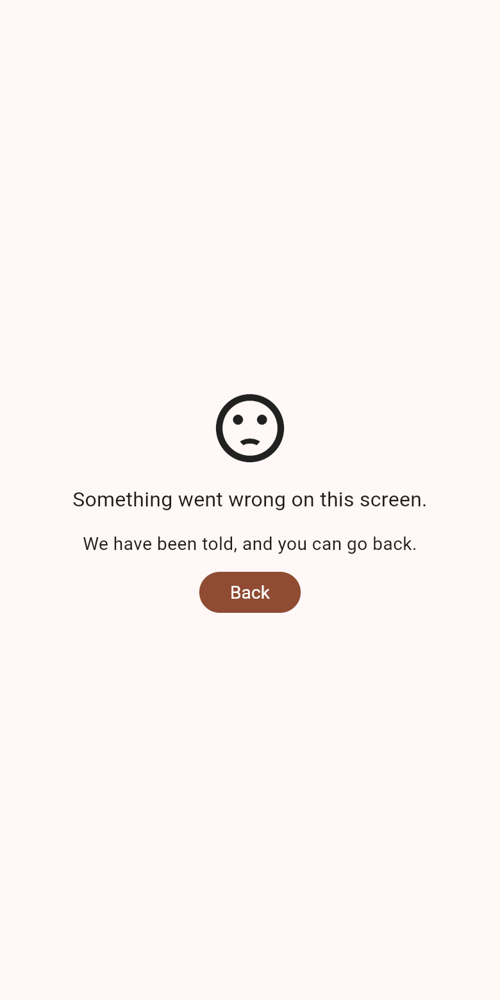
The release build shows a calm screen, and the error is reported
16.3Sending a report
A report is a small JSON document. It says what happened and where, the app version and platform, and the breadcrumbs, and nothing about the person: no name, no email, no order contents. The error message itself can contain user data, so in a real app it goes through the redactor of Chapter 14 first.
A test starts a real HTTP server, causes a real error, records it, and prints what the server received:
Terminal
$ flutter test test/server_test.dart
00:00 +0: loading test/server_test.dart
00:00 +0: a report reaches the server
{
"type": "StateError",
"message": "Bad state: No element",
"fatal": false,
"version": "1.4.0+42",
"platform": "linux",
"breadcrumbs": [
"open specials"
],
"stack": [
"#0 List.first (dart:core-patch/growable_array.dart:352:5)",
"#1 main.<anonymous closure> (file://test/server_test.dart:26:18)"
]
}
00:00 +1: All tests passed!
In production, the server stores reports, groups them by error type and top stack frame, and counts how many users each group affects, which is what tells you which crash to fix first.
16.4Reading an obfuscated stack trace
Chapter 15’s release builds use --obfuscate, which renames everything. A crash in such a build tells you nothing until it is translated back with the symbols saved at build time. To show it for real, a small app crashes on purpose a second after it starts:
lib/crash_app.dart (part)
class Order {
Order(this.items);
factory Order.fromJson(Map<String, Object?> json) =>
Order((json['items']! asList).cast<String>());
finalList<String> items;
}
int total(Map<String, Object?> json) => Order.fromJson(json).items.length * 45;
// The release app below crashes on purpose a second after it starts.void main() {
PlatformDispatcher.instance.onError = (error, stack) {
stdout.writeln('crash: $error');
stdout.writeln(stack);
exit(1);
};
runApp(
const MaterialApp(
home: Scaffold(body: Center(child: Text('Bit Café'))),
),
);
Timer(const Duration(seconds: 1), () => total({'customer': 'Layla'}));
}
Terminal
$ flutter build linux --release --obfuscate --split-debug-info=build/symbols -t lib/crash_app.dart
✓ Built build/linux/x64/release/bundle/bit_app
$ ls build/symbols
app.linux-x64.symbols
Only addresses. The symbols file, kept on the build machine and never shipped, can translate them. Flutter’s own command, on this Linux build, could not:
Terminal
$ flutter symbolize -i crash.txt -d build/symbols/app.linux-x64.symbols
crash: Null check operator used on a null value
*** *** *** *** *** *** *** *** *** *** *** *** *** *** *** ***
pid: 31689, tid: 140066282179392, name io.flutter.ui
os: linux arch: x64 comp: no sim: no
build_id: '49da3cbf4c5e4c216b483b3b31889a38'
isolate_dso_base: 7f639c179000, vm_dso_base: 0
isolate_instructions: 7f639c23d000, vm_instructions: 0
Failed to symbolize stack trace:
Cannot locate isolate instructions section in snapshot
The native_stack_traces package, from the Dart team and the same code flutter symbolize is built on, in its newest version, decoded the same file at once:
Terminal
$ dart pub global activate native_stack_traces
Activated native_stack_traces 0.7.1.
$ dart pub global run native_stack_traces:decode translate -d build/symbols/app.linux-x64.symbols -i crash.txt | grep '^#' | head -3#0 new Order.fromJson (lib/crash_app.dart:11:27)#1 total (lib/crash_app.dart:16:47)#2 main.<anonymous closure> (lib/crash_app.dart:30:43)
Now the trace says what happened: Order.fromJson, line 11, called from total, called from the timer in main. The order had no items.
16.5Analytics, with consent
Crash reports tell you what broke; analytics tell you what people do: which screens they open, where they give up, which features nobody finds. They are also the part of an app most likely to break the trust of the people using it. Three rules keep them honest: ask before collecting anything, collect events and not people, and send them in batches so that measuring does not cost the user battery and data. The projects build all three, and use the reports to measure the number that matters most after a release: the share of sessions without a crash.
Common mistakes
Mistake
What happens
Fix
Only FlutterError.onError
Async crashes never reported
Also PlatformDispatcher.instance.onError
The grey box in release
The app looks frozen
ErrorWidget.builder, with its own Material
User data in reports
A privacy problem in every crash
Versions, types and breadcrumbs only; redact messages
Losing the symbols
Release crashes that cannot be read
Keep symbols per release, upload them
Analytics before consent
Broken trust, and broken laws in many countries
Nothing collected until the user agrees
One request per event
Battery and data spent on measuring
Batches, by count or by time
Summary
Two handlers catch everything: FlutterError.onError for widget errors, PlatformDispatcher.instance.onError for the rest.
Reports carry the error, the version, the platform and breadcrumbs, never user data.
A custom ErrorWidget.builder replaces the release grey box with a calm screen.
Obfuscated traces are translated with the symbols kept from the build.
Analytics wait for consent, travel in batches, and the crash-free rate per version decides when a release is healthy.
Quick check answers: 1. Errors thrown while building, laying out or painting widgets are reported by the framework to FlutterError.onError; errors that nothing caught elsewhere, in futures, timers, streams or platform callbacks, reach PlatformDispatcher.instance.onError. 2. Because the error widget replaces the whole broken page, so there was no Material above its text to give it a style, and Flutter draws unstyled text in red with yellow underlines to make the mistake visible. 3. The symbols file saved by --split-debug-info for that exact build (matched by its build id), and a tool to translate the addresses: flutter symbolize or the native_stack_traces decoder.
Practice projects
The projects build analytics that respect consent and battery, and turn reports into the one number a release is judged by.
Project 16.1 · Easy
No consent, no events
Events logged before consent are not kept; events after it are; and when consent is withdrawn, everything still queued is dropped.
You will practise: state that gates behaviour, and tests that check what was not sent.
Ignore log while there is no consent.
On withdrawal, clear the queue and cancel the timer.
Log before, during and after consent, flush, and print what was sent.
$ flutter test test/consent_test.dart
00:00 +0: loading test/consent_test.dart
00:00 +0: no consent, no events
batches sent: [[{name: open_menu}, {name: add_to_order, drink: latte}]]
00:00 +1: All tests passed!
Hint: “open_specials” was logged with consent but never sent: it was still in the queue when consent was withdrawn. That is the right outcome; “no” applies to what has not left the phone yet.
Project 16.2 · Medium
Batches by count or by time
Send events ten at a time, and send whatever is left after thirty seconds, so that a quiet session still reports.
You will practise: timers, fakeAsync, and flushing.
Flush when the queue reaches the batch size.
Otherwise start a timer on the first queued event, and flush when it fires.
Log 23 events and move a fake clock 29, then 30 seconds.
Your result should look like this:
Terminal
$ flutter test test/batch_test.dart
00:00 +0: loading test/batch_test.dart
00:00 +0: ten events, or thirty seconds, whichever comes first
after 23 events: batches of [10, 10]
after 29 seconds: batches of [10, 10]
after 30 seconds: batches of [10, 10, 3]
00:00 +1: All tests passed!
Project 16.3 · Challenge
Crash-free sessions per version
From session records (version, crashed or not), compute the share of sessions without a crash for each version, and decide whether the new release is healthy.
You will practise: aggregation with maps, and reading a metric.
Count sessions and clean sessions per version.
Return the percentage for each version.
Feed it 1,000 sessions of 1.3.0 and 400 of 1.4.0, with different crash rates, and compare.
lib/observe/rates.dart (part)
Map<String, double> crashFreeRate(Iterable<Session> sessions) {
final total = <String, int>{};
final clean = <String, int>{};
for (final session in sessions) {
total.update(session.version, (n) => n + 1, ifAbsent: () => 1);
if (!session.crashed) {
clean.update(session.version, (n) => n + 1, ifAbsent: () => 1);
}
}
return {
for (final MapEntry(key: version, value: n) in total.entries)
version: 100 * (clean[version] ?? 0) / n,
};
}
Your result should look like this:
Terminal
$ flutter test test/rates_test.dart
00:00 +0: loading test/rates_test.dart
00:00 +0: crash-free sessions per version
1.3.0 99.2% of sessions without a crash
1.4.0 95.0% of sessions without a crash
00:00 +1: All tests passed!
Hint: 95% sounds good and is not: one session in twenty ends in a crash. Teams commonly aim for 99.5% or better, and stop a staged rollout when a new version falls clearly below the previous one. Look at sessions, not users: one unlucky user with many crashes and many happy users can hide each other in a per-user number.
Exercises
Easy Add the screen’s route name to the breadcrumbs automatically, for every navigation. Which Flutter class lets you observe navigation?
Easy The report includes the first eight lines of the stack. Why not the whole stack, and why not just one line?
Medium A crash happens while the phone is offline, and the app is killed. How can the report still reach the server?
Medium Two crashes have different messages (“order 41 has no items”, “order 42 has no items”) but the same cause. How should the server group them?
Challenge Design the events that would tell you where customers give up between opening the menu and paying. Which events, which parameters, and which ones must you avoid?
Answers to the exercises are at the end of the book and in the book’s code repository.
Coming up in Chapter 17
Seventeen chapters of parts. The last chapter puts them together: one café app, built with the architecture, state, navigation, offline data, design system, tests, accessibility, notifications, security, CI and reporting of this book.
17
Chapter 17
Capstone: A Production App
In this chapter you will
see one app built with the architecture, state, navigation and data layers of this book
follow a customer from the menu to an order that is ready, in tests at every level
check the whole app for accessibility, dark mode and large text
run the release pipeline: format, analysis, tests with coverage, and a production build
extend the app the way a team would: favorites, robustness checks, an offline outbox
Each chapter so far built one part, on its own, so that it could be seen clearly. A real app is all of them at once, and most of the skill of a senior engineer is in how they fit: which layer knows what, where a rule lives, what a test proves. This chapter builds Bit Café, a small ordering app, from the parts of the book, and runs everything a team would run before shipping it.
Bit
Everything in this chapter ran on the book’s machine: seven test files, the Linux integration test, the CI script and the web build behind the screenshots. And, fittingly for a last chapter, the screenshots caught a bug that every test had passed. Section 17.5 shows it.
One folder per feature: its pages and nothing else
2
state/
Providers: the cart, the menu, orders, favorites
3
router.dart
Three pages and a deep link to an order
4, 12
data/
The API behind an interface, the cached menu, the outbox
5, 6
design/
Spaces and corners as tokens
7
config.dart
The environment, from the build
15
observe/
Every error reported
16
The rule that holds it together is the one from Chapter 2: dependencies point inward. Pages know providers; providers know the data layer’s interfaces; nothing in data/ knows about widgets. That is what lets every layer be tested without the ones above it.
17.2Data
The app talks to the café through one interface. The demo app gives it an implementation that answers from memory, the tests give it a fake, and production gives it the HTTP client:
The menu shows the saved copy at once and the fresh one when it arrives, so a café with weak Wi-Fi still opens instantly:
lib/data/menu_repository.dart (part)
Stream<(List<Drink>, {bool fresh})> watch() async* {
final saved = await prefs.getString('menu');
if (saved != null) {
yield (
[
for (final item in jsonDecode(saved) asList)
Drink.fromJson(item asMap<String, Object?>),
],
fresh: false,
);
}
final menu = await api.menu();
await prefs.setString(
'menu',
jsonEncode([for (final drink in menu) drink.toJson()]),
);
yield (menu, fresh: true);
}
Terminal
$ flutter test test/menu_cache_test.dart
00:00 +0: loading test/menu_cache_test.dart
00:00 +0: the saved menu first, then the fresh one
first launch: [2 drinks, fresh: true]
second launch: [2 drinks, fresh: false, 2 drinks, fresh: true]
00:00 +1: All tests passed!
17.3State
The cart is plain state in a Notifier: a map from drink to count, replaced, never changed in place, so that every widget watching it rebuilds exactly when it should.
lib/state/providers.dart (part)
class Cart extends Notifier<Map<String, int>> {
@override
Map<String, int> build() => {};
void add(String id) => state = {...state, id: (state[id] ?? 0) + 1};
void remove(String id) {
final count = (state[id] ?? 0) - 1;
state = {
for (final MapEntry(:key, :value) in state.entries)
if (key != id) key: value,
if (count > 0) id: count,
};
}
void clear() => state = {};
}
Terminal
$ flutter test test/cart_test.dart
00:00 +0: loading test/cart_test.dart
00:00 +0: the cart adds, removes and totals
00:00 +1: All tests passed!
17.4Screens
The menu page uses what the book taught about lists, motion and accessibility: rows built lazily, a badge that moves only when the person allows motion, and buttons named after what they do and to which drink.
lib/features/menu/menu_page.dart (part)
body: switch (menu) {
AsyncData(value: (final drinks, fresh: _)) => ListView.builder(
// Only the rows on screen are built (Chapter 9).
itemCount: drinks.length,
itemBuilder: (context, i) {
final drink = drinks[i];
return ListTile(
contentPadding: const EdgeInsets.symmetric(
horizontal: Space.m,
vertical: Space.s,
),
title: Text(drink.name),
subtitle: Text('${drink.about}\n${drink.price} EGP'),
isThreeLine: true,
trailing: IconButton.filled(
tooltip: 'Add ${drink.name}',
onPressed: () => ref.read(cartProvider.notifier).add(drink.id),
// Inside a ListTile, the tile's icon colour wins over the button's: say it explicitly.
icon: Icon(
Icons.add,
color: Theme.of(context).colorScheme.onPrimary,
),
),
);
},
),
AsyncError() => Center(
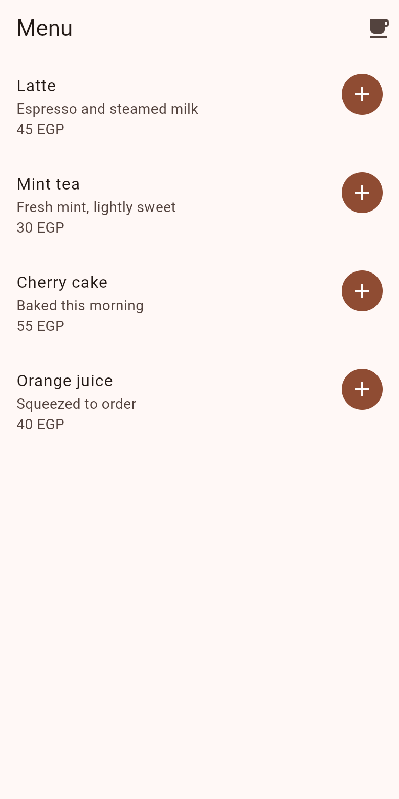
The menu
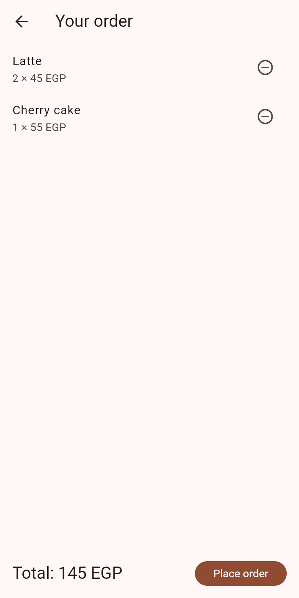
The order, with its total
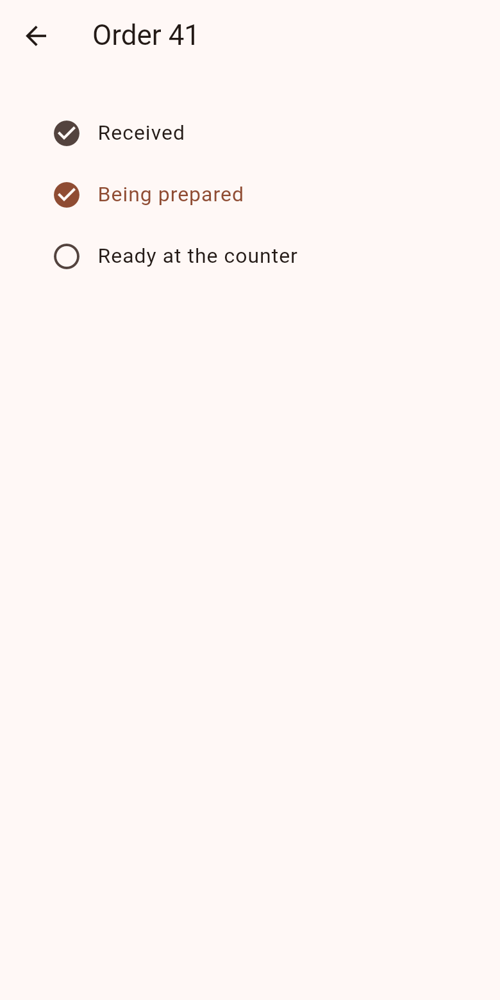
The order being prepared
17.5Tests at every level
The main journey, from the menu to a placed order, is a widget test with the fake API: fast, and run on every push.
test/journey_test.dart (part)
testWidgets('from the menu to an order that is ready', (tester) async {
final api = FakeApi();
await tester.pumpWidget(
cafe(
overrides: [
apiProvider.overrideWithValue(api),
prefsProvider.overrideWithValue(memoryPrefs()),
],
),
);
await tester.pumpAndSettle();
await tester.tap(find.byTooltip('Add Latte'));
await tester.tap(find.byTooltip('Add Latte'));
await tester.tap(find.byTooltip('Add Cherry cake'));
await tester.tap(find.byTooltip('Open your order'));
await tester.pumpAndSettle();
expect(find.text('Total: 145 EGP'), findsOneWidget);
await tester.tap(find.text('Place order'));
await tester.pumpAndSettle();
expect(find.text('Order 41'), findsOneWidget);
expect(api.placed.single, {'latte': 2, 'cake': 1});
});
Terminal
$ flutter test test/journey_test.dart
00:00 +0: loading test/journey_test.dart
00:00 +0: from the menu to an order that is ready
00:01 +1: All tests passed!
The same journey runs as the real app on Linux, with the demo API and real time, until the order is ready:
Terminal
$ flutter test integration_test/journey_test.dart -d linux
00:00 +0: loading integration_test/journey_test.dart
Building Linux application...
✓ Built build/linux/x64/debug/bundle/bit_app
00:00 +0: from the menu to an order that is ready
order 41: ready after a pull to refresh
00:06 +1: (tearDownAll)
00:06 +1: All tests passed!
And the menu and cart pages pass Flutter’s accessibility guidelines:
Terminal
$ flutter test test/a11y_test.dart
00:00 +0: loading test/a11y_test.dart
00:00 +0: the main screens meet the accessibility guidelines
menu: labels, tap targets and contrast pass
cart: labels, tap targets and contrast pass
00:01 +1: All tests passed!
17.6Ship it
The entry point installs crash reporting before anything else can fail, then starts the app with its real dependencies:
Before a release, the same script CI runs on every push: formatting, analysis, every test with coverage, and the production build.
Terminal
$ sh tool/ci.sh
== format
== analyze
No issues found! (ran in 0.9s)
== test
00:07 +7: All tests passed!
== build
✓ Built build/web
From here, Chapter 15’s flavors and signing turn the build into store packages, Chapter 12’s push source replaces the demo’s, and Chapter 14’s token store holds the session. Each is a file added to the map above, not a change to what is already there. That is the payoff of the structure: a feature is a new folder; a new service is a new implementation of an interface.
Summary
One app, built in layers: features, state, data behind interfaces, design tokens, configuration, reporting.
Dependencies point inward, so every layer is tested without the ones above it.
The main journey runs as a fast widget test on every push and as the real app in an integration test.
Accessibility, dark mode and large text are checked by tests; the screen itself is still checked by eye.
One script, run by CI and by you, decides whether the app is ready to ship.
Practice projects
The projects extend Bit Café the way a team would, each change in its own place and with its own test.
Project 17.1 · Easy
Favorites that survive a restart
Customers save their favorite drinks; the list is still there when the app starts again.
You will practise:AsyncNotifier, persistence through the existing preferences provider, and tests across two containers.
Load the saved list in build; toggle by writing the new list, then updating the state.
In a test, toggle three times in one container, then read the favorites from a new container over the same storage.
lib/state/favorites.dart (part)
Future<void> toggle(String id) async {
final current = await future;
final next = current.contains(id)
? ({...current}..remove(id))
: {...current, id};
await ref
.read(prefsProvider)
.setStringList('favorites', next.toList()..sort());
state = AsyncData(next);
}
Your result should look like this:
Terminal
$ flutter test test/favorites_test.dart
00:00 +0: loading test/favorites_test.dart
00:00 +0: favorites are remembered
after a restart: {cake}
00:00 +1: All tests passed!
Project 17.2 · Medium
Every screen, in the hardest conditions
Walk through every screen with the dark theme, text at 200% and a small phone, and fail on any overflow.
You will practise: test values for the platform (text scale, brightness), view sizes, and takeException.
Set the view to 360 × 640, the text scale to 2 and the brightness to dark, and reset them after the test.
Visit the menu, the cart and the order, checking for exceptions on each.
$ flutter test test/robust_test.dart
00:00 +0: loading test/robust_test.dart
00:00 +0: every screen, dark and at 200% text, without overflow
dark theme, text at 200%, 360 x 640: menu, cart, order without overflow
00:01 +1: All tests passed!
Project 17.3 · Challenge
Orders placed offline
When the network is down, the order is kept in an outbox and sent when it returns, once.
You will practise: network failures as data, persistence, and idempotent retries.
On SocketException, append the order to a list in the preferences and return null.
flush sends the waiting orders in order and keeps those that still fail.
Test offline, back online, and a second flush that sends nothing.
$ flutter test test/outbox_test.dart
00:00 +0: loading test/outbox_test.dart
00:00 +0: an order placed offline is sent when the network returns
offline: order queued, sent to the server: 0
back online: 1 sent, server received [{latte: 1}]
00:00 +1: All tests passed!
Hint: a real server should also accept an id chosen by the app for each order, so that an order sent twice (the request arrived, the answer was lost) is recognized and not prepared twice. That is the idempotency of Chapter 6, applied to money and coffee.
Exercises
Easy Show a heart on each menu row for favorites. Which files change, and which test would you add?
Easy Where would you put a rule that a cart may not hold more than ten of one drink, and why there?
Medium Replace DemoApi with an HTTP implementation using the pinned client of Chapter 14. What changes outside data/?
Medium Open the order page from a push notification for order 41 (Chapter 12). What is already in place, and what must be added?
Challenge Write the decision record for this app: five decisions, each with the alternative you did not choose and why.
Answers to the exercises are at the end of the book and in the book’s code repository.
Where to go from here
You have built every part of a production Flutter app and put them together. The next step is not another book: it is a real app, with real users, shipped and then improved, release after release. Keep the habits of these chapters (pass in what you depend on, measure before you optimize, test what matters, look at the real screen) and the code will stay something a team is glad to work on.
Appendix
Answers to the Exercises
Try every exercise yourself before you look here. When your answer differs from this one, that is not necessarily wrong: most problems have several good solutions. If yours handles normal and unusual cases, and you can explain your choices, it is a good answer. The full, tested code for every answer is in the book’s code repository.
Chapter 1
SizedBox has one, a RenderConstrainedBox. Icon has none of its own: like Text, it builds other widgets, among them a RichText whose RenderParagraph paints the icon as one letter of an icon font, inside a few widgets for size and semantics. Writing the prediction first is the point: the mistakes you make tell you which widgets you thought were “real”.
Still four times. A const constructor only allows a constant; the call site decides. Badge2() without const, in a build method, creates a new object every time, and a new object is built again. That is why the lint prefer_const_constructors looks at the calls, not only at the classes.
The error says that a RenderFlex has children with flex but its incoming height constraint is unbounded: the ListView gave the Column a maximum height of infinity, and Expanded means “take what is left of the maximum”. Either give the column a bounded height (a SizedBox(height: …) around it, or no ListView if the page does not need to scroll), or drop Expanded and let the children take their own sizes with mainAxisSize: MainAxisSize.min.
In the row without keys, the text stays in its position and appears under the other letter, because the text lives in the State of the field, which the element kept; the focus and the cursor stay there too. In the row with keys, the text, the cursor and the focus move with their tile. This is the most common real-life version of the keys problem: forms whose fields are added or removed.
The picture is painted once again: it now has its own layer, and when the spinner repaints the parent’s layer, the picture’s layer is reused without painting it. Both placements protect the picture; the difference is what else they protect. A boundary around the thing that changes protects all its neighbours at once, which is usually best; a boundary around one expensive static thing protects only that one, and is the better choice when that thing is costly to paint and the changing part is spread across the screen.
Chapter 2
Data: OrderDto and jsonDecode. Domain: the 20-item rule and Money. Presentation: Colors.green and the text “Order placed”. A quick test for any item: would it change if the server changed (data), if the business changed (domain), or if the design or the language changed (presentation)?
The analyzer reports that the switch in OrdersController.describe does not handle every OrderFailure, because SoldOut is not matched. That is the sealed type doing its work: it lists, at compile time, every place that must decide what to say about the new case, before any person meets it.
Give FakeOrdersSource an optional starting list, FakeOrdersSource({this.fails = false, List<Map<String, dynamic>> orders = const []}), copying it into _orders; the demo root passes three orders in JSON shape and the 10:00 clock. Nothing else changes, and the page shows the history at once after the first refresh. Keep demo data in the composition root or a demo file, never in the domain.
Store piastres in Money, keep a getter int get pounds => piastres ~/ 100, and write the menu as Money(4500); +, *, == and compareTo work as before. Only money.dart and order.dart change. Few files change because only the domain knows what money is: the data layer never carries prices (the server computes nothing here), and the presentation only reads pounds. That is the point of a value object.
It is allowed: the dependency rule is about the domain, and the presentation is Flutter’s layer by nature. But a controller in plain Dart, with its state as an immutable value and no BuildContext, can be tested without pumping widgets, reused by another screen or a desktop app, and replaced in tests more easily. You lose the convenience of ChangeNotifier’s listeners and need another way to tell the screen something changed, which is exactly what Riverpod’s Notifier, a plain Dart class, gives you in the next chapter.
Chapter 3
The first tap throws: build returns const {}, and a constant map cannot be changed, so state[item] = … fails with an UnsupportedError and every test that adds to the basket fails with it. Make the first state a plain {} and the error disappears, which is worse: the map now changes, but state is the same object, so nothing is notified, the circles on the screen keep showing 0, and the select test counts one build each. Constant first states are a cheap guard against this mistake.
The order is placed and the basket empties, but “Your orders” still says “Nothing ordered yet”: the history was loaded once and nothing told it that it was stale. It catches up only when something rebuilds it from scratch: the Retry button, leaving and reopening a screen whose provider was disposed, or restarting the app. Invalidating at the place where data changes is what keeps every screen right without knowing about each other.
ref.listen(placeControllerProvider, (previous, next) { if (next.value case Ok(:final value)) { ScaffoldMessenger.of(context).showSnackBar(SnackBar(content: Text('… ${value.id}'))); } }); at the start of build. listen runs a callback once per change, which is what a side effect needs: a snack bar, a navigation, a sound. watch only rebuilds, and showing a snack bar from build would show it again on every rebuild, even when nothing new happened.
FutureProvider(…, retry: (count, error) => null). The offline screen then shows the error at once instead of a value that stays loading while retrying; the Retry button still works, because it invalidates. Choose it when a retry cannot help (a 403, a validation error, a missing record), or when the person should decide, for example on metered data; keep automatic retries for transient failures such as timeouts.
historyProvider.overrideWith((ref) async => [order1, order2, order3]). It skips the source, the DTOs and the repository’s mapping: good for screenshots and for testing how the page draws a known list, but it no longer tests that the data layer produces that list, and new orders never appear, because invalidating the history runs the override again and returns the same three. Overriding the source keeps every layer in play.
Chapter 4
“No order number 9” and “No order number ?”, both inside the normal layout, with the Orders tab selected and a back arrow. Both addresses match the route /orders/:id, so the router builds OrderPage; only the page knows that order 9 does not exist, and int.tryParse('abc') gives null instead of crashing. The not-found page is only for addresses that match no route at all.
The back arrow disappears. A top-level route has no parent in the tree, so opening it builds a stack of one page: there is nothing to go back to. (Outside the shell it also loses the tabs.) Nesting is not decoration: it is what tells the router which pages belong under a deep link.
onDestinationSelected: (i) => shell.goBranch(i, initialLocation: i == shell.currentIndex). goBranch normally restores the branch’s last location, which is what keeps the cake open; with initialLocation: true it goes to the branch’s first route instead. Passing it only for the tab that is already selected gives the behaviour people know from most apps: tap another tab to return to where you were, tap the current tab again to return to its start.
Give the child route its own redirect: GoRoute(path: ':id', redirect: (context, state) => drinks.containsKey(state.pathParameters['id']) ? null : Routes.menu, …). It is usually worse: the person followed a link, landed on the menu, and does not know why. A message that says “no drink called coffee” explains it. Redirects are better for addresses that moved, such as an old id renamed, where the destination really is the same thing.
Make the sign-in state a Notifier<bool> provider, and create the router in a provider: final routerProvider = Provider((ref) { final refresh = ValueNotifier(0); ref.listen(authProvider, (previous, next) => refresh.value++); ref.onDispose(refresh.dispose); return GoRouter(refreshListenable: refresh, redirect: (context, state) { final signedIn = ref.read(authProvider); … }, routes: […]); });. The app watches routerProvider for routerConfig, and a test overrides authProvider in its ProviderScope, as in Chapter 3. The router is created once per container, never in build.
Chapter 5
Four attempts have three waits between them, with limits of 200, 400 and 800 milliseconds: at most 1.4 seconds of waiting, and usually about half of that, since full jitter picks a random value below each limit. The cap of 5 seconds is never reached with these numbers; it matters with more attempts. A Retry-After from the server replaces the computed wait, and can make it longer.
get returns null: the client treats an empty successful body as “no content”, which is what 204 No Content and many DELETE answers send. It is not a BadResponse because nothing failed to parse. The repository that expected a list must decide what null means for it, an empty list or an error, and that decision belongs there, not in the client.
Give requests an optional cancel token (an object with a cancelled flag, or a Future that completes on cancel), created by the screen and cancelled in dispose. The client checks it in two places: before each attempt, and after each wait, throwing Cancelled. Screens ignore Cancelled: nobody is there to see it. Without it, a person who left the screen still causes four requests and four waits.
Wrap the client (an http.BaseClient like Project 5.3) or log in _send: '$method $path -> $status in ${watch.elapsedMilliseconds} ms'. Never the Authorization header: logs are copied to crash reporters, support tickets and screenshots, and a token in a log lets anyone who reads it act as the person. Never the body: it holds personal data (names, addresses, messages), and collecting it in logs is both a privacy risk and, in many countries, against the law.
Without jitter, the counts arrive in tall spikes: all one hundred clients at 0, at 200, at 600 and at 1400 milliseconds, and nothing in between, so the server that is just recovering meets a wall of requests at each spike and may fall over again. With full jitter the same requests spread across every bucket, a few per 100 milliseconds, and the recovering server sees a steady trickle. The total number of requests is the same; only their shape in time changes, and that shape decides whether the server recovers.
Chapter 6
So that the server knows the person’s changes before the app compares notes with it. Pulling first has two costs. The pull brings the server’s older copy of things the person has just changed; with this chapter’s merge the queued note is protected, but with a simpler rule such as last write wins the unsent change would be overwritten. And every push creates new versions above the cursor, so the next pull fetches the app’s own changes back. Push first, then pull, and the cursor already covers them.
It puts the order back in the outbox: order.copyWith(sync: SyncState.queued), with the error cleared, then runs a sync. Clearing needs care: copyWith written with error ?? this.error can never set error back to null. Give it a separate way to clear (a clearError flag, or a method retried() that builds the new order), and put the action in the orders controller, next to place, so that screens only call it.
An order that was never sent has never been seen by the server: it can simply be removed from the store and therefore from the outbox (unless a push for it is running at that moment, which the engine should guard against). An order that was sent exists on the server too: removing it locally would bring it back with the next pull. Mark it deleted and queued (a tombstone), push the delete, and remove the row only when the server confirms.
The rule “the note belongs to the person” breaks: now two writers share one field, and field ownership can no longer decide. The cleanest fix is to give each writer its own field, a note from the person and a reply from the café, so ownership holds again. If one field must stay shared, the server should keep a version per field and refuse a change based on an older version, and the app should show the person both texts and let them choose.
Both phones have a queued note based on version 1. The first to sync wins at the server (version 2). The second pushes a note based on version 1; the server answers with a conflict instead of overwriting, and returns its current note. The second phone marks the order as conflicting, keeps both texts, and asks the person (“Your other phone changed this note”). The test: one fake server, two local stores, two engines; edit offline on both, sync A, sync B, and expect A’s note on the server, a conflict on B with both notes, and no silent loss.
Chapter 7
Nowhere, and that is the lesson: the catalogue lists the spaces by hand, [('xs', Space.xs), …], so a new token is invisible until someone remembers to add it. Give Space one list of every value, static const all = {'xs': xs, 's': s, 'm': m, 'l': l, 'xl': xl, 'xxl': xxl}, and let the catalogue loop over it; from then on every new token appears by itself, in every theme.
Everything that comes from Material’s ColorScheme turns blue: the filled Order buttons, the selected navigation item, the switch, and the tints of surfaces and cards. The prices and the tags stay as they were, because they come from the Brand extension, which the seed does not touch. That split is deliberate: Material’s roles follow the seed, and the brand’s own colours are chosen and tested by hand.
brand.dart gets info and onInfo, with values in light and dark and a line in lerp; components.dart gets a case in the StatusTag switch, which the compiler demands as soon as the enum grows; the catalogue shows the new tag. The contrast test must check the new pair in both themes. No screen changes until one decides to use the new tag.
The first to break is the card’s header row: a long drink name in large text and a tag share one line, and the name wraps into a narrow column or overflows. Buttons keep working because their height is a minimum, not a fixed size. The tokens help because the fix is made once, in the component: the header becomes a Wrap (or the tag moves under the name when space is short), and every screen that uses MenuCard is fixed together. Test it with MediaQuery(data: MediaQuery.of(context).copyWith(textScaler: TextScaler.linear(2))) in a widget test.
Add 'a hand-made text style': RegExp(r'TextStyle\(') to the rules; the screens already use context.text.titleLarge and friends. A copyWith on a theme style is acceptable for a role colour from the theme, as the price does with context.brand.accent, because the size, weight and line height still come from the design system. When the same copyWith appears in two places, it has become a style of its own: give it a name in the design system (priceStyle).
Chapter 8
With Curves.linear the height at 50 ms is about 110 (a sixth of the way from 96 to 180), against 130 with Motion.move; at 150 ms it is 138 against 170. The linear card starts slower and arrives at full speed, which is why it feels like it hits a wall at the end.
The transitionBuilder: (child, animation) => SlideTransition(position: Tween(begin: const Offset(0, 1), end: Offset.zero).animate(animation), child: child). Wrap it in a ClipRect so that the numbers do not slide over the card’s title. Nothing else changes: the key still makes each number a new child.
Stop the repetition and finish the current turn: turns.stop(); turns.animateTo(1, curve: Motion.enter), which takes the ring from where it is to the end of the turn and stops there. Calling stop() alone freezes it mid-turn; calling reset() makes it jump back to the start. When the next order begins, turns.repeat() again.
flightShuttleBuilder: (context, animation, direction, from, to) => ClipOval(child: to.widget) on both heroes. It is needed when the two ends do not have the same shape, for example a square photo in the list and a round one on the page, or when the destination widget depends on something that is not there during the flight (a Material ancestor, text styles). With two circles, as here, the default shuttle is already right.
Read every .dart file under lib/ except lib/motion/, and report each line that matches RegExp(r'Duration\(\s*milliseconds:') as file:line, expecting none. It protects the motion tokens the way Chapter 7’s guard protects colours and spacing: new screens cannot invent their own speeds. It should allow durations that are not motion, such as a network timeout or a debounce, so either keep those in a named constant in their own layer (lib/data/, excluded from the check) or allow them line by line with a short, reviewed list.
Chapter 9
Because n changes on each turn of the loop, DrinkRow(n: n) is not a constant expression, and the compiler refuses const there. const works one level up: the whole list moves into its own widget, DrinkColumn, which takes no arguments and can be const. Its rows are still built in a loop, but only once, because nothing ever asks DrinkColumn to rebuild.
(56 × 2).round() = 112. The photo keeps its 4:3 shape, so it is decoded at 112 × 84 pixels: 112 × 84 × 4 = 37,632 bytes, about 0.04 MB.
Once. Every row uses the same provider, an AssetImage of the same file wrapped in a ResizeImage of the same width, so they share one key in Flutter’s ImageCache: the first row decodes the photo, and the 999 others reuse the decoded image. It would be decoded again only if the cache evicted it, which happens after 1000 images or 100 MB by default (PaintingBinding.instance.imageCache.maximumSize and maximumSizeBytes).
Future<void> startTogether() => Future.wait([readSettings().then((settings) => fetchMenu(settings.language)), openDatabase()]).then((_) {});. The menu still waits for the settings, 300 + 400 = 700 ms, but the database opens at the same time, so the whole startup takes about 700 ms instead of 900.
Keep a map of builds per widget type (each counted widget adds its runtimeType), reset it after the first frame, tap once, and expect(rowBuilds, 0), printing the map sorted by count when it fails so the message names the culprit. In CI a count is deterministic: the same code gives the same number on a laptop, a CI machine under load and a fast desktop, so the test fails exactly when the code gets worse. A test of milliseconds measures the machine as much as the code: it either flakes or is given so much slack that it catches nothing.
Chapter 10
expect(total(const [Line('latte', 45, 3)], DateTime(2026, 11, 23, 16)), 108);. The subtotal is 135, and 20% of it, computed as 135 * 20 ~/ 100, is 27, so the total is 108. It is an int, never 108.0, because prices are kept in whole pounds and ~/ divides without leaving integers: money in floating point collects rounding errors.
Inside the MockClient callback, add expect(request.method, 'GET');. An expect that fails inside the callback fails the test, because the error travels back through the Future that menu() returns.
Pump the screen with a FakeMenu whose Completer is never completed, then expect(find.textContaining('Total'), findsNothing) and expect(find.byType(CircularProgressIndicator), findsOneWidget). It passes today because the total is built inside the data branch; the test makes sure nobody moves it out of there without noticing.
Load a font file before the test draws, and use it in the theme: final loader = FontLoader('Roboto')..addFont(rootBundle.load('assets/fonts/Roboto-Regular.ttf')); await loader.load();, with ThemeData(fontFamily: 'Roboto'), and the same for the icon font. You gain images a designer can review, and catch problems like text that overflows or wraps. You risk goldens that differ between machines, because real fonts are drawn with anti-aliasing that depends on the platform: generate and compare such goldens on one kind of machine only, usually the CI runner.
A Linux CI runner can run it as this chapter did: it needs Flutter, the Linux desktop tools (clang, cmake, ninja-build, pkg-config, libgtk-3-dev) and a virtual screen, then xvfb-run flutter test integration_test -d linux. The first build takes a minute or two and each journey a few seconds; keep the pull-request suite under about ten minutes, and run longer journeys, or the same tests on an Android emulator, after merging or every night.
Chapter 11
It now carries information, so it must stay in the tree with a description: Image.asset('assets/latte.jpg', semanticLabel: 'Latte in its tall glass cup'), or, for a drawn picture like the hurried menu’s, Semantics(image: true, label: '…', child: …) instead of ExcludeSemantics. Describe what the picture adds, not that it is a picture: screen readers already say “image”.
Because screen-reader users often move by element type, not by row: VoiceOver’s rotor and TalkBack’s navigation can jump from button to button, and Android and iOS can list all the buttons on a screen. Out of their rows, three buttons called “Add” cannot be told apart; “Add Latte”, “Add Mint tea” and “Add Cherry cake” can.
AppBar did: it marks its title as a header that names the route, which the web build turned into a heading. For the total, wrap it in Semantics(liveRegion: true, child: …): on Android, TalkBack reads it again each time its text changes, without the user moving to it. Live regions are not honoured the same way on every platform, so for a change that matters, also send an announcement, as in Project 11.1.
Find every IconButton with find.byType(IconButton), read tester.widget<IconButton>(…).tooltip, and fail with the list of those without one. It is stricter because labeledTapTargetGuideline accepts any label, from any source, and only for targets on screen in that test; the tooltip rule also guarantees the long-press label sighted users see, and covers every icon button the test pumps, consistently, as a house rule.
Walk the tree in traversal order (as heard does in the reading-order test) and print every name. Nothing moves: in both languages each row is read as drink, “Save”, “Add”, and the total before “Check out”, exactly as the browser’s trees in this chapter show. In Arabic the row is mirrored and read in the mirrored direction, so the order for the listener is the same, which is what a correct right-to-left setup should give. With a Directionality widget alone, every row would be read backwards.
Chapter 12
lib/push/message.dart gets a PushKind.chat, a case 'chat' => PushKind.chat (with the same check that the id is a number) and PushKind.chat => '/chat/$orderId' in route; the compiler points at every switch that must grow. The router in cafe.dart needs a /chat/:id route. The message test gets a line for a chat message, and the app test a case where a tapped chat message opens the chat page.
No banner, and no second copy of the page: the user is already looking at the answer. Before showing the banner, compare the message’s route with the router’s current location (router.routerDelegate.currentConfiguration.uri.toString()), and if they are the same, refresh the order page’s data instead. Write it as a widget test: open order 42, deliver its message, and expect no SnackBar.
After the user signs in (the server must know whose token it is), whenever the platform issues a new one, and when the app is reinstalled or its data cleared. Add Stream<String> get tokens to PushSource, implemented with getToken() followed by FirebaseMessaging.instance.onTokenRefresh; in a test, the fake emits two tokens and a fake API records that both were sent, and that nothing is sent before sign-in.
The user can silence offers in the system’s settings and keep order updates; with one channel, their only choice is all or nothing, and many choose nothing. Channels appear in three places: created once at startup with createNotificationChannel on the plugin’s Android implementation, chosen by id in each AndroidNotificationDetails, and named in the FCM message (android.notification.channel_id) for notifications the system shows by itself.
initialize(onDidReceiveNotificationResponse: …) receives taps while the app is running, in the foreground or the background, and should call router.go; getNotificationAppLaunchDetails(), read at startup, says whether a notification launched the app, and with which payload; onDidReceiveBackgroundNotificationResponse, a top-level @pragma('vm:entry-point') function, handles notification actions without opening the app. Put only the order id in the payload, and parse it as carefully as a push message: it comes back from outside the app.
Chapter 13
Only pigeons/device.dart (add int uptimeMinutes();) and the implementations: the C++ function and its slot in the vtable, the Kotlin and Swift methods, and the Dart wrapper if the screen uses it. dart run pigeon --input pigeons/device.dart regenerates the five generated files; the Kotlin compiler then refuses to build until AndroidDevice implements the new method, and the C++ compiler warns if the vtable is missing it.
A MissingPluginException, the same as when there is no handler at all: “not implemented” means “this side does not know that method”. DeviceChannel.info() catches it and returns null, so the screen falls back as it does on the web.
Start the work with g_task_run_in_thread (or a GThreadPool), keep the call to answer later, and return without answering; when the thread finishes, answer from the main thread with g_main_context_invoke. For Pigeon, mark the method @async in the definition: the generated GObject code then gives the handler a response handle to answer with later, instead of expecting the answer as the return value.
In C++: the point is to avoid sending messages that carry no news, and only the sending side can avoid sending. Keep the last value in a static variable and call fl_event_channel_send only when the new reading differs. Dart can still use distinct() for safety, but by then the work of encoding and sending has already been done.
Create a plugin with flutter create --template=plugin --platforms=android,ios,linux cafe_device; move pigeons/device.dart, the generated files and the native implementations into it, and register the Linux and Android sides in the plugin’s own registration functions instead of the app’s my_application.cc and MainActivity. The app keeps only the dependency and the Dart code that uses DeviceSource; fl_register_plugins and Android’s plugin registrant then register it automatically.
Chapter 14
A const is decided when the app is compiled, not at sign-in; a value received at run time cannot be one. What the colleague means is a variable in memory, which is right for the access token, as TokenStore does. But a const secret would be the worst of both: compiled into the app, the same for every user, and readable with strings as section 14.3 showed.
Add (RegExp(r'\b(?:\d[ -]?){9,15}(\d{4})\b'), (m) => '**** ${m[1]}'): nine to fifteen digits, each perhaps followed by a space or hyphen, then the last four, captured. Test a spaced card number, a plain one, and an order number of five digits that must stay untouched.
On Android, FLAG_SECURE on the window blocks screenshots and screen recording and hides the screen in the recent-apps list (set from Kotlin, or with a plugin, only on that page). iOS has no equivalent block; the app can detect a screenshot after it happened, or blur its content when the app moves to the background. Neither stops a second phone pointed at the screen: the real protection is that the code is single-use and checked on the server.
A certificate changes at every renewal; its key pair can stay the same if the server team renews with the same key. Pinning the hash of the public key (the SubjectPublicKeyInfo, SHA-256, base64) then survives renewals. Get it with openssl x509 -in cert.pem -pubkey -noout | openssl pkey -pubin -outform der | openssl dgst -sha256 -binary | base64, and in Dart, compare it in HttpClient.badCertificateCallback or a custom check on connectionInfo, while keeping normal validation on.
A root or jailbreak check is a speed bump: it stops casual users of rooted phones and makes automated abuse a little more work, but the attacker controls the phone and can patch the check out of the app. Payments must be protected where the attacker has no control: the payment provider’s own SDK and server, server-side verification of every transaction, and, where available, platform attestation (Play Integrity, App Attest) whose verdict your server checks, not the app.
Chapter 15
Every file in config/ gets the key, and lib/config.dart gets a String.fromEnvironment('SUPPORT_EMAIL', defaultValue: …). If one file is forgotten, Project 15.1’s test fails with a message naming that file, because its keys differ from the others.
Because the flavor sets versionNameSuffix = "-staging", which Gradle appends to the version name from pubspec.yaml (0.1.0). It shows in Settings and in crash reports, so nobody mistakes a staging build for a release.
Put each flavor’s icons in its own source set, android/app/src/dev/res/mipmap-* and android/app/src/staging/res/mipmap-*, with the same file names as in src/main/res. Gradle merges the source sets and the flavor’s resources win over main’s; the prod flavor uses main’s icons. flutter_launcher_icons can generate them per flavor from a configuration file for each one.
Add a second job, or a workflow, with on: push: tags: ['v*'], that runs tool/release.sh. The CI system must hold the keystore (base64-encoded) and its password as encrypted secrets; the job decodes the keystore to a temporary file, writes key.properties pointing to it, sets STORE_PASSWORD from the secret for that step only, and uses the run number as the build number. Nothing is committed, and everything disappears with the machine.
Cache the pub and Gradle downloads between runs; run the analyzer and tests, which take a minute, on every pull request, and build the Android app only on the main branch and on tags (or only when android/ or the dependencies change); and split the work into parallel jobs (checks, web build, Android build) so the total time is the longest job, not the sum. None of these checks less: the Android build still runs before every release.
Chapter 16
A NavigatorObserver: give MaterialApp (or the router) an observer whose didPush, didPop and didReplace add route.settings.name to the breadcrumbs. With go_router, pass it in the router’s observers, and name your routes so the breadcrumbs read as words, not as anonymous routes.
One line is usually the framework method that threw (List.first), which says nothing about your code; the useful frames are a few lines below. The whole stack of a Flutter error can be a hundred framework frames, most of them identical between reports, which costs data and storage for nothing. Eight lines usually reach the app’s own frames; a crash service keeps the whole stack because it stores it compactly and groups by it.
Write the report to a file before anything else, synchronously if the error is fatal, and send queued files on the next launch, deleting each one when the server accepts it. The sending is the same ReportSink, reading from a small queue on disk, as the offline outbox of Chapter 6.
By the error type and the top frames of the stack that belong to the app (here Order.fromJson, total), not by the message. Messages contain data that changes between occurrences; the place in the code does not. That grouping is also why reports keep the stack in a stable form.
One event per step of the funnel, with the same names on every platform: menu_opened, item_added (with the item’s category and the cart size, not the customer), checkout_started, payment_failed (with the error code), order_placed (with the number of items and a price bucket). The drop between two steps shows where people give up. Avoid anything that identifies a person: names, emails, phone numbers, exact addresses or locations, free-text notes, and order or payment ids that can be joined with other data.
Chapter 17
The menu page watches favoritesProvider and shows an IconButton with a filled or empty heart, a tooltip “Save Latte” or “Unsave Latte”, and toggle on press; nothing in data/ changes. Add a widget test: tap the heart for Latte, expect the filled heart and the provider’s set to contain latte, and run the accessibility test again, since a new button is a new tap target.
In the Cart notifier’s add, because the cart is the one place every way of adding passes through: the menu button, a “repeat last order” button, a deep link. A rule in a page is a rule only for that page. If the limit is a business rule, the server checks it too, and the app’s check is the friendly early warning.
Only data/ and the place where dependencies are chosen: a new HttpCafeApi implements CafeApi using pinnedClient(...) and AppConfig.apiUrl, and apiProvider returning it in main_cafe.dart (or the provider’s default). Pages, providers and tests do not change; the tests keep using the fake. That is the point of the interface.
Already in place: the route /orders/:id, the order page and its provider. To add: a PushSource (Chapter 12) provided at the top of the app, listening to the opened and initial messages and calling router.go(message.route), with the message parsing and checking of Chapter 12; and the router created where that listener can reach it, as in _CafeAppState.
For example: Riverpod rather than setState everywhere (shared state across pages, testable without widgets); features in folders rather than layers at the top (a feature’s files stay together); a cached menu rather than always loading (the café’s Wi-Fi is weak); configuration files rather than code edits per environment (no accidental production builds); asking for notifications after the first order rather than at launch (people refuse what they do not understand). For each, the record names the alternative, the reason, and the date, so it can be revisited when the reason changes.